Renal Biochemistry, Explained
Nitrogen, amino acids and nucleotides: how protein is digested, how its nitrogen leaves as urea, what amino acids are turned into, and how purines and pyrimidines are made and broken down. In the order that makes it easiest to learn. Each section ends with questions to check you understood it.
Nitrogen balance and protein digestion
Protein is how nitrogen enters the body, once the stomach, the pancreas and the small intestine have cut it into amino acids. These join a small pool that the body's own proteins also feed and draw on. Comparing the nitrogen that comes in with the nitrogen that leaves shows whether the body is gaining or losing protein.
The amino acid pool and protein turnover
Fat is stored in fat tissue and glucose as glycogen, but amino acids are not stored: no protein exists only to hold them in reserve. An amino acid that is not needed right away is broken down. Its nitrogen is excreted, mostly as urea Ch 3, and its carbon skeleton is used as fuel Ch 4.
What the body has instead is the amino acid pool: all the free amino acids in the cells, the blood and the fluid between the cells, thought of as one tank. The tank is small, about 100 g, but a great deal flows through it. Three streams fill it and three drain it.
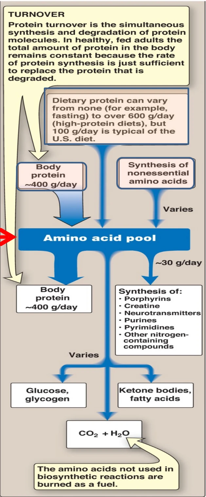
| Stream | Amount each day | What it is |
|---|---|---|
| In: breakdown of body protein | 300 to 400 g | The largest source: three to four times what the diet supplies |
| In: dietary protein | About 100 g | The typical diet. It ranges from none (fasting) to more than 600 g (a high-protein diet). |
| In: nonessential amino acids made by the body | Varies | For example, glutamate is made by adding an amino group to α-ketoglutarate Ch 2 |
| Out: building body protein | 300 to 400 g | The same amount that was broken down |
| Out: building other nitrogen-containing compounds | About 30 g | Porphyrins (the ring of heme), creatine, neurotransmitters, purines, pyrimidines |
| Out: burned as fuel | Varies | Whatever is left over. The carbon skeletons become glucose and glycogen, or ketone bodies and fatty acids, or are oxidized to CO2 and H2O. |
The two largest streams are equal because they are the two halves of one loop. Body proteins are continuously broken down to amino acids and built again from the pool, both at the same time. This is protein turnover. In a healthy, fed adult, building just replaces what is broken down, so the total amount of body protein stays constant while its molecules keep being replaced. Turnover is how the body removes damaged proteins and proteins it no longer needs.
1. Which source adds the most amino acids to the body's amino acid pool each day?
2. Why does the body break down amino acids that it does not need right away?
3. About 350 g of a healthy adult's body protein is broken down every day. Why does the total amount of body protein not fall?
4. About 30 g of amino acids leave the pool each day to make nitrogen-containing compounds other than protein. Which list gives examples?
Nitrogen balance: what comes in against what goes out
Of the three major nutrients, only protein contains nitrogen. So the nitrogen a person eats measures the protein eaten, and the nitrogen excreted measures the amino acids that were broken down. Most of it leaves as urea in the urine, the rest as other waste products.
Nitrogen balance is the nitrogen taken in each day minus the nitrogen lost each day.
Nitrogen balance = N in − N out
N in = grams of nitrogen eaten per day, almost all of it as protein. Protein is about 16% nitrogen by weight, so 100 g of protein contains about 16 g of nitrogen. N out = grams of nitrogen excreted per day.
The balance can come out three ways.
| Balance | Who has it | Why |
|---|---|---|
| Zero: N in equals N out | The healthy adult | No tissue is being added and amino acids cannot be stored, so whatever is eaten beyond the day's needs is broken down and its nitrogen is excreted. The pool is in a steady state. |
| Positive: N in is greater than N out | Growth, pregnancy, tissue repair, recovery after starvation | The body keeps nitrogen only when it builds new tissue: muscle and bone in a growing child, the fetus and placenta in pregnancy, new protein in healing tissue, and the muscle that was lost in starvation. |
| Negative: N out is greater than N in | Fasting, fever, burns, wasting diseases | The body is using up its own protein. In fasting nothing comes in, yet muscle protein is still broken down, because the liver needs the amino acids to make glucose, and their nitrogen leaves as urea. In fever, burns and wasting diseases (such as advanced cancer), the stress of the illness speeds up protein breakdown. |
A healthy man eats 100 g of protein a day. How much nitrogen does he excrete each day? What if he eats 150 g?
N in = 100 × 0.16 = 16 g. A healthy adult is in balance, so N out is also 16 g/day. At 150 g of protein, N in = 24 g. He cannot store the extra amino acids, so he excretes 24 g. The balance is still zero, and only the amount of urea has gone up.
A patient with severe burns takes in 12 g of nitrogen a day and loses 20 g. What is his nitrogen balance?
12 − 20 = −8 g/day. It is negative: he is breaking down his own body protein faster than he rebuilds it.
1. A healthy adult eats 75 g of protein a day. Protein is about 16% nitrogen. About how much nitrogen does she excrete each day?
2. Which condition produces a positive nitrogen balance?
3. Why is a person who is eating again after a period of starvation in positive nitrogen balance?
4. During a fast no protein is eaten. Why does the body go on excreting nitrogen?
5. A patient with a high fever takes in 9 g of nitrogen a day and excretes 15 g a day. What is the nitrogen balance, and what does it mean?
The plan of protein digestion: three organs, two kinds of cut
A dietary protein is far too large to pass through the wall of the intestine. Digestion breaks its peptide bonds until only free amino acids, dipeptides and tripeptides are left. Only pieces this small can be absorbed.
The enzymes come from three organs, which work in order: the stomach, the pancreas and the small intestine. The mouth takes no part, because saliva contains no enzyme that cuts protein.
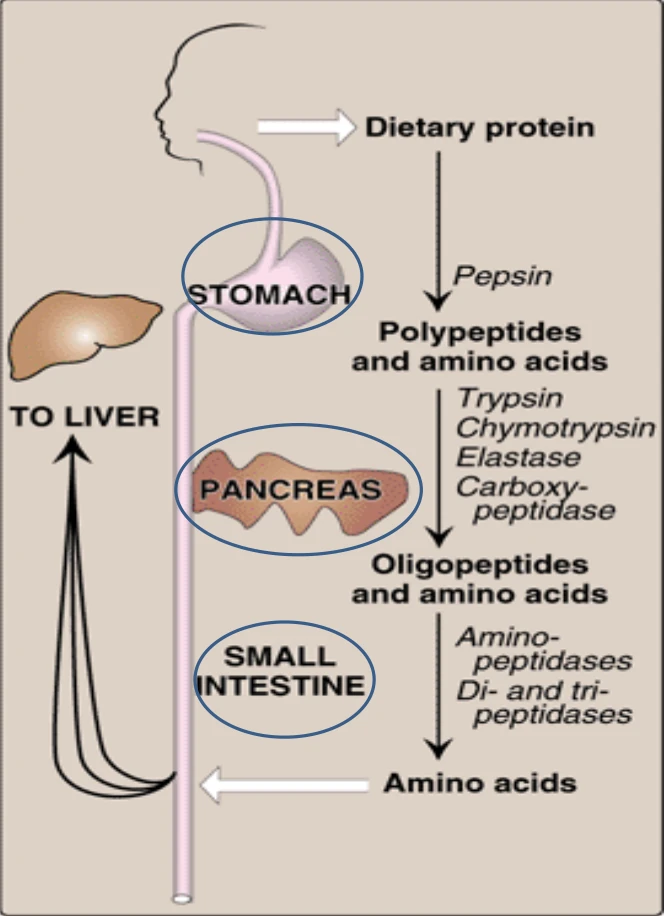
Five terms describe the enzymes.
- Protease
- Cuts a protein into shorter chains (peptides)
- Peptidase
- Cuts peptides down to single amino acids
- Endopeptidase
- Cuts a peptide bond in the interior of the chain, so one chain becomes two
- Exopeptidase
- Removes the single amino acid at one end. A carboxypeptidase works at the end with the free carboxyl group (the C-terminus). An aminopeptidase works at the end with the free amino group (the N-terminus).
- Zymogen (proenzyme)
- An enzyme made in an inactive form. An extra stretch of chain stops it from working until that stretch is cut off. Its name ends in "-ogen" or begins with "pro-".
The two kinds of cut help each other: every cut by an endopeptidase makes two new ends for the exopeptidases to work on. And every protease of the stomach and the pancreas is made as a zymogen, because an active protease would digest the proteins of the very cell that made it.
1. Which organ takes no part in the enzymatic digestion of protein? lecture question
2. Into what must dietary protein be cut before the intestine can absorb it?
3. An enzyme removes one amino acid at a time from the end of a peptide that has the free carboxyl group. What is it?
4. Why are the proteases of the stomach and the pancreas made as inactive zymogens?
The stomach: acid unfolds the protein and pepsin makes the first cuts
Hydrochloric acid (HCl) is secreted by the parietal cells and brings the stomach contents to pH 2 to 3. Acid this dilute cannot break peptide bonds. What it does is denature the proteins: they unfold, so the peptide bonds that were hidden inside are exposed to the enzymes. It also kills many of the bacteria swallowed with food.
Pepsinogen is the zymogen secreted by the chief cells. HCl converts it to pepsin, and the pepsin that has formed then activates more pepsinogen. Pepsin is an endopeptidase that works in strong acid. It cuts mainly next to large hydrophobic ("bulky") amino acids. Its digestion is limited: what leaves the stomach is mostly long polypeptides, with only a few free amino acids. This partly digested mixture, called chyme, then passes into the small intestine.
The stomach of a milk-fed newborn mammal also makes rennin (chymosin), which curdles milk so that it stays in the stomach long enough for pepsin to act on it. Rennin is a different enzyme from renin, the kidney enzyme that helps to control blood pressure.
1. Which stomach cells secrete hydrochloric acid, and which secrete pepsinogen?
2. What does stomach acid do to the proteins in food?
3. What converts pepsinogen to pepsin?
4. Which description fits pepsin?
5. Which stomach enzyme of milk-fed newborn mammals curdles milk?
The pancreatic enzymes: one trigger switches on the whole set
Most protein digestion is done in the small intestine by enzymes from the pancreas. Pancreatic juice carries them as five zymogens, together with bicarbonate, which neutralizes the acid arriving from the stomach.
The zymogens stay inactive all the way down the pancreatic duct. The switch is in the intestine. Enteropeptidase (older name: enterokinase) is made by the cells that line the small intestine and stays fixed on their brush border, the surface that faces the food. It cuts a short piece off trypsinogen, which turns it into trypsin. Trypsin then activates more trypsinogen and all the other zymogens. So enteropeptidase is the single trigger, and trypsin is the common activator. Because the trigger sits on the wall of the intestine, the proteases come to life only after they have left the pancreas.
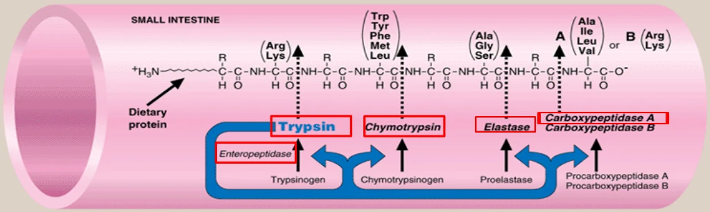
Each enzyme cuts only next to certain amino acids. "After" means on the carboxyl side: the bond that joins that amino acid to the next one, reading from the N-terminus to the C-terminus.
| Zymogen | Active enzyme | Kind of enzyme | Where it cuts |
|---|---|---|---|
| Trypsinogen | Trypsin | Endopeptidase, serine protease | After a basic amino acid: arginine or lysine |
| Chymotrypsinogen | Chymotrypsin | Endopeptidase, serine protease | After a bulky amino acid: tryptophan, tyrosine, phenylalanine, methionine or leucine |
| Proelastase | Elastase | Endopeptidase, serine protease | After a small amino acid: alanine, glycine or serine |
| Procarboxypeptidase A | Carboxypeptidase A | Exopeptidase, contains zinc | Removes the C-terminal amino acid when it is alanine, isoleucine, leucine or valine |
| Procarboxypeptidase B | Carboxypeptidase B | Exopeptidase, contains zinc | Removes the C-terminal amino acid when it is basic: arginine or lysine |
Trypsin, chymotrypsin and elastase are called serine proteases because a serine in the active site of each is what attacks the peptide bond. The carboxypeptidases use a zinc ion instead, and they are not serine proteases.
Several enzymes are needed because each one cuts at only a few of the twenty amino acids. Together the three endopeptidases reduce the protein to short pieces called oligopeptides, and the carboxypeptidases shorten these from the C-terminus, one amino acid at a time. What is left is a mixture of oligopeptides and free amino acids.
1. Which enzyme of the intestine triggers the activation of the other protein-digesting enzymes there? lecture question
2. After enteropeptidase has made the first trypsin, what activates the rest of the pancreatic zymogens?
3. Trypsin cuts the peptide bond after which amino acids?
4. A peptide has lysine as its last amino acid, at the C-terminus. Which enzyme removes that lysine?
5. Which pancreatic enzyme is a zinc-containing exopeptidase and not a serine protease?
The brush border finishes the digestion, and the products are absorbed
The last cuts are made by aminopeptidases, exopeptidases fixed on the brush border of the intestinal cells. They remove the N-terminal amino acid of an oligopeptide again and again, while the pancreatic carboxypeptidases work from the other end. This leaves free amino acids, dipeptides and tripeptides, which enter the intestinal cell by two routes.
- Free amino acids enter on carriers together with Na+. The cell keeps its own Na+ low, so Na+ flows in and pulls the amino acid with it. There are several carriers, each for a group of similar amino acids: one for the neutral ones, another for the basic ones, and so on.
- Dipeptides and tripeptides enter on a separate carrier together with H+. Inside the cell, dipeptidases and tripeptidases split them into free amino acids.
So only free amino acids leave the cell on the blood side. The portal vein carries them to the liver, which uses some and releases the rest into the general circulation.
1. Where are aminopeptidases found, and what do they remove?
2. How does a free amino acid enter an intestinal cell from the gut?
3. What happens to a tripeptide that reaches an intestinal cell?
4. After a meal containing protein, in what form does the portal vein carry its products to the liver?
Cystinuria and Hartnup disease: one carrier is missing
The same amino acid carriers work in a second place, the proximal tubule of the kidney. There they reabsorb the amino acids that were filtered (move them out of the tubule fluid, back into the blood), which is why normal urine contains almost none. If one carrier is faulty from birth, the amino acids it should move stay in the tubule fluid and are lost in the urine in large amounts. This is aminoaciduria. Two inherited diseases work this way, and they differ in which carrier is faulty.
| Cystinuria | Hartnup disease | |
|---|---|---|
| The faulty carrier should move | Cystine and the dibasic amino acids (two basic groups each) ornithine, arginine and lysine: together "COAL" | The neutral amino acids (side chain with no charge), above all tryptophan |
| Where it fails | Proximal tubule: they are not reabsorbed | Intestine (poor absorption from food) and proximal tubule (not reabsorbed) |
| How common | 1 in 7,000. The most common inherited disease of amino acid transport. Autosomal recessive. | 1 in 24,000, so rare. Autosomal recessive. |
| What the patient has | Aminoaciduria and cystine stones | Aminoaciduria and pellagra-like symptoms |
| Treatment | A large fluid intake and alkaline urine | Nicotinic acid (niacin) |
Cystinuria: why the stones form
Cystine is two molecules of cysteine joined by a disulfide bond. All four amino acids are lost in the urine, but the three dibasic ones dissolve easily and simply wash out. Cystine dissolves very poorly. As the urine becomes concentrated it comes out of solution, first as flat, six-sided (hexagonal) crystals and then as stones in the kidney, the ureter or the bladder.
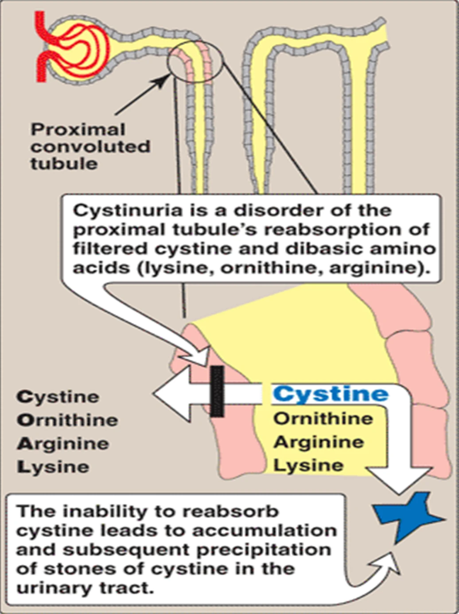
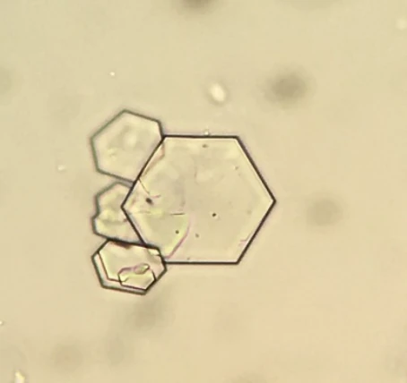
The stones are very painful and can damage the kidney or the bladder. Because they block the flow of urine, they also lead to urinary tract infections and kidney infections. Treatment aims to keep the cystine dissolved: drinking a large amount of water dilutes it, and making the urine alkaline helps because cystine dissolves better at a high pH.
Hartnup disease: why losing tryptophan looks like a vitamin deficiency
The loss that matters is tryptophan, the starting material for serotonin, melatonin and niacin Ch 5. Niacin (vitamin B3, also called nicotinic acid) is the vitamin from which NAD+ is built, and the body normally makes part of it from tryptophan. With too little tryptophan, niacin runs short and the signs of niacin deficiency appear. That deficiency is pellagra (dermatitis, diarrhea and dementia). Here the symptoms are called pellagra-like, because the cause is a faulty carrier and not a diet that lacks niacin.
The disease appears in infancy and varies in severity from child to child. Its effects are mainly in the skin and the brain: a rash on skin exposed to sunlight (photosensitivity), attacks of unsteady movement that come and go (intermittent ataxia), jerky eye movements (nystagmus), tremor, and poor growth (failure to thrive). Treatment is nicotinic acid. It supplies niacin directly, so the body no longer depends on tryptophan to make it, and patients respond quickly.
1. An inherited defect in a transport protein for certain basic amino acids occurs in about 1 in 7,000 people. Which disease is it? discussion question
2. Which disorder can produce pellagra-like symptoms? lecture question
3. Which four amino acids are lost in the urine in cystinuria?
4. In cystinuria four amino acids are lost in the urine. Why does only cystine form stones?
5. A child has a rash on sun-exposed skin, attacks of unsteady movement and large amounts of neutral amino acids in the urine. What is the treatment?
When digestion or absorption fails: too little pancreatic juice, and celiac disease
Dietary protein can fail to reach the blood for two different reasons. Either the enzymes never arrive, so the protein is not digested, or the lining of the intestine is damaged, so the digested products are not absorbed.
Too little pancreatic juice: cystic fibrosis and pancreatitis
In cystic fibrosis the faulty gene is the one for the cystic fibrosis transmembrane conductance regulator (CFTR), a chloride (Cl−) channel. In the cells that line the pancreatic ducts, Cl− normally leaves through this channel and water follows, which keeps the secretion thin and flowing. Without a working channel the secretion is thick, and plugs of mucus block the ducts, so less pancreatic juice is released into the intestine. Pancreatitis (inflammation of the pancreas) also lowers the release of pancreatic juice.
Without pancreatic enzymes, fat and protein pass through undigested and appear in the feces. Fat in the feces is called steatorrhea. Fat is affected because the enzymes that digest it also come from the pancreas. Steatorrhea also appears when the bile duct is blocked, because the bile acids that fat digestion needs cannot reach the intestine. The treatment is pancreatic enzyme replacement: enzymes swallowed with meals do the work of the missing juice.
Celiac disease: the lining is damaged
Celiac disease is also called celiac sprue or gluten-sensitive enteropathy. Gluten is a protein of grains (wheat, barley and rye). In a person with celiac disease, eating it sets off an immune reaction, and the antibodies attack the lining of the person's own small intestine, which makes this an autoimmune disorder. The damaged lining absorbs nutrients of every kind poorly (malabsorption), so the patient becomes malnourished.
The tendency is inherited. It is linked to genes of the major histocompatibility complex (MHC). The disease is common, about 1 person in 133, but only about 3% of those who have it are diagnosed. The treatment is to remove gluten from the diet. With nothing left to set off the attack, the lining heals, and in most patients bowel function returns completely to normal.
1. The protein that is faulty in cystic fibrosis, the cystic fibrosis transmembrane conductance regulator (CFTR), is a channel for which ion?
2. Why is protein poorly digested in cystic fibrosis?
3. Fat appears in the feces (steatorrhea) when pancreatic juice does not reach the intestine. A lack of which other secretion also causes it?
4. How does eating gluten lead to poor absorption in celiac disease?
5. What usually happens when a person with celiac disease removes gluten from the diet?
Moving nitrogen safely: glutamate, glutamine and alanine
A cell that breaks down an amino acid is left with a nitrogen atom it cannot use, and that nitrogen is dangerous: as free ammonia it poisons the brain. So the tissues do not let it loose in the blood. They pass it from molecule to molecule until it sits on glutamate, send it through the blood packed inside glutamine or alanine, and set it free only in the organs that can get rid of it at once: the liver, which makes it into urea, and the kidney, which puts it into the urine.
An amino acid is an amino group on a carbon skeleton
Every amino acid is built on one carbon atom, the α-carbon. Four things hang on it: an amino group (–NH2, the part that holds the nitrogen), an acid group, a hydrogen, and a side chain (written R) that is different in each amino acid. Everything except the amino group is called the carbon skeleton.
The body has no store for spare amino acids, the way it has glycogen for glucose and fat for fatty acids. An amino acid that is not needed for building protein is broken down, and the breakdown always starts the same way: the amino group is taken off. It has to be, because a carbon skeleton cannot be burned for energy while the amino group is still attached.
Taking off the amino group leaves a C=O group on the α-carbon in its place. A carbon skeleton in this form is an α-keto acid. So every amino acid has a keto acid partner with the same number of carbons, and the two differ only by the amino group. Three pairs are used again and again.
| Amino acid | Its α-keto acid | Carbons in each |
|---|---|---|
| Alanine | Pyruvate | 3 |
| Aspartate | Oxaloacetate | 4 |
| Glutamate | α-Ketoglutarate | 5 |
All three keto acids are everyday molecules of energy metabolism. Pyruvate is the end product of glycolysis (the breakdown of glucose). Oxaloacetate and α-ketoglutarate are members of the citric acid cycle, also called the tricarboxylic acid (TCA) cycle, the pathway in the mitochondria that burns fuel. So once its amino group is gone, an amino acid is ordinary fuel, and the two parts go separate ways.
The carbon skeleton is burned for energy or made into glucose or ketone bodies, depending on which amino acid it came from Ch 4.
The amino group is the problem. Released as it is, it would be free ammonia (NH3), and ammonia is toxic to the brain even at low levels Ch 3. The body deals with it in four steps:
- Transamination, in most tissues. The amino group is passed to another molecule and is never set free.
- Safe transport. Nitrogen travels in the blood as glutamine (from most tissues) or alanine (from muscle), not as ammonia.
- Deamination, in the liver, kidney and intestine. Here the amino group is finally released as free ammonia.
- The urea cycle, in the liver only. Ammonia is made into urea, which is harmless and leaves in the urine Ch 3.
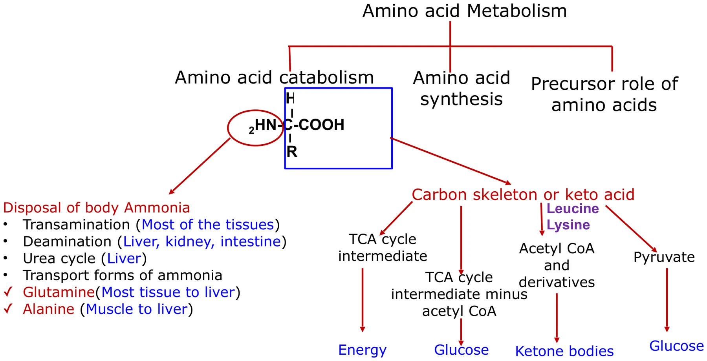
A word about names. In body water almost all ammonia (NH3) has picked up an H+ and is the ammonium ion (NH4+). The two forms keep changing into each other, so the word "ammonia" is used for both.
1. An amino acid is going to be burned for energy. What has to happen to it first?
2. How does an α-keto acid differ from the amino acid it came from?
3. Which α-keto acid is the partner of aspartate?
4. Which step in dealing with the nitrogen of amino acids takes place only in the liver?
5. In what form does most nitrogen travel in the blood from the tissues to the liver?
Transamination: the amino group is handed on, never set free
The first step in breaking down almost every amino acid is transamination. The amino group is moved from the amino acid onto an α-keto acid. The amino acid that gave it up is now a keto acid, and the keto acid that received it is now an amino acid:
amino acid 1 + keto acid 2 ⇌ keto acid 1 + amino acid 2
Nothing is made and nothing is lost. One amino group has changed places, each carbon skeleton keeps its size, and no free ammonia appears at any point. That is why transamination is safe to do anywhere, and it does go on in most tissues, in both the cytosol and the mitochondria. The enzymes are called aminotransferases (an older name is transaminases).
There are many aminotransferases. Each works on one amino acid, or a few, and is named after the amino acid that gives the amino group. But nearly all of them hand it to the same acceptor: α-ketoglutarate, which becomes glutamate.
The effect is a funnel. Many different amino acids go in, and their nitrogen comes out in a single form: the amino group of glutamate. Glutamate is the collector of amino groups. From this point the body does not need a separate disposal route for each amino acid. It only needs to know what to do with glutamate.
Transamination runs easily in either direction, because neither side of the reaction is favoured. Which way it goes depends on what is plentiful. After a meal rich in protein there are spare amino acids, so amino groups flow onto α-ketoglutarate and the amino acids are broken down. When the cell is short of an amino acid, the flow reverses: glutamate gives its amino group to the matching keto acid, and the cell has made that amino acid for itself. This is how the nonessential amino acids get their nitrogen Ch 4. Glutamate itself is made this way, by adding an amino group to α-ketoglutarate.
1. During transamination, where does the amino group of the amino acid go?
2. Most aminotransferases give the amino group to the same acceptor. Which acceptor, and what does it become?
3. Why is it useful that the amino groups of many amino acids are all collected on glutamate?
4. A cell has plenty of pyruvate and glutamate but is short of alanine. What does it do?
ALT and AST: the two main aminotransferases
Two aminotransferases stand out. Their keto acids, pyruvate and oxaloacetate, sit at the centre of metabolism, and both enzymes are measured in the blood.
Alanine aminotransferase (ALT) moves the amino group of alanine onto α-ketoglutarate. Alanine is left as pyruvate, and α-ketoglutarate becomes glutamate:
alanine + α-ketoglutarate ⇌ pyruvate + glutamate
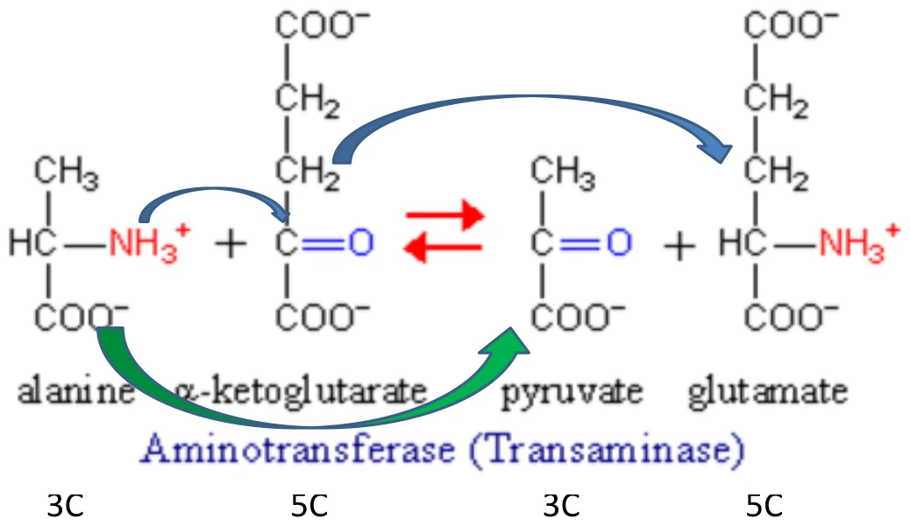
Aspartate aminotransferase (AST) does the same with aspartate. Aspartate is left as oxaloacetate, and α-ketoglutarate becomes glutamate:
aspartate + α-ketoglutarate ⇌ oxaloacetate + glutamate
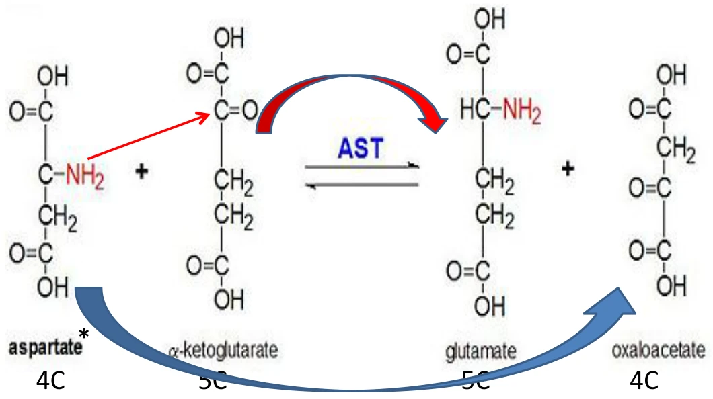
Both reactions run in either direction, and the body uses each direction for a different job.
ALT runs from left to right wherever alanine is being broken down, above all in the liver. It runs from right to left in muscle, which loads amino groups onto pyruvate to make alanine for export glucose–alanine cycle.
AST is the one exception to the funnel. During amino acid breakdown it mostly runs from right to left, away from glutamate: glutamate gives its amino group to oxaloacetate, and aspartate is formed. The reason lies in the urea cycle. Urea has two nitrogen atoms, and the cycle accepts them in two different forms, one as free ammonia and one as aspartate Ch 3. AST is the enzyme that makes that aspartate.
Older lab reports use older names. ALT was serum glutamate–pyruvate transaminase (SGPT), and AST was serum glutamate–oxaloacetate transaminase (SGOT). Each old name simply lists glutamate and the enzyme's own keto acid.
1. ALT (alanine aminotransferase) moves the amino group of alanine onto α-ketoglutarate. What are the two products?
2. α-Ketoglutarate has 5 carbons. ALT (alanine aminotransferase) turns it into glutamate. How many carbons does that glutamate have?
3. During amino acid breakdown, in which direction does AST (aspartate aminotransferase) mostly run?
4. An old laboratory report lists SGPT (serum glutamate–pyruvate transaminase). Which enzyme is this?
PLP: the vitamin B6 helper that carries the amino group
An amino group does not jump straight from one molecule to the other. Every aminotransferase needs a helper to hold it in between: pyridoxal phosphate (PLP), the active form of vitamin B6 (pyridoxine). PLP stays fixed in the enzyme, and the reaction happens in two halves.
- The first amino acid gives its amino group to PLP and leaves as a keto acid. PLP, now holding the nitrogen, has become pyridoxamine phosphate.
- The second keto acid comes in and takes the amino group from pyridoxamine phosphate. It leaves as a new amino acid, and the helper is PLP again, ready for the next round.
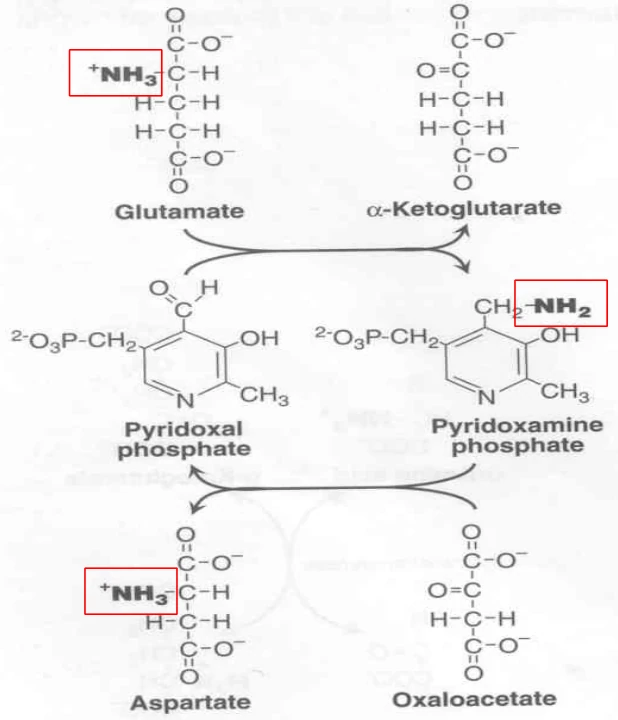
PLP works like a hand that takes a parcel from one person and passes it to the next without ever putting it down. The nitrogen is always attached to something: first to the amino acid, then to PLP, then to the new amino acid. This is the chemical reason why transamination releases no free ammonia.
Because every aminotransferase works this way, all transamination depends on vitamin B6, in both directions. ALT needs it to turn alanine into pyruvate, and it needs it just as much to turn pyruvate into alanine.
1. In cells, pyruvate reacts with glutamate to form alanine. Which vitamin is also essential for this reaction? discussion question
2. In the first half of a transamination, the amino acid gives its amino group to PLP (pyridoxal phosphate). What does PLP become?
3. Transamination uses PLP (pyridoxal phosphate). Why does it release no free ammonia?
4. A patient is severely short of vitamin B6. Which of these reactions is slowed directly?
ALT and AST in the blood: a test for injured cells
ALT and AST do their work inside cells. Healthy cells let very little out, so the amount in the serum (the fluid part of the blood) is normally small: not more than about 40 to 50 international units (IU) per litre. A unit measures enzyme activity, and the exact upper limit differs a little from one laboratory to the next.
When cells are injured their membranes leak, and the enzymes spill into the blood. So a high serum ALT or AST means that cells rich in these enzymes have been damaged. The liver is full of both, which is why the two are measured together as part of the liver panel, the set of blood tests used to check the liver.
| Enzyme | Where it is found | What a high serum level tells you |
|---|---|---|
| ALT | Many tissues, with the highest concentration in the liver | Liver cell injury. ALT is the more specific test for the liver. |
| AST | Liver, and also heart muscle, skeletal muscle and many other tissues | Liver cell injury, or injury to heart or skeletal muscle. AST is less specific for the liver. |
Both rise in the diseases that injure liver cells:
- acute viral hepatitis
- ischemic hepatitis ("shock liver"), in which the liver is starved of blood
- acute liver injury from a drug or a toxin, for example an overdose of acetaminophen, or statins
- cirrhosis
What happens over time after a liver poison
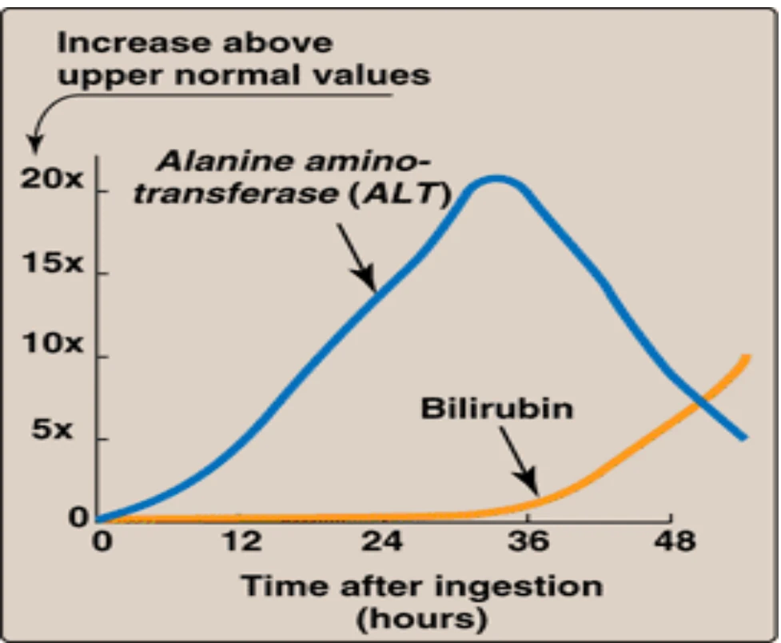
ALT rises first because it leaks out as soon as liver cells are injured. Bilirubin is different. Bilirubin is the yellow waste product made when the heme of old red blood cells is broken down. The liver normally conjugates it (attaches a sugar acid, which makes it soluble in water) and excretes it into the bile. The liver has spare capacity for this job, so at first the surviving cells keep up and bilirubin stays normal. Only when so many liver cells are lost that the rest can no longer conjugate and excrete it does bilirubin build up in the blood. The skin and the whites of the eyes then turn yellow, which is jaundice (also called icterus).
So a rising ALT is the early sign that liver cells are being injured, and a rising bilirubin is the later sign that the liver is losing its ability to work.
1. A patient is thought to have hepatitis caused by a drug. A raised serum level of which enzyme supports this? lecture question
2. Why does serum ALT (alanine aminotransferase) rise when liver cells are injured?
3. A patient has a high serum AST (aspartate aminotransferase) and a normal ALT (alanine aminotransferase). Why does this not point clearly to the liver?
4. What is the usual upper limit of normal for serum ALT and AST (alanine and aspartate aminotransferase), in international units per litre (IU/L)?
5. After a liver poison is swallowed, how do serum ALT (alanine aminotransferase) and bilirubin change over the first two days?
6. Why does serum bilirubin rise in severe liver cell damage?
Glutamate dehydrogenase: where the nitrogen is finally set free
Transamination only moves nitrogen around. To get rid of it, some enzyme has to take an amino group off and release it as ammonia. That step is deamination, and the main enzyme that does it is glutamate dehydrogenase. It acts on glutamate, the very amino acid on which the amino groups were collected, and glutamate is the only amino acid that is deaminated this fast.
glutamate + NAD+ + H2O → α-ketoglutarate + NADH + NH3
The reaction is called oxidative deamination because two things happen together. Glutamate is oxidised: it gives up hydrogen to NAD+, which becomes NADH. And its amino group leaves as free ammonia. What remains is α-ketoglutarate.
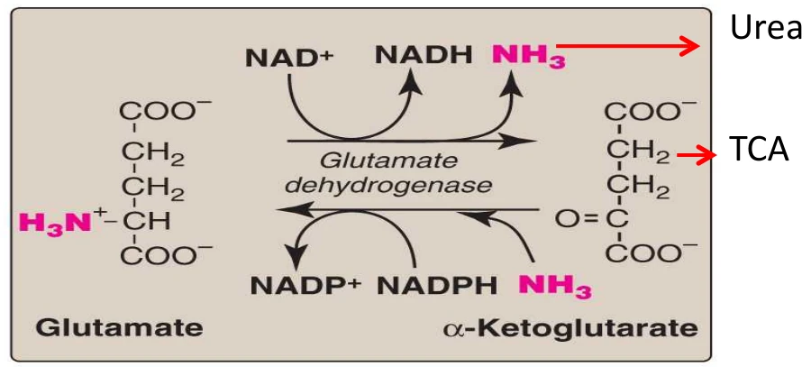
Now the two steps fit together. An aminotransferase moves an amino group from an amino acid onto α-ketoglutarate, which makes glutamate. Glutamate dehydrogenase takes the amino group off glutamate as NH3 and gives the α-ketoglutarate back, ready to collect the next amino group. α-Ketoglutarate is not used up. It goes round and round like a shuttle. In this way the amino group of almost any amino acid can end up as ammonia, although only one enzyme ever has to release it.
Where it works, which way it runs, and what controls it
Where. In the mitochondria, mainly of the liver and the kidney, and also of the intestine. These are the organs that can deal with the ammonia. In the liver the place is especially well chosen: the ammonia is released inside the mitochondrion, which is exactly where the urea cycle begins Ch 3.
Which way. The reaction is freely reversible, and its direction depends on the concentrations of the molecules on the two sides. The enzyme is also unusual in using two different coenzymes: NAD+ when it releases ammonia and NADPH when it takes ammonia up.
| Direction | Coenzyme | Where and when | What it achieves |
|---|---|---|---|
| Glutamate to α-ketoglutarate + NH3 | NAD+ becomes NADH | Liver. After a protein meal, transamination fills the liver with glutamate, which pushes the reaction this way. | NH3 for the urea cycle, and α-ketoglutarate for the TCA cycle, where its carbon is used for energy |
| α-Ketoglutarate + NH3 to glutamate | NADPH becomes NADP+ | Brain, and wherever ammonia is high | Free NH3 is mopped up into glutamate |
The brain does not stop at glutamate. It adds a second NH3 to make glutamine next section, and the nitrogen leaves in the blood for the liver, where it is released for the urea cycle. The cost is that α-ketoglutarate is drawn out of the brain's TCA cycle, which is one way high ammonia harms the brain Ch 3.
Control. ADP switches glutamate dehydrogenase on, and GTP switches it off. ADP is high when a cell is short of energy. More glutamate is then deaminated, and the α-ketoglutarate set free is burned in the TCA cycle to make ATP. When energy is plentiful, GTP is high and the enzyme slows down, so amino acids are spared.
1. Which enzyme carries out oxidative deamination in the liver? discussion question
2. What makes the glutamate dehydrogenase reaction an oxidative deamination?
3. The amino group of an amino acid ends up as free ammonia in the liver. Which two enzymes act on it, in order?
4. What is unusual about the coenzymes of glutamate dehydrogenase?
5. A person has just eaten a meal rich in protein. Which way does glutamate dehydrogenase run in the liver, and why?
6. A liver cell is short of energy, so its ADP (adenosine diphosphate) is high. What happens to glutamate dehydrogenase?
Glutamine: ammonia made safe for the journey
Muscle, brain and most other tissues also produce some free ammonia as they break down amino acids. They cannot make urea, and they must not let the ammonia into the blood. So they lock it into a harmless carrier, glutamine.
Glutamine synthetase attaches NH3 to the acid group on the side chain of glutamate. The reaction costs one ATP:
glutamate + NH3 + ATP → glutamine + ADP + phosphate
The new nitrogen now sits in an amide group (–CO–NH2). An amide group carries no charge and is stable, so glutamine is not toxic. The ATP is the price paid for safety. Glutamine synthetase is present in most tissues. Muscle makes the most glutamine, and in the brain this enzyme is the main way of removing ammonia.
Glutamine then travels in the blood, and each molecule carries two nitrogens: the amino group that glutamate already had (collected by transamination) and the amide nitrogen (picked up as free ammonia). Because so many tissues export nitrogen this way, glutamine is the most abundant amino acid in the blood, at about 500 µM (micromolar). It makes up more than 20% of the free amino acids in blood and 40% of those in muscle.
Where the nitrogen is to be unloaded, glutaminase cuts the amide nitrogen off again. It needs only water, and no ATP is given back:
glutamine + H2O → glutamate + NH3
Glutaminase is found in the liver, kidney and intestine. The glutamate that is left still holds its amino group. Glutamate dehydrogenase, which is in the same three organs, releases that one as a second NH3 and leaves α-ketoglutarate.
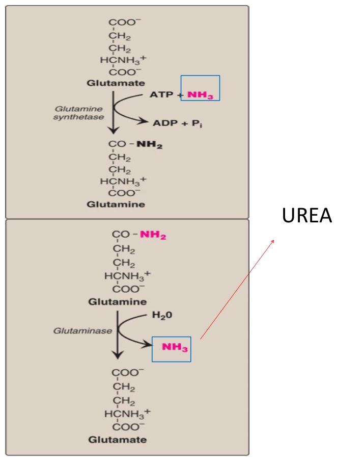
Many cancer cells consume glutamine greedily, for energy and as a source of carbon and nitrogen for building new molecules. This breakdown of glutamine is called glutaminolysis, and it uses the same two enzymes. Glutaminase gives glutamate and NH3. Glutamate dehydrogenase gives α-ketoglutarate and a second NH3. The α-ketoglutarate enters the TCA cycle, where the α-ketoglutarate dehydrogenase complex converts it to succinyl CoA, and energy is made.
The NH3 is not always wasted. Some cancer cells, breast cancer cells for example, run glutamate dehydrogenase in reverse and fix the ammonia back onto α-ketoglutarate. The glutamate formed then supplies nitrogen for making other amino acids.
1. Which enzyme adds free NH3 to glutamate so that the nitrogen can travel safely in the blood?
2. What does glutamine synthetase need that glutaminase does not?
3. Why is glutamine the most abundant amino acid in the blood?
4. Glutamine reaches the liver. Which two enzymes release its two nitrogens as NH3, in order?
5. In which organs is glutaminase mainly found?
6. Some breast cancer cells reuse the NH3 that they release from glutamine. How?
The glucose–alanine cycle: how muscle exports nitrogen and gets glucose back
Muscle has a second carrier, alanine, and it solves two problems at once. Muscle breaks down amino acids, so it has amino groups to get rid of. Muscle also makes pyruvate all the time, as the end product of glycolysis. Pyruvate is the keto acid of alanine, so it can carry an amino group away.
- In muscle, the amino groups of the amino acids being broken down are collected on glutamate.
- ALT moves the amino group from glutamate onto pyruvate. Pyruvate becomes alanine, and glutamate goes back to being α-ketoglutarate.
- Alanine leaves the muscle and travels in the blood to the liver.
- In the liver, ALT runs the other way. Alanine gives its amino group to α-ketoglutarate, which makes pyruvate and glutamate.
- The nitrogen: glutamate dehydrogenase releases it from glutamate as ammonia, and the urea cycle makes it into urea.
- The carbon: the liver builds the pyruvate into glucose (gluconeogenesis) and releases the glucose into the blood. Muscle takes it up and uses it again.
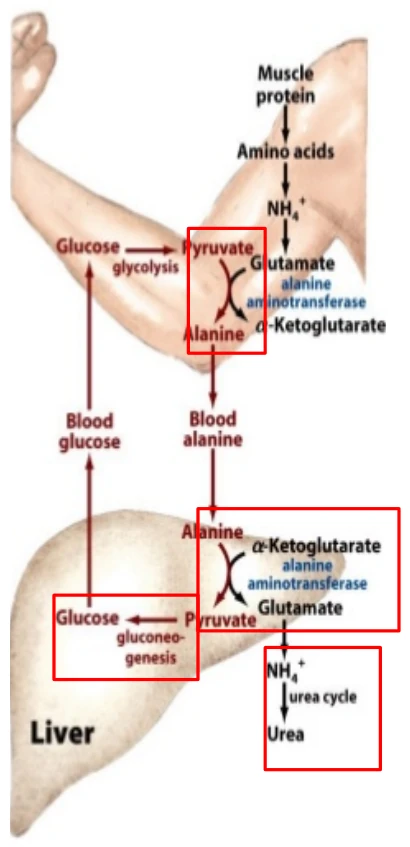
The cycle does two things for the muscle. Its nitrogen leaves in a form that is not toxic, and the carbon is not wasted, because it comes back as glucose. Seen from the liver, alanine from muscle is a starting material for making glucose, which matters most during fasting.
| Glutamine | Alanine | |
|---|---|---|
| Made in | Most tissues | Mainly skeletal muscle |
| Made by | Glutamine synthetase: free NH3 is added to glutamate, using ATP | ALT: an amino group is moved from glutamate onto pyruvate |
| Nitrogens carried | 2 | 1 |
| Goes to | Liver, kidney, intestine | Liver |
| Carbon left after unloading | α-Ketoglutarate | Pyruvate, which the liver makes into glucose |
1. In the glucose–alanine cycle, ALT (alanine aminotransferase) in muscle moves amino groups onto which molecule to make alanine?
2. In the glucose–alanine cycle, what does the liver do with the carbon skeleton of alanine?
3. Where does the nitrogen carried by alanine from muscle finally end up?
4. How many nitrogen atoms does one alanine carry to the liver, compared with one glutamine?
5. Why does muscle not simply release its amino groups into the blood as free ammonia?
Where the carriers unload: liver, intestine and kidney
Glutamine and alanine are unloaded in three organs, and each organ does something different with the nitrogen.
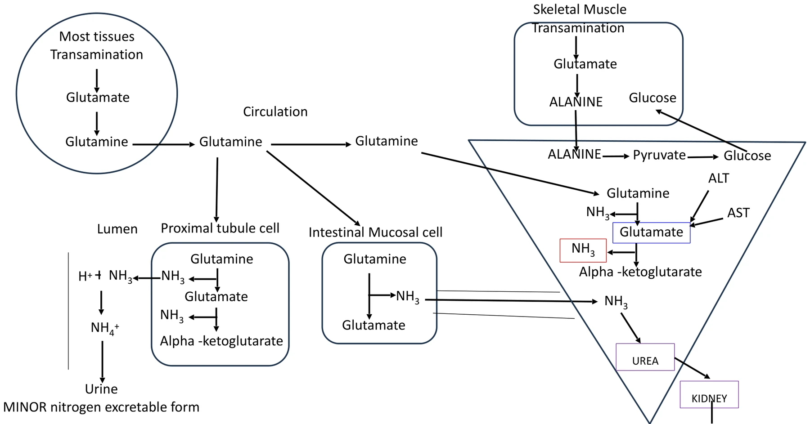
Liver. Everything ends up here: alanine from muscle, glutamine from most tissues, and the ammonia made in the intestine. The liver releases the nitrogen as NH3 and, because it alone has the urea cycle, turns it into urea. Urea travels in the blood to the kidney and is excreted. Urea is the major form in which nitrogen leaves the body in the urine.
Intestine. The cells that line the intestine (mucosal cells) use glutamine as a fuel. Their glutaminase releases NH3, and this NH3 enters the portal vein, the vein that carries blood from the gut directly to the liver. So it reaches the liver before it can reach the rest of the body, and the liver makes it into urea.
Kidney. The proximal tubule cell releases both nitrogens of glutamine as NH3 and sends them into the urine as NH4+. This is the minor form in which nitrogen is excreted, but it does a job that urea cannot do: it carries acid out of the body.
1. In which form does most of the body's waste nitrogen leave in the urine?
2. Cells lining the intestine release NH3 from glutamine. Where does this NH3 go?
3. Glutamine leaves a muscle. In which organ can its nitrogen be excreted directly, without first being made into urea?
The kidney: glutamine's nitrogen leaves as NH4+ and takes acid with it
The cells of the proximal tubule, the first part of the kidney tubule, take up glutamine from the blood and release both of its nitrogens as NH3, with glutaminase and then glutamate dehydrogenase.
NH3 is small and has no charge, so it passes through the cell membrane into the fluid in the tubule (the lumen). There it meets H+ that the cell has secreted, and the two join:
NH3 + H+ → NH4+
NH4+ has a charge, so it cannot go back through the membrane. It is held in the tubule fluid and leaves in the urine.
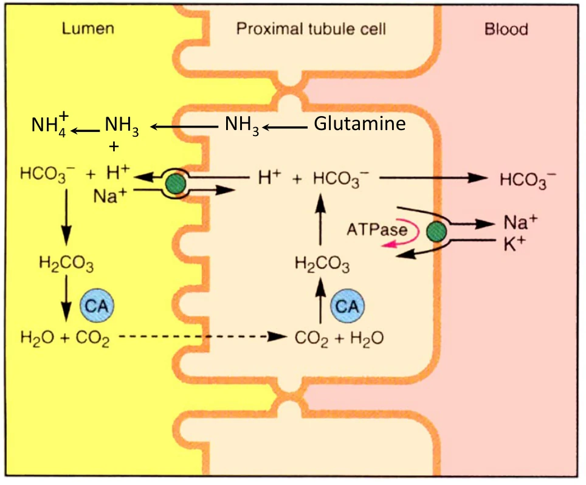
So every NH4+ in the urine carries one H+ out of the body. Excreting NH4+ is one of the main ways the kidney gets rid of acid. When the body has too much acid (acidosis), the kidney breaks down more glutamine, makes more NH3 and excretes more H+ as NH4+.
The H+ comes from carbonic anhydrase (CA). Inside the tubule cell this enzyme makes carbonic acid from CO2 and water, and the carbonic acid splits into H+ and bicarbonate (HCO3−). The H+ is secreted into the lumen, and the HCO3− passes into the blood. What this achieves depends on what the H+ meets in the lumen.
- If it meets a bicarbonate that was filtered, the two form CO2 and water, which go back into the cell. The filtered bicarbonate has in effect been reabsorbed (moved out of the tubule fluid into the blood).
- If it meets NH3, it leaves in the urine as NH4+. The bicarbonate that the cell sent to the blood is then new bicarbonate, a gain of base for the body.
So carbonic anhydrase is needed both for reabsorbing filtered bicarbonate and for making new bicarbonate.
1. In the kidney tubule, why does NH4+ stay in the urine once it has formed?
2. A patient has had a metabolic acidosis for several days. How does the proximal tubule change its use of glutamine?
3. Inside the proximal tubule cell, what does carbonic anhydrase make from CO2 and water?
4. A secreted H+ leaves in the urine as NH4+ instead of meeting a filtered bicarbonate. What has the body gained?
Where the free ammonia in the blood comes from
In spite of all this care, a little free ammonia does reach the blood. Half of it comes from the intestine and most of the rest from the kidney.
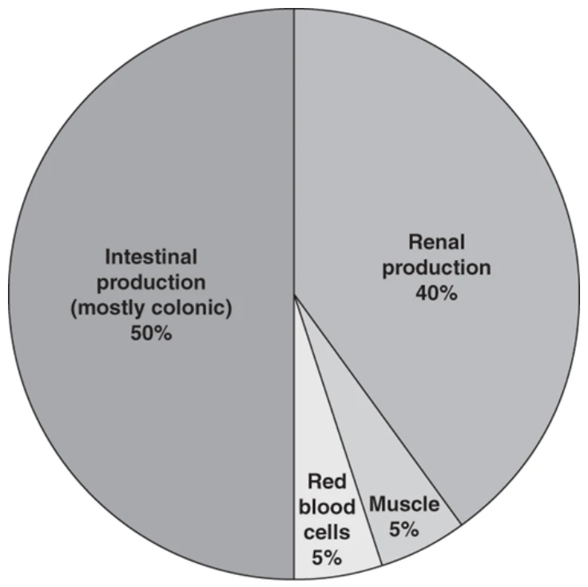
The intestine is the largest source because of its bacteria. Part of the urea made by the liver passes from the blood into the gut. Bacteria in the lumen of the intestine, mostly in the colon, have an enzyme that human cells lack, urease, which splits urea into carbon dioxide and two NH3. In the stomach the bacterium Helicobacter pylori does the same. The glutaminase of the intestinal cells adds more. All of this ammonia is absorbed into the portal vein and goes to the liver, which makes it into urea again Ch 3.
The kidney makes NH3 from glutamine. Most of it goes into the urine as NH4+, but a part passes into the blood that leaves the kidney.
At the level of enzymes, only a handful of reactions release free ammonia.
| The nitrogen comes from | Enzyme | Reaction |
|---|---|---|
| Glutamate (the amino groups collected from amino acids) | Glutamate dehydrogenase | Glutamate becomes α-ketoglutarate + NH3 |
| Glutamine | Glutaminase | Glutamine becomes glutamate + NH3 |
| Urea | Urease of bacteria in the intestine and stomach | Urea becomes CO2 + 2 NH3 |
| Amines, such as the catecholamines dopamine, norepinephrine and epinephrine | Monoamine oxidase (MAO) | The amine becomes an aldehyde + NH3 |
| Purines and pyrimidines, as nucleotides are broken down | Adenosine deaminase, for example Ch 10 | Adenosine becomes inosine + NH3 |
Drugs that block monoamine oxidase, the MAO inhibitors, stop the breakdown of these amines, so more of the neurotransmitters stay available. They are used as antidepressants Ch 5.
The aminotransferases are not on this list. ALT, AST and the others only move an amino group from one molecule to another, so they release no free ammonia. And three enzymes do the opposite of releasing it: they take free NH3 and build it into a molecule. They are glutamine synthetase, glutamate dehydrogenase running in reverse, and carbamoyl phosphate synthetase I (CPS I), the first enzyme of the urea cycle Ch 3.
1. Many reactions release free ammonia when nitrogen compounds are broken down. Which of these enzymes does not? lecture question
2. Which organ adds the most ammonia to the blood?
3. How do bacteria in the gut produce ammonia from a waste product of the liver?
4. Which enzyme releases NH3 when catecholamines such as norepinephrine are broken down?
5. Which enzyme releases NH3 during the breakdown of purines?
6. Three enzymes build free ammonia into a molecule. Two are glutamine synthetase and glutamate dehydrogenase in reverse. Which is the third?
The urea cycle and high ammonia
Every amino acid that is broken down leaves an amino group behind, and a free amino group is ammonia (NH3), which poisons the brain. The liver makes it safe by building two nitrogen atoms into urea, a harmless molecule that the kidneys excrete. If the liver cannot do this, ammonia builds up in the blood.
Why ammonia must be removed: it poisons the brain
Ammonia is made wherever amino acids and other nitrogen compounds are broken down Ch 2. In body fluids nearly all of it is the ammonium ion, NH4+. The small uncharged share, NH3, passes straight through cell membranes, so it enters the brain easily. The blood level is therefore kept very low, normally below about 35 µM (micromoles per litre).
A brain cell cannot make urea. It can only attach ammonia to another molecule Ch 2: glutamate dehydrogenase adds NH3 to α-ketoglutarate to make glutamate, and glutamine synthetase adds a second NH3 to make glutamine. When ammonia is high, these two protective reactions do the damage.
The brain runs short of energy. α-Ketoglutarate is an intermediate of the citric acid cycle (the tricarboxylic acid or TCA cycle), which supplies most of a cell's ATP. Every α-ketoglutarate turned into glutamate is lost from the cycle. Less oxaloacetate is then formed further round it, the cycle slows, and ATP falls.
Astrocytes swell. Astrocytes, the support cells around neurons, are the cells that turn the brain's ammonia into glutamine. When NH3 is high they fill with it. The glutamine is carried into their mitochondria, where mitochondrial glutaminase splits it and sets NH3 free again. There the NH3 triggers reactive oxygen species (ROS), damaging forms of oxygen. The mitochondria are injured, the astrocyte fails and takes up water, and the brain swells: brain edema.
1. How does high ammonia lower the brain's supply of ATP?
2. In hyperammonemia (high blood ammonia), which brain cells fill with glutamine and swell?
3. Inside an astrocyte's mitochondria, glutamine is split and ammonia is set free again. Which enzyme does this?
4. Why does ammonia get into the brain so easily?
Urea: two nitrogens packed into one harmless molecule
The body's answer is urea: one carbon, double-bonded to an oxygen, holding two amino groups (NH2). It is small, uncharged, soluble in water and not toxic, so it can travel in the blood and leave in the urine. Urea is the main form in which amino groups leave the body: about 90% of the nitrogen-containing compounds in urine.
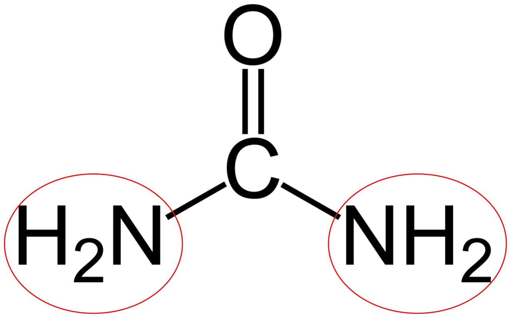
Urea is made in the liver and excreted by the kidneys. The work is done by the periportal hepatocytes, the liver cells nearest the branches of the portal vein, which are the first to meet the amino acids and ammonia arriving from the gut. The first two steps run in the mitochondrial matrix and the last three in the cytosol. Five enzymes are needed.
Each of urea's three atoms has its own source.
| Atom of urea | Enters as | Where that comes from |
|---|---|---|
| First nitrogen | Free NH3 | Glutamate dehydrogenase releases it from glutamate in the mitochondrion. NH3 from glutamine (by glutaminase) and from the gut (in portal blood) is used too. |
| Second nitrogen | The amino group of aspartate | AST (aspartate aminotransferase) moves the amino group of glutamate onto oxaloacetate, which makes aspartate |
| Carbon | CO2, as bicarbonate (HCO3−) | Made by the mitochondria |
So both nitrogens come from glutamate, the collector of amino groups Ch 2. One is set free as NH3. The other is handed to aspartate and is never free. The enzymes differ in the same way: glutamate dehydrogenase, glutaminase, monoamine oxidase, adenosine deaminase and bacterial urease release free NH3, but the aminotransferases AST and ALT (alanine aminotransferase) only pass an amino group from one molecule to another.
The pathway is a cycle because its carrier, ornithine, picks up the carbon and both nitrogens, gives them up as urea, and is left unchanged for the next turn, as oxaloacetate is in the citric acid cycle.
1. Many enzymes release free NH3 when nitrogen compounds are broken down. Which of these only moves an amino group to another molecule and never releases free NH3? lecture question
2. Where do the two nitrogen atoms of urea come from?
3. Where does the carbon atom of urea come from?
4. Which liver cells make urea, and why does their position suit the job?
5. The urea pathway is a cycle because one carrier molecule is used and then regenerated on every turn. Which molecule?
Steps 1 and 2, in the mitochondrion: ammonia is captured and loaded onto ornithine
The step numbers are the red numbers in the picture.
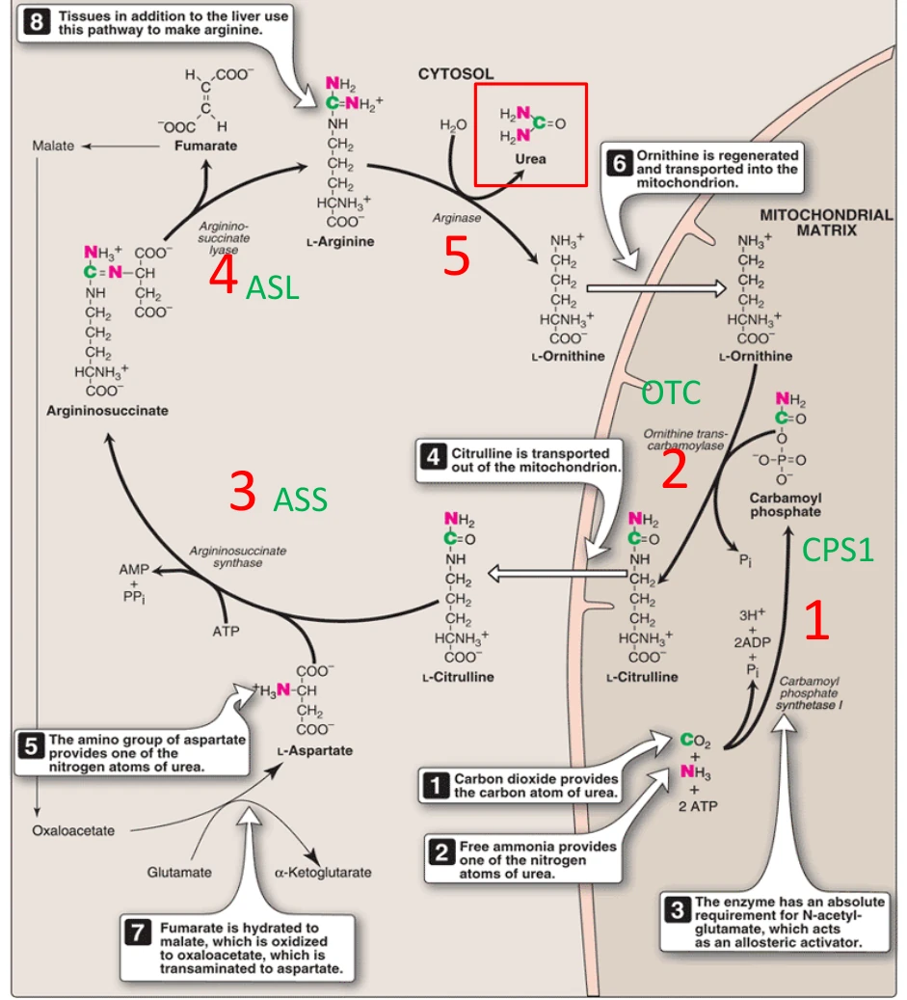
| Step | Enzyme | What it does | ATP |
|---|---|---|---|
| 1 | Carbamoyl phosphate synthetase I (CPS I) | Joins CO2 and NH3 and adds a phosphate. Product: carbamoyl phosphate. | 2 ATP |
| 2 | Ornithine transcarbamoylase (OTC) | Moves the carbamoyl group onto ornithine. Product: citrulline. The phosphate leaves as inorganic phosphate (Pi). | None |
The carbamoyl group (H2N–C=O) already holds one nitrogen and the carbon of the future urea. Carrying it on a phosphate keeps it rich in energy, which is why step 2 needs no ATP. CPS I sets the pace of the whole cycle and works only with its activator bound control. CPS II is a different enzyme: it lies in the cytosol and starts pyrimidine synthesis Ch 8.
Ornithine and citrulline are amino acids with no codon, so they are never built into proteins. Ornithine is a basic amino acid (its side chain carries a positive charge), and the cell makes it from arginine in step 5.
Step 3 is in the cytosol, so a transporter in the inner mitochondrial membrane carries citrulline out and ornithine in (the white arrows in the picture).
1. What does carbamoyl phosphate synthetase I (CPS I) make, and at what cost?
2. Ornithine transcarbamoylase joins carbamoyl phosphate to ornithine. What is the product?
3. Which two urea cycle enzymes work in the mitochondrial matrix?
4. Why does step 2 of the urea cycle need no ATP?
5. Why are ornithine and citrulline never found in proteins?
Steps 3 to 5, in the cytosol: the second nitrogen is added and urea is cut off
| Step | Enzyme | What it does | ATP |
|---|---|---|---|
| 3 | Argininosuccinate synthetase (ASS), printed as "synthase" in the picture | Joins citrulline to aspartate. Product: argininosuccinate. The amino group of aspartate is the second nitrogen. | 1 ATP, split to AMP + pyrophosphate (PPi) |
| 4 | Argininosuccinate lyase (ASL) | Splits argininosuccinate into arginine and fumarate | None |
| 5 | Arginase | Uses water to cut urea off arginine. Ornithine is left. | None |
Step 3 uses the third and last ATP. It is split to AMP (adenosine monophosphate), not to ADP, which breaks two high-energy bonds at once. The aspartate is supplied by AST, which moves an amino group from glutamate onto oxaloacetate.
Step 4 leaves the nitrogen on arginine, and the four carbons of aspartate leave as fumarate. So aspartate only delivered a nitrogen. This step is also how the body makes its own arginine.
Step 5 happens only in the liver, because arginase works only there. So only the liver can make urea, although other organs have some of the other enzymes. The ornithine goes into the mitochondrion again for the next turn.
1. Which enzyme brings the second nitrogen of urea into the cycle, and from which molecule?
2. Argininosuccinate lyase splits argininosuccinate into arginine and which other molecule?
3. Arginase splits arginine into urea and which other molecule?
4. Other organs have some of the urea cycle enzymes. Why can only the liver make urea?
5. Which enzyme supplies the aspartate that is used in step 3 of the urea cycle?
What one urea costs, and the link to the citric acid cycle
One aspartate, one ammonia and one CO2 become one urea and one fumarate, and three ATP are spent.
Aspartate + NH3 + CO2 + 3 ATP → urea + fumarate + 2 ADP + AMP + 2 Pi + PPi
Pi = inorganic phosphate (one free phosphate) · PPi = pyrophosphate (two phosphates joined) · AMP = adenosine monophosphate
How many high-energy phosphate bonds does one urea cost?
Four. Step 1 splits 2 ATP to 2 ADP: two bonds. Step 3 splits 1 ATP to AMP + PPi, which takes two phosphates off at once: two more bonds. So "three ATP" and "four ATP's worth of energy" are the same cost counted in two ways.
Spending four bonds makes the cycle irreversible.
The fumarate from step 4 is not wasted. In the cytosol it becomes malate, which has two routes.
- Into the mitochondrion. The citric acid cycle oxidizes malate to oxaloacetate. This makes NADH, and so ATP, which earns back part of the cost.
- Staying in the cytosol. Cytosolic malate dehydrogenase (MDHc) oxidizes malate to oxaloacetate, and AST adds an amino group from glutamate. The new aspartate enters step 3 with the next nitrogen.
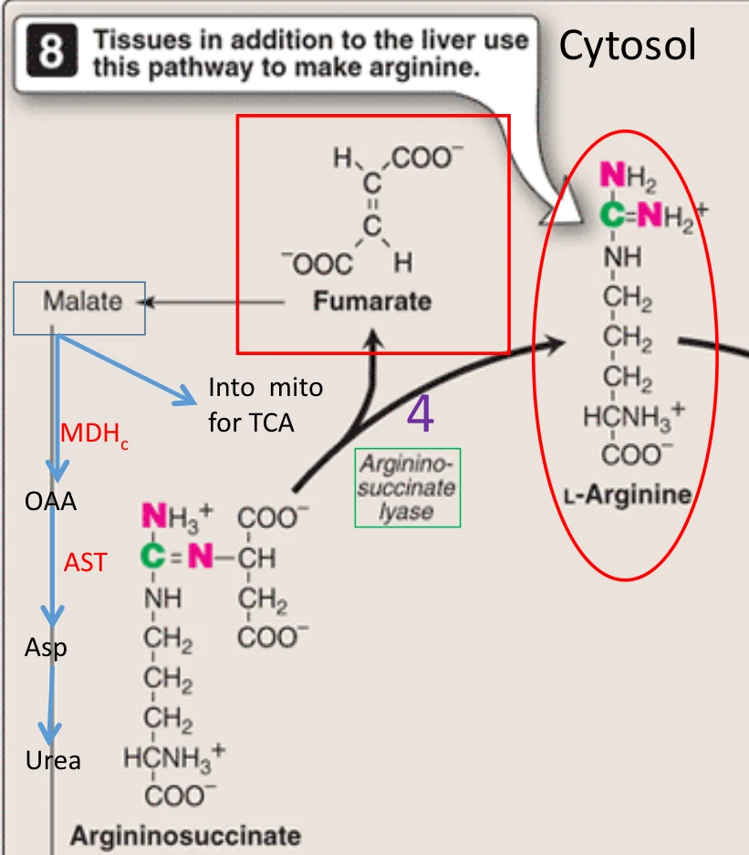
By the second route one four-carbon skeleton goes round and round (aspartate, fumarate, malate, oxaloacetate, aspartate), and only the nitrogen moves on into urea. Fumarate and aspartate tie the urea cycle to the citric acid cycle.
1. How many high-energy phosphate bonds are used to make one molecule of urea?
2. A liver cell makes 6 molecules of urea. How many ATP molecules are split, and how many high-energy bonds are broken?
3. Which two molecules link the urea cycle to the citric acid cycle?
4. In the cytosol, fumarate from the urea cycle is turned into malate. Which enzyme then makes oxaloacetate from the malate?
5. Malate made from the urea cycle's fumarate can enter the mitochondrion. How does this earn back part of the cost of making urea?
How the cycle is controlled: CPS I and its on-switch
The nitrogen reaching the liver varies a great deal, and the cycle has to keep up. The control point is step 1. CPS I is the rate-limiting step: the slowest step, so it sets the speed of the whole cycle.
Within minutes: N-acetylglutamate
CPS I has an absolute requirement for N-acetylglutamate (NAG), an allosteric activator: it binds at a site of its own and switches the enzyme on, and no part of it ends up in urea. Without NAG, CPS I does nothing, however much ammonia is present. NAG is made from acetyl CoA and glutamate by N-acetylglutamate synthase, and arginine stimulates that enzyme. So the cycle has two activators: NAG acts on CPS I, and arginine acts one step earlier, on the enzyme that makes NAG.
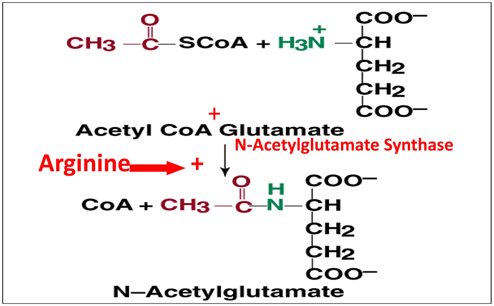
These signals fit the need. When many amino acids are being broken down, their amino groups collect on glutamate, and arginine rises too (it comes with dietary protein and from the cycle itself). More of both means more NAG and a faster CPS I. This is feed-forward control: the arriving amino acids switch on the pathway that disposes of their nitrogen, before ammonia can build up.
Over days: more enzyme
If the load stays high for days, the liver makes more of all five enzymes (induction). Two opposite states do this.
- A high-protein diet. Amino acids cannot be stored, so the surplus is broken down and its nitrogen must leave.
- Fasting and starvation. Glucagon drives gluconeogenesis (the making of new glucose) from amino acids released by muscle, above all alanine. In the liver alanine passes its amino group to α-ketoglutarate, which gives pyruvate (used for glucose) and glutamate. Glutamate dehydrogenase frees the amino group as NH3, and it goes into urea.
So the cycle is busy in both the fed and the fasting state. A starving person eats no protein but still makes plenty of urea, from his own muscle.
1. Which enzyme is the rate-limiting step of the urea cycle, and which activator must be bound to it?
2. From which two molecules is N-acetylglutamate made?
3. How does arginine speed up the urea cycle?
4. After several days on a high-protein diet, how has the liver adapted?
5. During prolonged fasting a person eats no protein, yet urea production rises. Why?
Citrulline and arginine outside the liver: gut, kidney and nitric oxide
Only the liver has all five enzymes. Other tissues have a few of them and use them to make arginine.
The small intestine makes citrulline and releases it into the blood. The kidney takes it up, converts it to arginine with ASS and ASL (steps 3 and 4), and releases the arginine into the renal vein. The kidney does not have the complete cycle: it cannot do step 5, so it makes no urea.
Arginine is also the source of nitric oxide (NO), a gas that relaxes the smooth muscle of blood vessels (a vasodilator). Nitric oxide synthase (NOS) turns arginine, NADPH and O2 into NO, citrulline and NADP+ Ch 5. The kidney makes NO this way.
So citrulline has three roles: an intermediate of the urea cycle, the gut's supply to the kidney for making arginine, and the second product of NO synthesis.
1. Which organ makes citrulline and releases it into the blood for the kidney to use?
2. Which two enzymes does the kidney use to turn citrulline into arginine?
3. What does nitric oxide (NO), made from arginine, do to blood vessels?
Where urea goes: three quarters to the urine, one quarter to the gut
Urea diffuses from the liver cells into the blood. It travels by the hepatic veins, the inferior vena cava, the heart and lungs and the aorta to the renal arteries and the kidneys, where it is filtered into the urine. About 75% leaves this way.
About 25% enters the intestine. Blood reaches the gut through arteries such as the superior mesenteric artery (from the front of the abdominal aorta), and urea diffuses into the lumen, mainly in the colon. Human cells cannot break urea down. Bacteria can (gut bacteria, and Helicobacter pylori in the stomach): bacterial urease splits each urea into CO2 and two NH3.
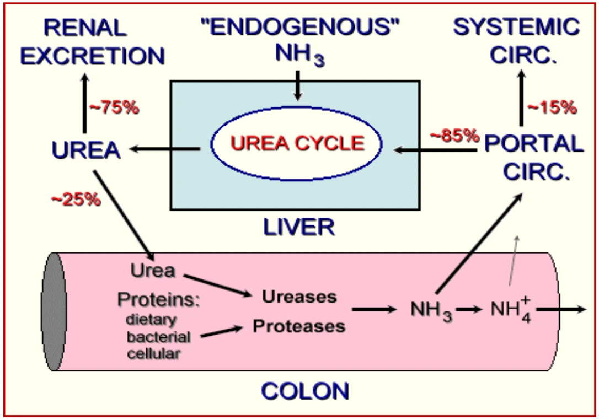
Most of this NH3 is absorbed into the portal vein. The liver removes about 85% of it and makes urea again, and about 15% passes on into the general circulation. NH3 that picks up an H+ in the lumen becomes NH4+, which is charged, cannot cross the gut wall and is lost in the feces. Bacterial proteases add more NH3 from protein in the colon (unabsorbed food, dead bacteria, shed cells).
In kidney failure urea is not excreted, so its blood level climbs and more of it diffuses into the gut. Urease then makes more NH3 than the liver can clear, which is one cause of high ammonia in these patients. Neomycin by mouth, an antibiotic that stays in the gut, kills the bacteria: less urease, so less NH3.
1. About how much of the urea made by the liver passes into the intestine instead of the urine?
2. What does bacterial urease make from urea in the gut?
3. Some NH3 in the colon picks up an H+ and becomes NH4+. What happens to it?
4. Why can kidney failure raise blood ammonia?
5. A patient with kidney failure and high blood ammonia is given the antibiotic neomycin by mouth. How does it lower ammonia?
BUN: what the blood urea level tells you
Urea in the blood is reported as blood urea nitrogen (BUN), the nitrogen carried as urea. Normal is 8–20 mg/dL (milligrams per decilitre). It is a common test of kidney function.
BUN is a balance between how fast the liver makes urea and how fast the kidneys remove it. A high BUN most often means the kidneys are not filtering properly.
| BUN | Cause | Why |
|---|---|---|
| ↑ | Kidney disease | Less urea is filtered |
| ↑ | Dehydration; heart failure | Less blood flows through the kidneys |
| ↑ | Unusually high protein intake | More amino acids are broken down |
| ↑ | More tissue breakdown: trauma, glucocorticoid treatment | Body protein is broken down (glucocorticoids make muscle release its amino acids) |
| ↑ | Hemorrhage, above all into the gut | Blood in the gut is digested like a protein meal. Lost blood volume also lowers kidney blood flow. |
| ↑ | Gout | Often goes with poor kidney function Ch 9 |
| ↓ | Liver disease, including infections that damage the liver | Less urea is made, and ammonia rises instead |
| ↓ | Low protein intake | Fewer amino acids are broken down |
| ↓ | Poor absorption in the intestine (celiac disease) | Amino acids from food do not reach the liver Ch 1 |
Read BUN together with ammonia. High ammonia with a low BUN: the liver is not making urea. A high BUN: urea is made but is not leaving through the kidneys.
1. What is the normal range of blood urea nitrogen (BUN)?
2. Which of these lowers blood urea nitrogen (BUN)?
3. A patient bleeds heavily into the stomach and intestine. Why does blood urea nitrogen (BUN) rise?
4. A patient has a high plasma NH3 and a low blood urea nitrogen (BUN). What does this combination mean?
5. A patient with untreated celiac disease has a blood urea nitrogen (BUN) of 5 mg/dL. Why is it low?
High blood ammonia: two kinds of cause, one lab pattern
Hyperammonemia is too much ammonia in the blood. A healthy liver can make urea far faster than the body makes ammonia, so ammonia rises only when the cycle fails. There are two types: acquired (the liver is diseased) and inherited (one enzyme of the cycle is deficient from birth, so the cycle is blocked at that step). Both give the same three changes in the blood.
| Blood test | Change | Why |
|---|---|---|
| NH3 | ↑ | It is not being turned into urea |
| Glutamine | ↑ | Tissues attach the extra NH3 to glutamate: glutamine is how they store and carry it |
| BUN | ↓ | Less urea is being made |
Acquired: liver disease
This is the usual cause in adults. The damage can be sudden: viral hepatitis, ischemia (loss of blood supply) or hepatotoxins (liver poisons). Or it can be long-standing: cirrhosis, scarring of the liver after alcoholism, chronic hepatitis or blockage of the bile ducts.
Cirrhosis raises ammonia in two ways. Many liver cells are lost, so fewer cells can make urea. And the scarred liver resists blood flow, so collateral veins open that join the portal system directly to the systemic veins (portosystemic shunting). Blood from the gut, loaded with NH3 made by bacteria, then bypasses the liver cells.
1. Which explanation best describes why cirrhosis of the liver leads to hyperammonemia (high blood ammonia)? discussion question
2. In cirrhosis, collateral veins join the portal system directly to the systemic veins. How does this raise blood ammonia?
3. Which blood pattern is seen in both acquired and inherited hyperammonemia (high blood ammonia)?
4. Which of these is an acquired, not an inherited, cause of hyperammonemia (high blood ammonia)?
5. A healthy person eats a very large protein meal. Why does blood ammonia stay normal?
Inherited urea cycle defects: what all of them share
Any of the five enzymes can be deficient, and all of these disorders are rare. Each shows the hyperammonemia pattern, with two more changes.
- Alanine rises along with glutamine. Both carry surplus nitrogen.
- Arginine falls, because the cycle is where the body makes its arginine. The exception is arginase deficiency: the block comes after arginine, so arginine builds up.
Complete deficiency: a newborn. The baby looks normal at birth, because until then the placenta passed its ammonia to the mother's liver. Within a day or two plasma NH3 is above 150 µM, and the baby is lethargic, will not feed, is cold (hypothermia) and breathes fast. As the brain swells (cerebral edema) there are seizures and coma, and survivors often have brain damage.
The fast breathing has a cause. Ammonia stimulates the breathing centre of the brainstem, the baby blows off too much CO2, and the blood turns alkaline: a respiratory alkalosis.
Partial deficiency: later, and in attacks. The remaining enzyme copes with an ordinary day. Ammonia rises when illness, stress or fasting makes the body break down its own protein. The picture is milder: loss of appetite, vomiting, lethargy and abnormal behaviour.
1. How does a newborn with a complete deficiency of a urea cycle enzyme usually present?
2. Why do newborns with a complete urea cycle defect develop respiratory alkalosis?
3. Why is plasma arginine low in most inherited urea cycle defects?
4. A teenager with a partial urea cycle defect is well until he catches the flu and stops eating. Why does his ammonia rise now?
5. Besides glutamine, which amino acid rises in the blood in urea cycle defects because it carries surplus nitrogen?
Which enzyme is missing: look at what piles up
The molecule just before the block builds up, and everything after the block runs short. So the intermediates in blood and urine show where the block is.
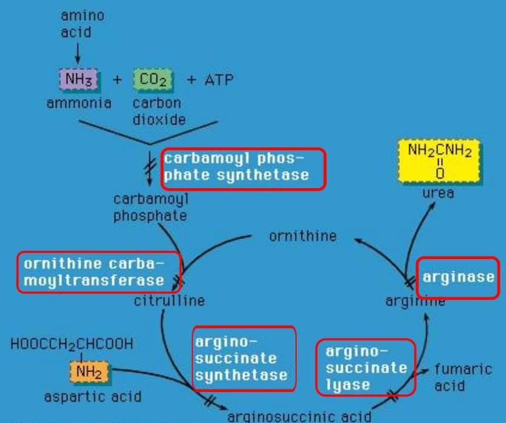
| Missing enzyme | Inheritance | What builds up | Other points |
|---|---|---|---|
| CPS I (step 1) | Autosomal recessive | Only NH3, with glutamine and alanine. Carbamoyl phosphate ↓, no orotic acid. | The most severe: ammonia cannot even be captured as carbamoyl phosphate. Called hyperammonemia type 1. |
| OTC (step 2) | X-linked | Carbamoyl phosphate ↑, turned into orotic acid ↑ and uracil ↑. Citrulline ↓. | The most common, about 1 in 25,000. Called hyperammonemia type 2. |
| ASS (step 3) | Autosomal recessive | Citrulline ↑, about 10 times normal | Citrullinemia |
| ASL (step 4) | Autosomal recessive | Argininosuccinate ↑ in blood and urine | Argininosuccinic aciduria. The second most common, about 1 in 70,000. |
| Arginase (step 5) | Autosomal recessive | Arginine ↑, 5 to 7 times normal | The only one with high arginine. Ammonia rises least, because arginine, holding both nitrogens, can be excreted in the urine. |
1. A newborn has a plasma NH3 of 880 µM. Plasma citrulline is very high, and no argininosuccinate is found. Which enzyme is deficient?
2. Which urea cycle defect is the most severe?
3. A child's urine contains large amounts of argininosuccinate. Which statement about this defect is correct?
4. In which urea cycle defect is plasma arginine 5 to 7 times normal?
OTC deficiency and CPS I deficiency: why only one has orotic acid
Both defects block the start of the cycle, so both have high NH3 and low citrulline, arginine and urea. The difference is carbamoyl phosphate.
In OTC deficiency, CPS I still works. Carbamoyl phosphate is made but cannot be joined to ornithine, so it builds up and leaks out of the mitochondrion into the cytosol. Pyrimidines are made there, and that pathway normally uses only the small, controlled amount of carbamoyl phosphate that CPS II makes for it. Its next enzyme, aspartate transcarbamoylase (ATCase), joins the leaked carbamoyl phosphate to aspartate, and the pathway carries it on to orotic acid and then uracil Ch 8. Orotic acid rises in the blood and passes into the urine (orotic aciduria), where it can form crystals.
In CPS I deficiency no carbamoyl phosphate is made in the mitochondrion, so nothing leaks and orotic acid is not raised.
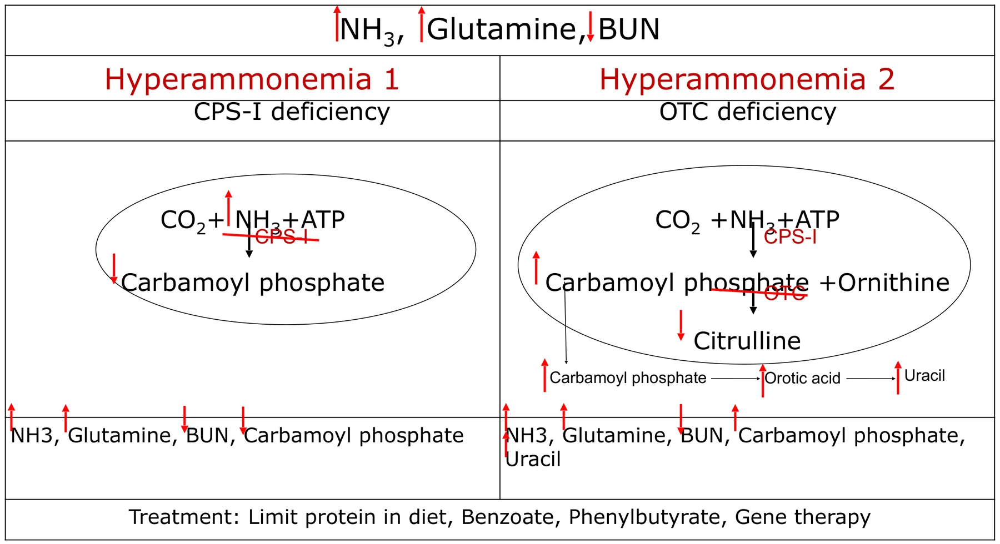
OTC deficiency is also the only one that is X-linked. A boy has a single X chromosome, so one faulty copy leaves him with no working enzyme. A girl with one faulty copy is usually well or only partly deficient. The other four defects are autosomal recessive.
Orotic acid in the urine with a normal ammonia is a different disease, a defect inside the pyrimidine pathway itself Ch 8.
1. A 2-day-old baby has a plasma NH3 of 350 µM, a low blood urea nitrogen and orotic acid crystals in the urine. Which enzyme is most likely deficient? lecture question
2. An infant has an inherited defect of ornithine transcarbamoylase. Which of these is most likely to be increased in the plasma? discussion question
3. In ornithine transcarbamoylase deficiency, how does carbamoyl phosphate end up as orotic acid?
4. A newborn has a very high plasma NH3. Citrulline and arginine are low, and the urine contains no orotic acid. Which enzyme is deficient?
5. Why does ornithine transcarbamoylase deficiency affect boys far more often and more severely than girls?
Treatment: less nitrogen in, and other ways out
The missing enzyme cannot be put back. So treatment cuts down the nitrogen coming in and gives nitrogen other ways to leave.
| Treatment | How it lowers ammonia |
|---|---|
| Dialysis | Removes NH3 directly from the blood when the level is dangerously high |
| Limiting protein in the diet | Less nitrogen comes in. Enough calories must still be given, or the body breaks down its own protein instead. |
| Sodium phenylbutyrate (Buphenyl) | A prodrug: the body converts it to phenylacetate, which joins to glutamine. Phenylacetylglutamine is excreted in the urine, carrying out 2 nitrogens. |
| Sodium benzoate | Joins to glycine. Hippurate is excreted in the urine, carrying out 1 nitrogen. |
| Gene therapy | Aims to give liver cells a working copy of the gene |
Why the scavenger drugs work. The body makes glutamine and glycine from ammonia. When phenylacetate or benzoate takes one of them out in the urine, the body makes a replacement and uses up ammonia to do it. Nitrogen leaves without any urea being made.
Arginine or citrulline. Arginine is low in every defect except arginase deficiency, so it has to be supplied. Which one is given depends on where the block is.
- ASS deficiency (citrullinemia) or ASL deficiency (argininosuccinic aciduria): L-arginine. Arginase splits it into urea and ornithine. The ornithine takes up carbamoyl phosphate, which holds one waste nitrogen, and becomes citrulline. In ASS deficiency the cycle stops there and the citrulline is excreted in the urine. In ASL deficiency it goes one step further, and argininosuccinate is excreted with two waste nitrogens.
- CPS I or OTC deficiency: L-citrulline. It enters the cycle beyond the block. Steps 3 to 5 add a nitrogen from aspartate and split the arginine into urea and ornithine. So each citrulline removes one waste nitrogen and supplies the missing arginine.
- Arginase deficiency: neither. Arginine is already 5 to 7 times normal.
1. How does sodium phenylbutyrate lower blood ammonia?
2. Sodium benzoate removes nitrogen by joining to which amino acid, forming hippurate that is excreted in the urine?
3. Why is citrulline by mouth useful in carbamoyl phosphate synthetase I deficiency and in ornithine transcarbamoylase deficiency?
4. In argininosuccinate synthetase deficiency (citrullinemia), how does giving arginine help to remove nitrogen?
5. A child with a urea cycle defect is put on a low-protein diet. Why must enough calories still be given?
What happens to the carbon skeleton
Once an amino acid has given up its amino group, what is left is its carbon skeleton. The 20 skeletons end as just seven molecules, and which one a skeleton becomes decides whether the body can make glucose from it, ketone bodies, or both. Some steps on the way must move a single carbon atom from one molecule to another: that is the work of folate, vitamin B12 and S-adenosylmethionine.
Twenty skeletons, seven end products
The amino group is removed first, and its nitrogen leaves as urea Ch 2 Ch 3. What remains is an α-keto acid: the same carbon chain, with a C=O where the amino group was. This carbon skeleton is fuel. Each amino acid has its own route of breakdown, but every route ends at one of seven molecules, in two groups.
- Pyruvate, and four members of the tricarboxylic acid (TCA) cycle: oxaloacetate, α-ketoglutarate, succinyl CoA and fumarate.
- Acetyl CoA and acetoacetate (or acetoacetyl CoA, which is readily converted to either).
Any of the seven can be burned in the TCA cycle for ATP. When glucose is short, as in fasting, the group decides what else the skeleton can become.
Glucogenic amino acids are those whose skeleton lands in the first group. Every member of that group can become oxaloacetate, which phosphoenolpyruvate carboxykinase turns into phosphoenolpyruvate, the start of the road up to glucose (gluconeogenesis, in the liver and kidney). Pyruvate is made into oxaloacetate directly, by pyruvate carboxylase. α-Ketoglutarate, succinyl CoA and fumarate lie before oxaloacetate in the cycle, so a skeleton that enters there arrives as one extra oxaloacetate, which can be drawn off for glucose.
Ketogenic amino acids are those whose skeleton becomes acetyl CoA or acetoacetate. Acetyl CoA cannot make glucose, for two reasons.
- It cannot go back to pyruvate: pyruvate dehydrogenase runs one way only.
- The TCA cycle gains nothing from it. Its two carbons join oxaloacetate to form citrate, and two carbons leave as CO2 before the cycle is back at oxaloacetate. No extra oxaloacetate is made.
Instead the liver joins two acetyl CoA into acetoacetate. Acetoacetate and the 3-hydroxybutyrate made from it are the ketone bodies, a fuel for brain and muscle during fasting. Acetyl CoA can also be built into fatty acids.
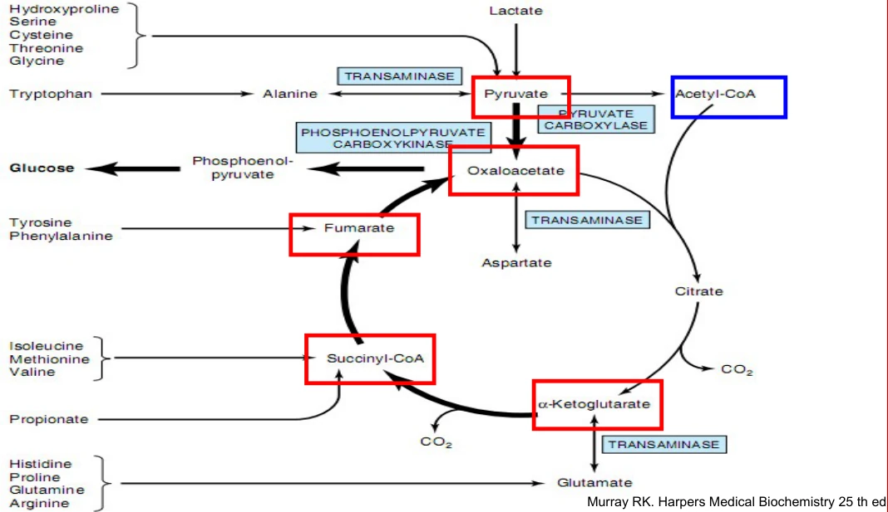
1. An amino acid that can be metabolized to pyruvate is classified as which of the following? discussion question
2. Acetyl CoA enters the citric acid cycle, yet it gives no net glucose. Why?
3. A carbon skeleton enters the citric acid cycle as α-ketoglutarate. Why can it be made into glucose?
4. Which enzyme converts oxaloacetate to phosphoenolpyruvate on the way to glucose?
5. Which of the seven end products of amino acid breakdown is itself a ketone body?
Which amino acids are glucogenic, ketogenic or both
Sorting the amino acids by the end product of their skeleton gives the classification.
| The skeleton becomes | Amino acids | So they are |
|---|---|---|
| Pyruvate | Alanine, serine, glycine, cysteine; hydroxyproline (the modified proline of collagen); the alanine cut off tryptophan | Glucogenic |
| Oxaloacetate | Aspartate, asparagine | Glucogenic |
| α-Ketoglutarate | Glutamate, glutamine, proline, arginine, histidine | Glucogenic |
| Succinyl CoA | Methionine, valine, threonine (a small share of threonine goes to pyruvate instead); one piece of isoleucine | Glucogenic |
| Fumarate | One piece of phenylalanine and of tyrosine | Glucogenic |
| Acetyl CoA or acetoacetate | All of leucine and of lysine; the other piece of phenylalanine, tyrosine, tryptophan and isoleucine | Ketogenic |
- Purely ketogenic: leucine and lysine only.
- Both: phenylalanine, tyrosine, tryptophan and isoleucine (the three with an aromatic ring, plus isoleucine). Each skeleton is cut into one glucogenic and one ketogenic piece.
- Purely glucogenic: the other 14.
Carbon for glucose during a fast
In a fast the liver has four supplies of carbon for making glucose, and each joins the road at its own point.
| Where it comes from | What reaches the liver | Where it joins the road to glucose |
|---|---|---|
| Fat breakdown in adipose tissue (lipolysis) | Glycerol | Dihydroxyacetone phosphate (DHAP), a three-carbon intermediate of glycolysis, interconverted with glyceraldehyde 3-phosphate |
| Anaerobic glycolysis | Lactate | Pyruvate, then oxaloacetate |
| Breakdown of muscle protein (proteolysis) | Alanine, the main glucogenic amino acid Ch 2 | Pyruvate, then oxaloacetate |
| Oxidation of odd-chain fatty acids | Propionyl CoA | Succinyl CoA |
Ordinary fatty acids are not on the list: an even-chain fatty acid is cut entirely into acetyl CoA. Only the last three carbons of an odd-chain fatty acid, as propionyl CoA, can become glucose below, together with the glycerol that the fatty acids were attached to.
1. Which two amino acids are purely ketogenic?
2. Which four amino acids are both glucogenic and ketogenic?
3. Isoleucine is both glucogenic and ketogenic. Which two pieces is its skeleton cut into?
4. Which product of fatty acid breakdown can be used to make glucose?
5. During a fast, fat stores release glycerol. Where does glycerol join the route to glucose?
Essential, nonessential and conditionally essential amino acids
The 20 amino acids that have codons and are built into proteins are proteinogenic. Others, such as ornithine and taurine, are never built into protein: they are non-proteinogenic.
The body can make 11 of the 20: these are nonessential. The other 9 are essential. They must come from the diet, or from the breakdown of the body's own protein. They are histidine, isoleucine, leucine, lysine, methionine, phenylalanine, threonine, tryptophan and valine.
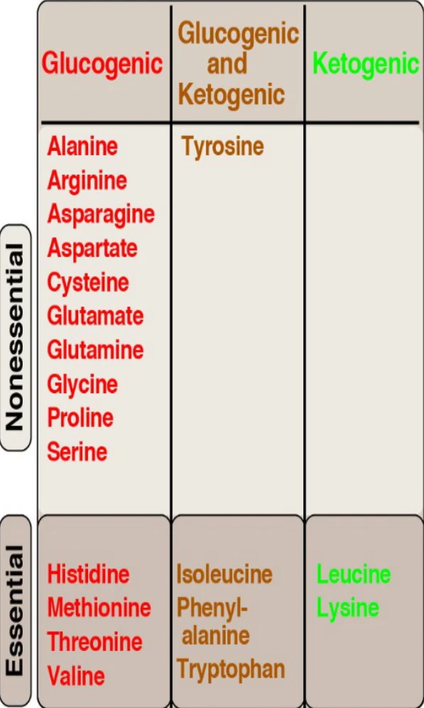
The two sortings are independent. Essential or nonessential says whether the body can make the amino acid. Glucogenic or ketogenic says what its skeleton becomes when it is broken down.
Three nonessential amino acids are made from something that can run short, and then they have to be eaten. They are conditionally essential.
| Amino acid | Made from | Becomes essential when |
|---|---|---|
| Tyrosine | Phenylalanine (essential) | The diet is low in phenylalanine, or phenylalanine hydroxylase is missing (phenylketonuria, Ch 6) |
| Cysteine | Methionine (essential), which gives its sulfur | The diet is low in methionine, or the route from methionine is blocked |
| Arginine | Glutamate, through ornithine and the enzymes of the urea cycle | A growing child needs more than this route makes. With a urea cycle enzyme defect too little is made, so it must be supplied Ch 3. |
A nonessential amino acid can be made because it lies a few steps from a molecule the cell always has: an intermediate of glycolysis or of the TCA cycle, or an essential amino acid.
1. Which of these amino acids must normally come from the diet?
2. Which amino acid must be supplied in the diet of a child with a urea cycle enzyme deficiency? discussion question
3. Tyrosine becomes an essential amino acid when which enzyme is deficient?
4. A diet is very low in methionine. Which nonessential amino acid now has to be eaten?
5. Which of these is a non-proteinogenic amino acid?
6. Leucine is both essential and ketogenic. What do these two words say about it?
Alanine, aspartate and glutamate: one step from a keto acid
Three amino acids are simply a common keto acid with an amino group added.
| Amino acid | Its keto acid | Enzyme that converts one into the other |
|---|---|---|
| Alanine | Pyruvate | Alanine aminotransferase (ALT) |
| Aspartate | Oxaloacetate | Aspartate aminotransferase (AST) |
| Glutamate | α-Ketoglutarate | Many aminotransferases (glutamate is their usual partner). Also glutamate dehydrogenase, which removes or adds free NH3 Ch 2. |
An aminotransferase moves an amino group from an amino acid onto a keto acid (a transamination), using PLP (pyridoxal phosphate, the active form of vitamin B6) Ch 2. The reaction runs equally well both ways, so it is both the breakdown and the synthesis: alanine gives up its amino group and becomes pyruvate, or pyruvate receives one and becomes alanine. Because pyruvate, oxaloacetate and α-ketoglutarate are always present in the cell, these three amino acids never have to be eaten.
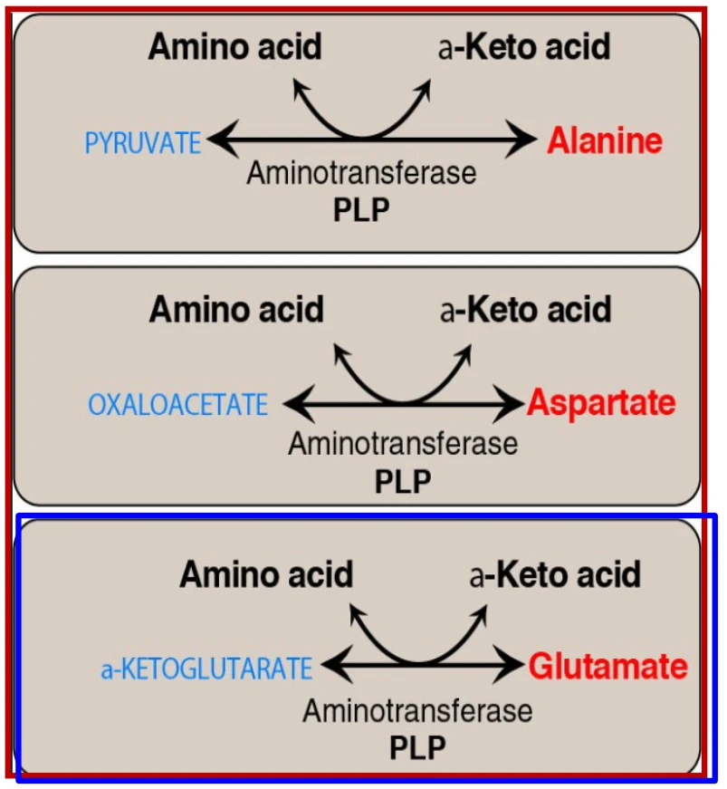
1. Which keto acid receives an amino group to make aspartate?
2. Why do alanine, aspartate and glutamate never have to be eaten?
3. Glutamate becomes α-ketoglutarate by transamination, or by which enzyme that releases free NH3?
4. Which cofactor do alanine aminotransferase and aspartate aminotransferase both need?
Asparagine and glutamine: a second nitrogen comes off first
Asparagine is aspartate with an extra NH2 on its side chain (an amide nitrogen), and glutamine is glutamate with the same addition. In breakdown the amide nitrogen is cut off first, with water, as NH3.
- Asparaginase turns asparagine into aspartate and NH3. Aspartate then becomes oxaloacetate by transamination.
- Glutaminase turns glutamine into glutamate and NH3. Glutamate then becomes α-ketoglutarate.
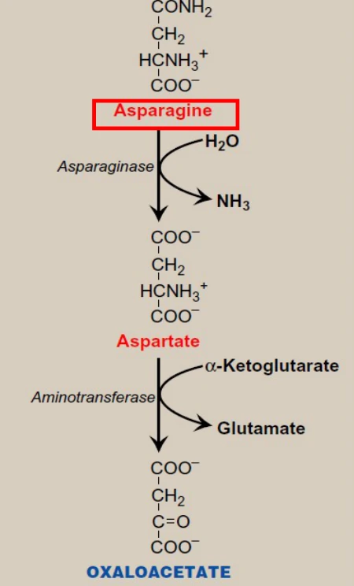
Putting the amide on is not the reverse reaction: it costs ATP and needs a different enzyme. Glutamine synthetase joins free NH3 to glutamate Ch 2. Asparagine synthetase makes asparagine from aspartate, taking the nitrogen from the amide group of glutamine.
Normal cells make their own asparagine. The cells of acute lymphoblastic leukemia have very little asparagine synthetase, so they depend on asparagine from the blood. The drug asparaginase, given into the blood, destroys the asparagine there. Normal cells are unharmed. The leukemia cells can no longer build proteins, and die.
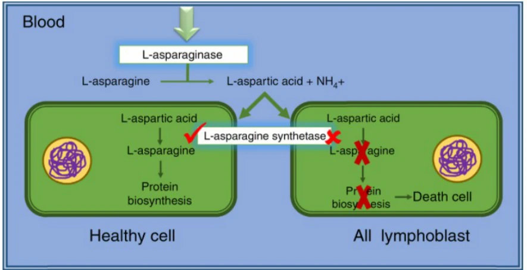
1. Why is asparaginase used to treat acute lymphoblastic leukemia?
2. Asparagine synthetase makes asparagine from aspartate. Where does the amide nitrogen come from?
3. What are the products of glutaminase?
4. The carbon skeleton of asparagine enters metabolism as which molecule?
Proline, arginine and histidine pass through glutamate
Three more amino acids are first converted to glutamate, so they end as α-ketoglutarate and are glucogenic.
- Arginine is split by arginase into urea and ornithine Ch 3. Ornithine becomes glutamate semialdehyde (glutamate with its side-chain acid group reduced to an aldehyde), which is oxidized to glutamate.
- Proline is oxidized to glutamate.
- Histidine reaches glutamate by a route that needs folate below.
Proline and arginine are made by the same steps run backwards, so both are built from glutamate. Glutamate is reduced to glutamate semialdehyde. This either closes into a ring and is reduced again, giving proline, or it receives an amino group and becomes ornithine, which the enzymes of the urea cycle turn into arginine.
The liver's arginase splits the arginine it makes at once, so none is left over. The arginine for the body's proteins is made by the intestine and the kidney: the intestine makes citrulline, and the kidney, which lacks arginase, converts it to arginine and releases it Ch 3. This supply is enough for an adult but not for a growing child.
1. Which amino acid can be made from glutamate, but not always in amounts large enough to support the normal growth of a child? lecture question
2. Glutamate semialdehyde closes into a ring and is reduced. Which amino acid is formed?
3. Arginine made in the kidney reaches the blood, but arginine made in the liver does not. Why?
4. The carbon skeleton of arginine enters the citric acid cycle as which intermediate?
Serine, glycine and cysteine become pyruvate
Serine becomes pyruvate through serine dehydratase, a PLP enzyme that removes water and then NH3. Serine is made from 3-phosphoglycerate, an intermediate of glycolysis, which is oxidized, transaminated and then loses its phosphate.
Glycine (two carbons) and serine (three carbons) are converted into each other by serine hydroxymethyltransferase, also a PLP enzyme. From serine to glycine, the enzyme passes one carbon to the carrier tetrahydrofolate, which becomes N5,N10-methylene-tetrahydrofolate below. This is how glycine is made. In reverse, glycine takes a carbon from N5,N10-methylene-tetrahydrofolate and becomes serine, which goes on to pyruvate. Glycine can also be broken down completely to CO2 and NH3.
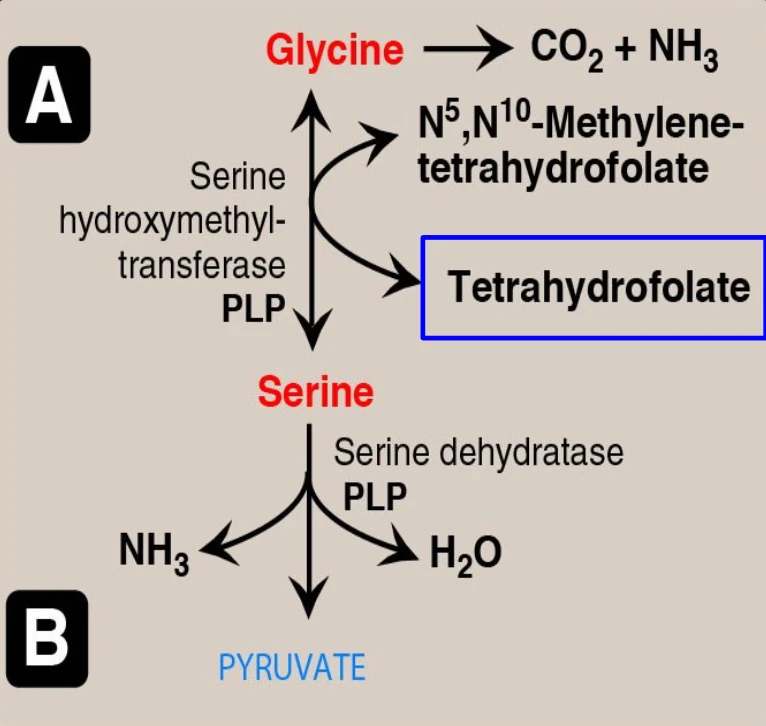
Cysteine loses its sulfur and becomes pyruvate. Cystine, two cysteines joined through their sulfur atoms, is first reduced to two cysteines. Cysteine is made with sulfur from methionine and carbons from serine below.
1. Serine is made mainly from which intermediate of glycolysis?
2. When glycine is converted to serine, what supplies the extra carbon?
3. Which enzyme converts serine directly to pyruvate?
4. Cystine is broken down to pyruvate. What has to happen to it first?
Phenylalanine and tyrosine: one pathway, two products
Phenylalanine has no breakdown route of its own: its first step is to become tyrosine. Phenylalanine hydroxylase adds an –OH group to the ring, using O2 and the cofactor tetrahydrobiopterin (BH4), which is oxidized to dihydrobiopterin Ch 5. This step is also the only way the body makes tyrosine.
From tyrosine onward there is one shared pathway. After several steps the ring is opened and the chain is cut into fumarate, which is glucogenic, and acetoacetate, a ketone body. So both amino acids are glucogenic and ketogenic. The inherited defects of this pathway are in Ch 6.
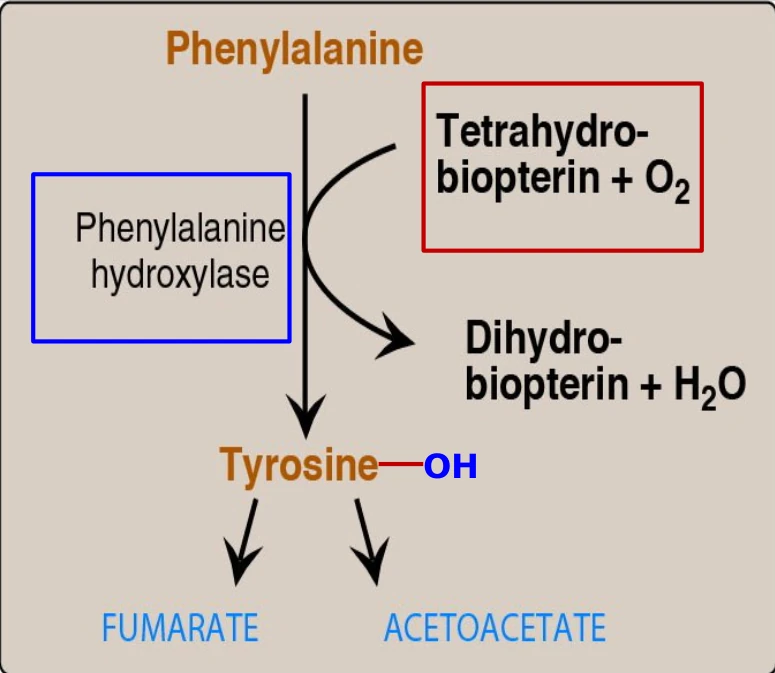
1. Tyrosine is broken down to fumarate and acetoacetate. What does that make it?
2. What is the first step in the normal breakdown of phenylalanine?
3. Which cofactor does phenylalanine hydroxylase use, and what happens to it in the reaction?
Tetrahydrofolate: the carrier of single carbons
The purines, the thymine of DNA and methionine are each finished by adding one carbon atom. A single carbon cannot travel free. It rides on a carrier, which picks it up from one molecule and hands it to another. The carriers are tetrahydrofolate and S-adenosylmethionine below, and the carbons riding on them make up the one-carbon pool.
Folate (folic acid) from the diet cannot carry a carbon. Dihydrofolate reductase (DHFR) reduces it twice, with one NADPH each time: to dihydrofolate (DHF), then to tetrahydrofolate (THF), the active form, also written H4-folate or TH4. The drug methotrexate resembles folate and competitively inhibits this enzyme, so the cell cannot make THF Ch 8.
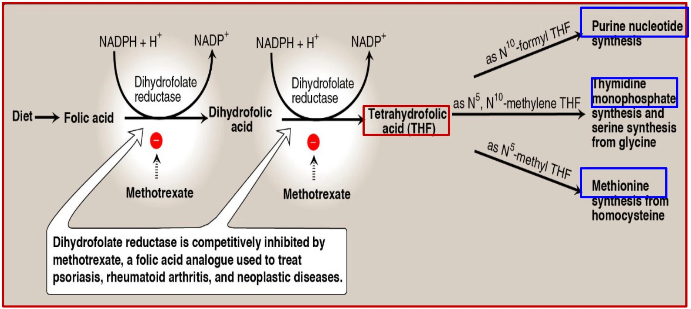
THF holds its one-carbon group on nitrogen 5 (N5), on nitrogen 10 (N10), or bridged between the two. The main donor is serine, as it becomes glycine. On THF the carbon can be reduced step by step, and each form has its own job.
| Form of THF | The carbon it carries | Comes from | Used for |
|---|---|---|---|
| N10-formyl-THF | Formyl: still carries an oxygen (most oxidized) | Formate from tryptophan | Two carbons of the purine ring Ch 7 |
| N5,N10-methenyl-THF | Methenyl: one hydrogen, double bond to nitrogen | Histidine | The form between formyl and methylene |
| N5,N10-methylene-THF | Methylene, –CH2–, bridging N5 and N10 | Serine and glycine | Deoxythymidine monophosphate (dTMP), the thymine nucleotide of DNA Ch 8. Serine from glycine. |
| N5-methyl-THF | Methyl, –CH3 (most reduced) | Reduction of methylene-THF | Methionine from homocysteine |
The first three forms are freely converted into one another. The last step is one-way: methylenetetrahydrofolate reductase (MTHFR) reduces methylene-THF to methyl-THF with NADH. After that, the only way back to free THF is to give the methyl group to homocysteine, which matters when vitamin B12 is missing below.
Without folate a cell cannot make purines and dTMP, so it cannot copy its DNA, and the tissues that divide fastest suffer first. In the bone marrow the result is a megaloblastic anemia: too few red cells, large and immature. In the embryo it is a neural tube defect such as spina bifida. The neural tube closes about day 17 to day 30 after conception, often before the pregnancy is known, so folate must be adequate before conception and through the first month.
1. Methotrexate competitively inhibits which enzyme?
2. Which form of tetrahydrofolate (THF) supplies carbons for the purine ring?
3. Which form of tetrahydrofolate (THF) is needed to make dTMP, the thymine nucleotide of DNA?
4. Which conversion between forms of tetrahydrofolate (THF) cannot be reversed?
5. Why does a woman need enough folate before she knows she is pregnant?
6. What is the main source of the one-carbon groups carried by tetrahydrofolate?
Histidine, FIGLU and a test for folate deficiency
Histidine is broken down to glutamate, and the last step needs THF.
- Histidase removes NH3 from histidine, leaving urocanic acid.
- Two more steps give N-formiminoglutamate (FIGLU): glutamate with a one-carbon group, the formimino group, still attached.
- FIGLU hands the formimino group to THF, which becomes N5-formimino-THF and joins the one-carbon pool. Glutamate is left, and goes on to α-ketoglutarate.
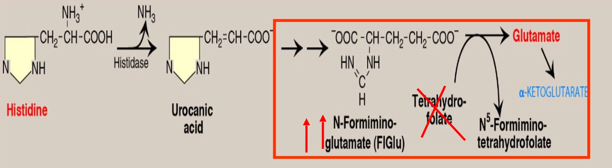
Folate deficiency. With no THF to accept the formimino group, FIGLU builds up and is excreted in the urine, most clearly after a dose of histidine. Urine FIGLU is therefore a test for folate deficiency.
Histidinemia. Histidase is missing from birth, so the block is at step 1: histidine itself rises in the blood and appears in the urine.
1. In folate deficiency, which compound rises in the urine after a dose of histidine?
2. A child has high histidine in the blood and urine. Which enzyme is missing?
3. N-Formiminoglutamate gives its one-carbon group to tetrahydrofolate. What is left?
Methionine becomes SAM, the donor of methyl groups
Methionine, an essential amino acid that contains sulfur, has two jobs besides protein: it supplies the methyl groups (–CH3) for most methylations, and the sulfur for cysteine. Its skeleton ends as succinyl CoA, so it is glucogenic. The pathway begins as a cycle.
- Activation. Methionine is joined to the adenosine of ATP to form S-adenosylmethionine (SAM), also written AdoMet. All three phosphates of the ATP are split off, so the step is one-way. The methyl group now sits on a positively charged sulfur, which makes it easy to hand over.
- Methyl transfer. A methyltransferase moves the methyl from SAM onto another molecule, leaving S-adenosylhomocysteine (SAH).
- SAH is split by water into adenosine and homocysteine, which is methionine without its methyl group.
- Homocysteine is given a new methyl group and is methionine again, or it leaves the cycle to make cysteine next section.
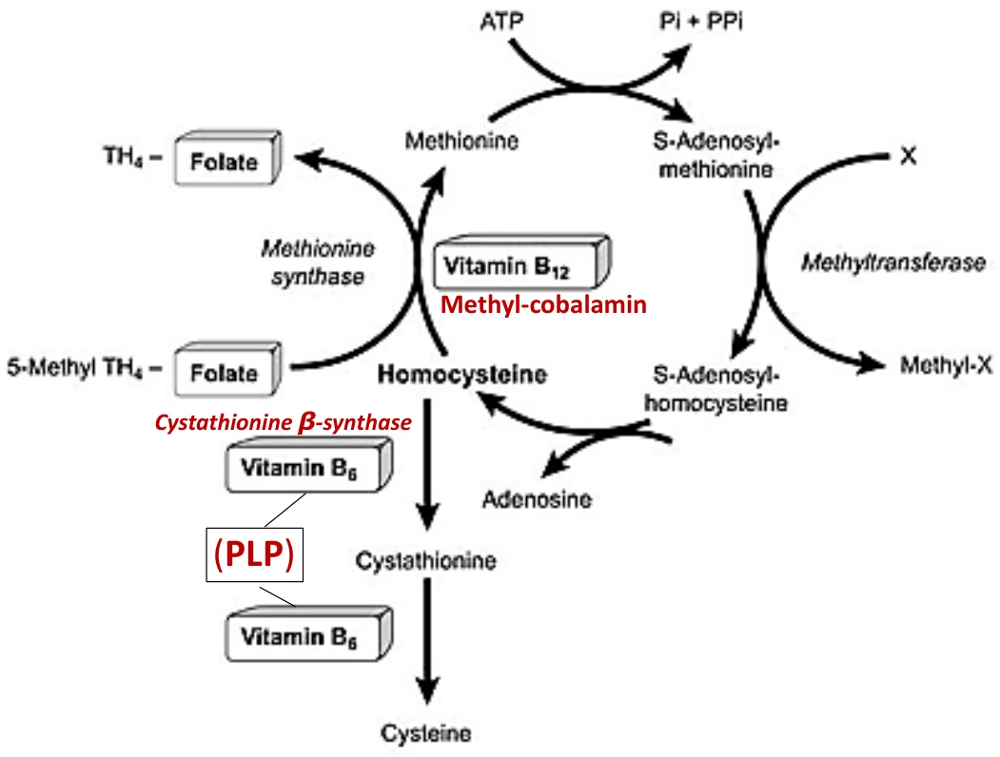
SAM is the methyl donor for almost every methylation in the body:
- norepinephrine (NE) to epinephrine (E) Ch 5
- phosphatidylethanolamine (PE) to phosphatidylcholine (PC), a membrane phospholipid
- methylation of DNA
- synthesis of carnitine, and of creatine Ch 5
- building and maintaining the myelin sheath: when methylation fails, nerves lose their myelin
SAM is also used to make polyamines, but there it gives a three-carbon chain with an amino group, not its methyl.
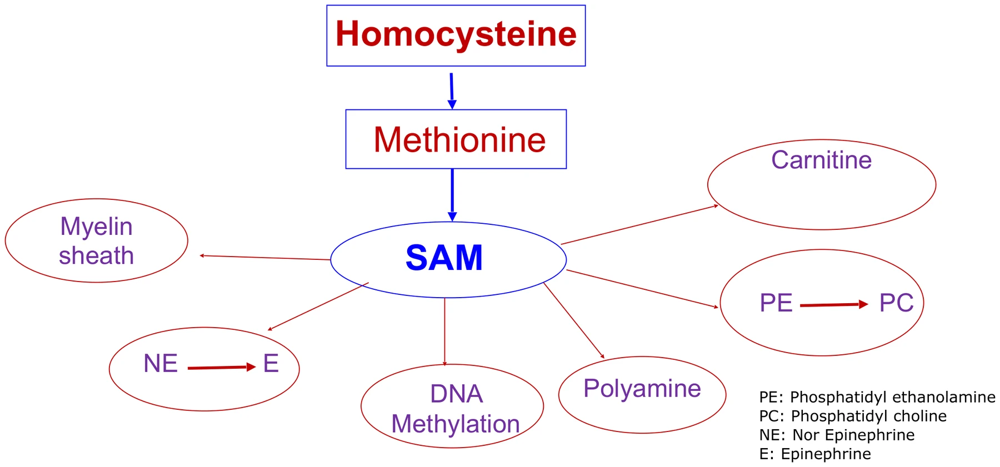
1. Which conversion uses a methyl group donated by S-adenosylmethionine (SAM)?
2. Methionine is joined to ATP to make S-adenosylmethionine. What happens to the ATP?
3. S-adenosylmethionine gives away its methyl group. What is left, and what is that split into?
4. S-adenosylmethionine is also used to make polyamines. How does this differ from its other uses?
5. Why can a failure of methylation damage nerves?
Homocysteine has two exits
Homocysteine is harmful when it builds up. It is cleared by two routes, and the amount of methionine in the body decides which.
Exit 1: back to methionine (remethylation), when methionine is short
Methionine synthase, a methyltransferase, takes a methyl group from N5-methyl-THF and passes it through vitamin B12 (cobalamin): the cobalamin on the enzyme becomes methylcobalamin, which gives the methyl to homocysteine. The products are methionine and free THF. So this exit needs folate and B12. It is the one reaction in which THF donates a methyl group. In every other methylation the donor is SAM.
Exit 2: on to cysteine (transsulfuration), when methionine is plentiful
Both enzymes of this exit need PLP, the active form of vitamin B6 (pyridoxine).
- Cystathionine β-synthase joins homocysteine to serine through the sulfur atom, making cystathionine.
- Cystathionase cuts on the other side of the sulfur. The sulfur stays with the serine carbons, and that piece is cysteine. The rest comes off as α-ketobutyrate and NH3.
So the sulfur of methionine ends up on the carbon chain of serine, which is why cysteine is nonessential only while methionine is adequate. α-Ketobutyrate is converted to propionyl CoA and then succinyl CoA next section: the glucogenic end of methionine.
Folate and B12 (exit 1) and B6 (exit 2) keep homocysteine low, and a lack of any one lets it rise. A raised plasma homocysteine injures the lining of blood vessels and is a risk factor for coronary artery disease. The very high levels of the inherited enzyme defects (homocystinuria) are in Ch 6.
1. Homocysteine is remethylated to methionine using which two vitamins?
2. Cystathionine β-synthase joins homocysteine to which amino acid?
3. Which vitamin do both enzymes on the route from homocysteine to cysteine need?
4. After a high-protein meal methionine is plentiful. What happens to most of the homocysteine?
5. Cutting cystathionine releases α-ketobutyrate. What is α-ketobutyrate converted to?
6. A raised plasma homocysteine is a risk factor for which condition?
Propionyl CoA to succinyl CoA: biotin first, then B12
Five routes end in propionyl CoA, a three-carbon fragment: valine, methionine, isoleucine and threonine, and the last three carbons of an odd-chain fatty acid. The first letters spell VOMIT: Valine, Odd-chain fatty acids, Methionine, Isoleucine, Threonine. Methionine and threonine arrive through α-ketobutyrate, and valine and isoleucine at the end of the branched-chain pathway Ch 6.
The TCA cycle has no three-carbon member, so in the mitochondria two enzymes turn propionyl CoA into the four-carbon succinyl CoA.
- Propionyl CoA carboxylase adds CO2, making methylmalonyl CoA (four carbons, but branched). Like other carboxylases it needs biotin to hold the CO2, and ATP.
- Methylmalonyl CoA mutase moves one group to the neighbouring carbon, which straightens the chain into succinyl CoA. Nothing is added or removed. It needs vitamin B12 in the form adenosylcobalamin.
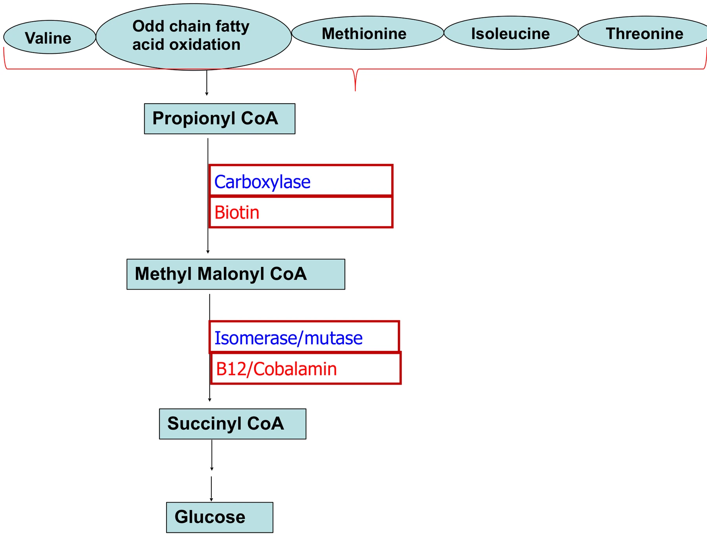
Succinyl CoA can go on to oxaloacetate and glucose. That makes these amino acids glucogenic, and it is the only way any part of a fatty acid chain becomes glucose.
If the mutase fails, methylmalonyl CoA piles up and spills into the blood and urine as methylmalonic acid, and succinyl CoA falls. If the carboxylase failed instead, propionyl CoA would pile up and methylmalonic acid would be low. The inherited defects of the two enzymes are in Ch 6.
1. Which amino acids are broken down to propionyl CoA?
2. Which vitamin does propionyl CoA carboxylase need?
3. Why must propionyl CoA be converted to succinyl CoA before it can be used?
4. Propionyl CoA carboxylase is missing. What is found, compared with a defect of the mutase?
Vitamin B12 has only two jobs
Only two enzymes in the body need vitamin B12 (cobalamin), each with its own form of it. Methylmalonyl CoA mutase uses adenosylcobalamin. Methionine synthase uses methylcobalamin, with folate supplying the methyl group.
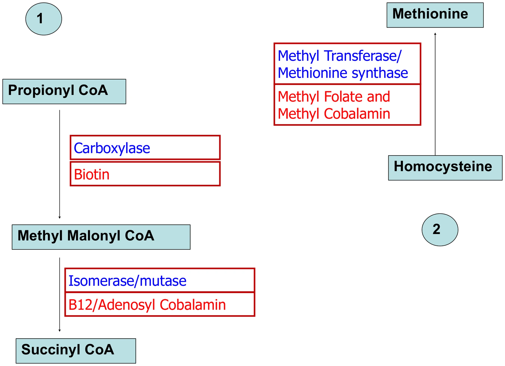
Without B12 both reactions stop, and each leaves a marker in the blood: methylmalonic acid rises and homocysteine rises.
Folate is affected too. Methyl-THF can become free THF again only by handing its methyl to B12, because the step that made it is one-way. Without B12, more and more of the cell's folate is trapped as methyl-THF, and free THF runs out. The cell then behaves as if it had no folate: it cannot make dTMP and purines, DNA synthesis fails, and the marrow produces the same megaloblastic anemia as in folate deficiency.
So a lack of B12 and a lack of folate give the same anemia, and both raise homocysteine. Methylmalonic acid tells them apart.
| What is lacking | Homocysteine | Methylmalonic acid | Why |
|---|---|---|---|
| Vitamin B12 | ↑ | ↑ | Both B12 enzymes stop |
| Folate | ↑ | Normal | No methyl-THF for methionine synthase. The mutase does not use folate. |
| Vitamin B6 | ↑ | Normal | Exit 2 of homocysteine, to cysteine, is slowed |
Inherited faults in making the two active forms of B12 raise methylmalonic acid, homocysteine or both from birth Ch 6.
1. Which two enzymes are the only ones in the body that need vitamin B12?
2. Which form of vitamin B12 does methylmalonyl CoA mutase use?
3. Vitamin B12 is lacking. What happens to methylmalonic acid and homocysteine in the blood?
4. A patient has megaloblastic anemia. Homocysteine is high and methylmalonic acid is normal. What is lacking?
5. Why does a lack of vitamin B12 cause the same anemia as a lack of folate?
Six classes of enzymes, named for what they do
Every enzyme belongs to one of six classes, by the kind of reaction it carries out. The class usually shows in the name.
| Class | What the reaction does | Names that belong to it | Examples |
|---|---|---|---|
| 1. Oxidoreductases | Oxidize one molecule and reduce another | Dehydrogenase, reductase, oxidase, hydroxylase | Lactate dehydrogenase, dihydrofolate reductase, phenylalanine hydroxylase |
| 2. Transferases | Move a group containing carbon, nitrogen or phosphorus from one molecule to another | Aminotransferase, methyltransferase, kinase | Serine hydroxymethyltransferase, ALT and AST, methionine synthase |
| 3. Hydrolases | Cut a bond by adding water | Peptidase, phosphatase; many are named only for their substrate | Urease, asparaginase, glutaminase, arginase |
| 4. Lyases | Cut a C–C, C–S or C–N bond without water | Decarboxylase, dehydratase | Pyruvate decarboxylase, serine dehydratase |
| 5. Isomerases | Rearrange a molecule: same atoms, new arrangement | Isomerase, mutase | Methylmalonyl CoA mutase |
| 6. Ligases | Join two molecules, paid for by splitting ATP | Synthetase, carboxylase | Pyruvate carboxylase, propionyl CoA carboxylase, glutamine synthetase |
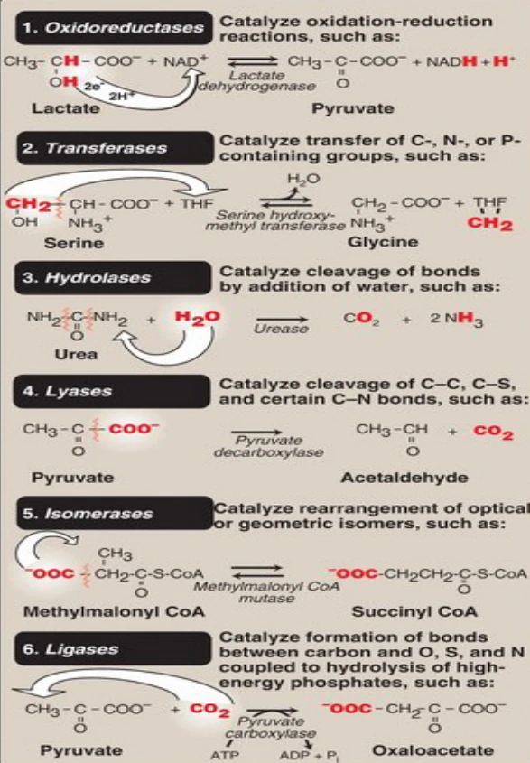
From propionyl CoA to succinyl CoA: the carboxylase joins CO2 and spends ATP, so it is a ligase. The mutase only moves a group within the molecule, so it is an isomerase.
1. Glutamine synthetase joins NH3 to glutamate and splits ATP to do it. Which class of enzyme is it?
2. A kinase moves a phosphate group from ATP onto another molecule. Which class does it belong to?
3. Asparaginase cuts the amide group off asparagine by adding water. Which class does it belong to?
4. Dehydrogenases and hydroxylases belong to the same class of enzymes. Which one?
5. An enzyme removes CO2 from pyruvate without using water or ATP. Which class does it belong to?
Products made from amino acids
Amino acids are not only the building blocks of protein. A few are also the starting material for small molecules with large effects: nerve signals, hormones, the pigment of the skin, the cell's main antioxidant and the energy reserve of muscle. Most are made with three tools: a decarboxylase that needs vitamin B6, a hydroxylase that needs tetrahydrobiopterin, and a methyl group from S-adenosylmethionine.
Take off the carboxyl group and an amino acid becomes an amine
Every amino acid carries an amino group (–NH2) and a carboxyl group (–COOH) on the same carbon. Removing the amino group leaves an α-keto acid, the carbon skeleton Ch 4. Removing the carboxyl group instead, as CO2, leaves a molecule that still has its nitrogen: an amine. This reaction is a decarboxylation.
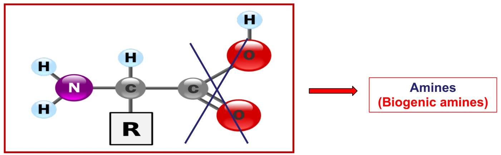
Amines made this way are called biogenic amines, and many are signals between cells: histamine, GABA, dopamine, serotonin. Every amino acid decarboxylase needs the same cofactor, pyridoxal phosphate (PLP), the active form of vitamin B6. It is also the cofactor of the transaminases Ch 2.
Histamine, from histidine
Histidine decarboxylase turns histidine into histamine. Mast cells release it during an allergic reaction or after an injury. Histamine is the messenger for two different responses. In allergic and inflammatory reactions it widens small blood vessels and makes them leaky, which gives the redness, swelling and itch. In the stomach it makes the acid-secreting cells secrete acid. So drugs that block histamine have two uses: antihistamines against allergy, and a second group to lower stomach acid.
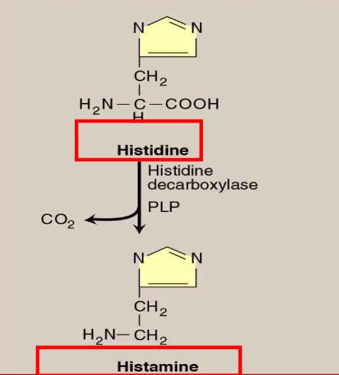
GABA, from glutamate
Glutamate is the brain's main excitatory neurotransmitter: it makes the next nerve cell more likely to fire. Glutamate decarboxylase removes the carboxyl group next to its amino group and makes γ-aminobutyric acid (GABA), the brain's main inhibitory neurotransmitter. One PLP enzyme turns the "go" signal into the "stop" signal.
Dopamine and serotonin are made by decarboxylation too, but only after a hydroxyl group (–OH) has been added to the ring of their amino acid. That step needs a different cofactor.
1. Removing the carboxyl group of an amino acid as CO2 leaves what kind of molecule? lecture question
2. Histamine, dopamine and serotonin are each made by an amino acid decarboxylase. Which cofactor do all of these decarboxylases need?
3. Histamine is made from which amino acid, and by what kind of reaction?
4. Which cells release histamine during an allergic reaction?
5. Why are drugs that block histamine used both for allergies and to lower stomach acid?
6. Glutamate is the brain's main excitatory transmitter. Which single reaction turns it into the main inhibitory transmitter, GABA (γ-aminobutyric acid)?
BH4, the helper of the ring hydroxylases
Phenylalanine, tyrosine and tryptophan are the aromatic amino acids: each has a carbon ring in its side chain. The first step in using each one is to add an –OH to the ring, and each has its own hydroxylase.
| Enzyme | Reaction | What the step leads to |
|---|---|---|
| Phenylalanine hydroxylase | Phenylalanine becomes tyrosine | The body's own supply of tyrosine Ch 4 |
| Tyrosine hydroxylase | Tyrosine becomes DOPA | Dopamine, norepinephrine and epinephrine |
| Tryptophan hydroxylase | Tryptophan becomes 5-hydroxytryptophan | Serotonin and melatonin |
All three work the same way. The –OH comes from oxygen gas, O2. One of its two oxygen atoms goes onto the ring. The other has to be turned into water, and that takes two hydrogen atoms. They are supplied by tetrahydrobiopterin (BH4), also written THB. Having given up two of its four extra hydrogens, it is dihydrobiopterin (BH2), which can no longer help the hydroxylase.
So one BH4 is spent in every reaction, and the cell must recycle it. Dihydropteridine reductase (also called BH2 reductase) puts two hydrogens back onto BH2, taking them from NADH (it can also use NADPH). The body builds its own biopterin from GTP, so BH4 is not a vitamin. One more enzyme needs BH4: nitric oxide synthase below.
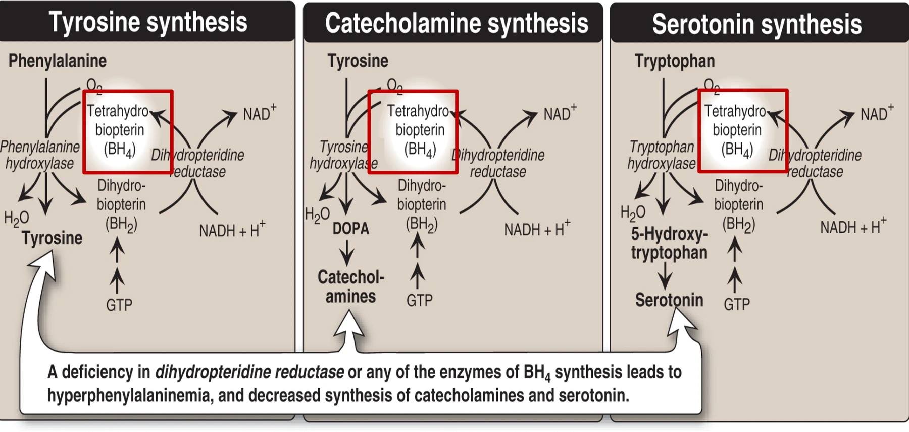
If dihydropteridine reductase, or an enzyme that builds BH4 from GTP, is missing, all three hydroxylases stop together. Phenylalanine rises in the blood (hyperphenylalaninemia) just as in phenylketonuria, although phenylalanine hydroxylase itself is normal Ch 6. And dopamine, norepinephrine, epinephrine and serotonin fall. The missing transmitters cause neurologic damage that a low-phenylalanine diet cannot prevent, because the diet does nothing to bring the transmitters back. Patients are given sapropterin, a synthetic BH4.
1. Tetrahydrobiopterin (BH4) is the cofactor of which group of enzymes?
2. In a hydroxylase reaction, O2 supplies the –OH that goes onto the ring. What does tetrahydrobiopterin (BH4) supply?
3. After each hydroxylation, BH4 (tetrahydrobiopterin) is left as BH2 (dihydrobiopterin). Which enzyme turns BH2 back into BH4?
4. Why does tetrahydrobiopterin (BH4) not count as a vitamin?
5. A child cannot recycle tetrahydrobiopterin (BH4). Why does a low-phenylalanine diet alone not prevent the brain damage?
6. What is sapropterin, the drug given to patients who lack tetrahydrobiopterin (BH4)?
From tyrosine to dopamine, norepinephrine and epinephrine
Dopamine, norepinephrine and epinephrine (adrenaline) are the catecholamines: a catechol is a ring with two –OH groups side by side, and the amine is the amino group on the side chain. They are made from tyrosine, one after the other, in four steps. Only a small share of the body's tyrosine goes this way. Most is built into protein or broken down to fumarate and acetoacetate Ch 4.
- Tyrosine to DOPA (dihydroxyphenylalanine, also written L-DOPA). Tyrosine hydroxylase adds a second –OH to the ring, using O2 and BH4. This is the rate-limiting step: it is the slowest, so it sets how much catecholamine is made.
- DOPA to dopamine. Aromatic amino acid decarboxylase (DOPA decarboxylase) removes the carboxyl group as CO2. It needs PLP.
- Dopamine to norepinephrine. Dopamine β-hydroxylase adds an –OH to the side chain, not to the ring. It needs O2, copper and vitamin C (ascorbate), not BH4.
- Norepinephrine to epinephrine. Phenylethanolamine N-methyltransferase (PNMT) adds a methyl group to the nitrogen, taken from S-adenosylmethionine (SAM) Ch 4.
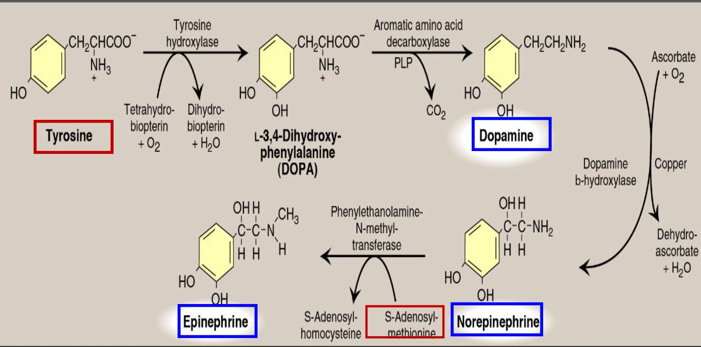
Each cell stops where its enzymes stop. Tyrosine hydroxylase is plentiful in the brain, the sympathetic ganglia and the adrenal medulla, so these are the tissues that make catecholamines. Dopamine neurons have only the first two enzymes. Sympathetic nerves go one step further, to norepinephrine. The adrenal medulla goes on to epinephrine, because PNMT is switched on by cortisol: the blood that reaches the medulla has just passed through the adrenal cortex around it, which makes cortisol.
What they do. In the brain, dopamine and norepinephrine are neurotransmitters (dopamine helps control movement). Outside the brain, norepinephrine and epinephrine are the "fight or flight" hormones. The adrenal medulla releases them in fright, exercise, cold or low blood glucose. They break down glycogen and stored fat for fuel, and they raise the blood pressure and the output of the heart.
1. Which enzyme is the rate-limiting step in making the catecholamines (dopamine, norepinephrine and epinephrine)?
2. Dopamine β-hydroxylase turns dopamine into norepinephrine. What does it need?
3. Which enzyme turns norepinephrine into epinephrine, and where does the added methyl group come from?
4. Why is epinephrine made almost only in the adrenal medulla?
5. A nerve cell has tyrosine hydroxylase and the decarboxylase that follows it, but no dopamine β-hydroxylase. Which transmitter does it release?
6. Parkinson disease is caused by loss of dopamine-making neurons. Why is it treated with L-DOPA (the step before dopamine) and not with dopamine itself?
Switching the catecholamines off: MAO and COMT
Two enzymes inactivate the catecholamines, and each attacks one half of the name.
- Monoamine oxidase (MAO) attacks the amine. It removes the amino group as ammonia and leaves an aldehyde, which is then oxidized to an acid (an oxidative deamination). MAO is found in nerve endings, the gut and the liver.
- Catechol-O-methyltransferase (COMT) attacks the catechol. It puts a methyl group from SAM onto one of the two ring –OH groups.
They can act in either order, and the end product is the same. Dopamine ends as homovanillic acid (HVA). Norepinephrine and epinephrine both end as vanillylmandelic acid (VMA). When COMT acts first, the intermediate is normetanephrine (from norepinephrine) or metanephrine (from epinephrine). HVA and VMA leave in the urine.
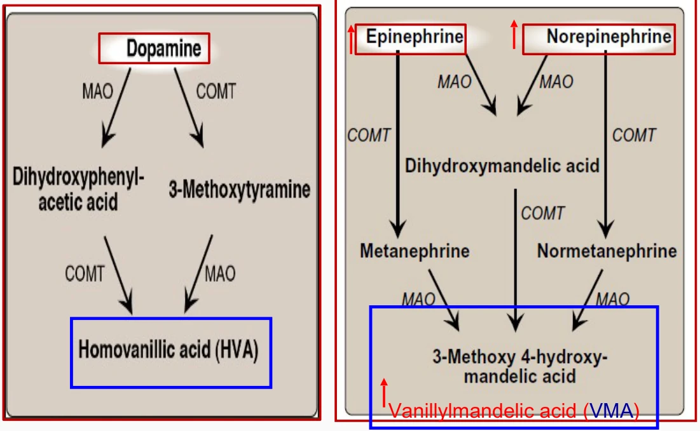
This tumor of the adrenal medulla makes large amounts of catecholamines, which cause attacks of high blood pressure, a pounding heart, headache and sweating. More catecholamine is broken down, so VMA in the urine rises. Measuring it is a test for the tumor.
MAO inhibitors
In a resting nerve ending, some transmitter leaks out of its storage vesicles and MAO destroys it. MAO is a safety valve for norepinephrine, dopamine and serotonin. MAO inhibitors are antidepressants that inactivate MAO, reversibly or irreversibly. The leaked transmitter is then no longer destroyed. It builds up in the nerve ending and spills into the synapse, where it stimulates the norepinephrine and serotonin receptors of the next cell more strongly. The drug does not make the nerve produce more transmitter. It only blocks the breakdown (catabolism).
1. What does monoamine oxidase (MAO) do to a catecholamine?
2. What is the end product of dopamine breakdown that appears in the urine?
3. A pheochromocytoma is a tumor of the adrenal medulla that pours out norepinephrine and epinephrine. Which compound rises in the urine?
4. Catechol-O-methyltransferase acts on epinephrine before monoamine oxidase does. What is the intermediate?
5. What is the normal job of monoamine oxidase inside a resting nerve ending?
6. Monoamine oxidase (MAO) inhibitors are used to treat depression because they do what? discussion question
Tyrosine's other products: melanin and thyroid hormone
Melanin, the dark pigment of skin, hair and eyes, is made in melanocytes (the pigment cells of the epidermis). It absorbs sunlight and so protects the cells underneath. Melanocytes also turn tyrosine into DOPA, but with a different enzyme, tyrosinase, which contains copper and does not need BH4. Tyrosinase then oxidizes the DOPA further, and the product links up into melanin. So DOPA becomes dopamine in a nerve cell and melanin in a melanocyte. Without tyrosinase no melanin is made: albinism Ch 6.
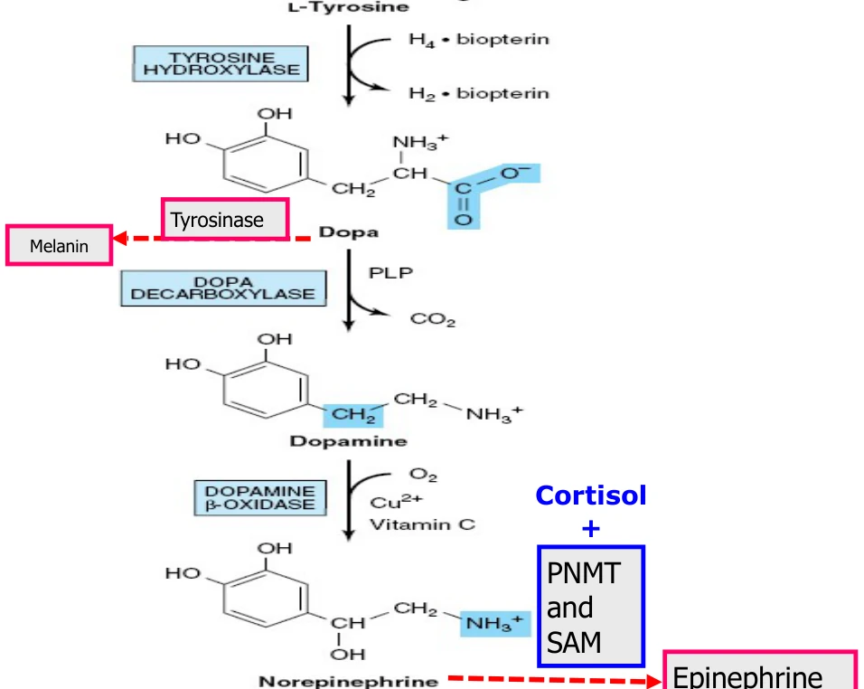
Thyroid hormone is built from tyrosines that are already part of a protein in the thyroid gland. Iodine is attached to their rings, and then two iodinated tyrosines are joined. Four iodine atoms give thyroxine (T4, tetraiodothyronine). Three give triiodothyronine (T3).
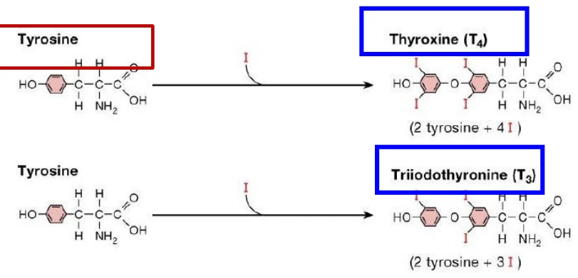
1. Where is melanin made, and what is it for?
2. A person is born without working tyrosinase. What is the result?
3. Tyrosinase and tyrosine hydroxylase both make DOPA (dihydroxyphenylalanine) from tyrosine. How does tyrosinase differ?
4. What is thyroxine (T4) built from?
Tryptophan makes serotonin and melatonin
Serotonin (5-hydroxytryptamine) is made from tryptophan with the same two tools that make dopamine from tyrosine. Tryptophan hydroxylase adds an –OH to the ring, using O2 and BH4, which gives 5-hydroxytryptophan. Aromatic amino acid decarboxylase, the enzyme that also makes dopamine, then removes CO2, using PLP, which gives serotonin.
By far the most serotonin is in the intestinal mucosa. Smaller amounts are in platelets and in the brain, where it is a neurotransmitter. It takes part in the regulation of sleep, body temperature, blood pressure and appetite, in the perception of pain, and in mood and behaviour (it gives a feeling of well-being).
Serotonin has only one –OH on its ring, so it is not a catechol and COMT does not act on it. MAO alone inactivates it. The product, 5-hydroxyindoleacetic acid (5-HIAA), leaves in the urine.
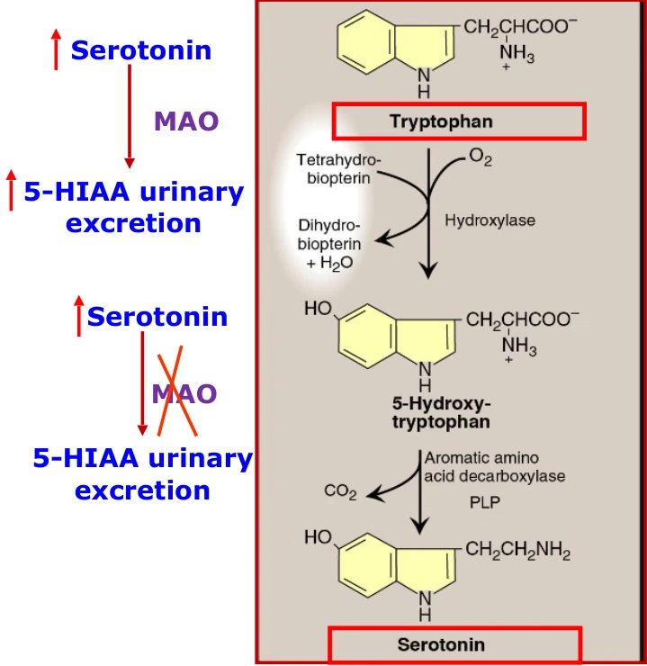
A tumor of serotonin-making cells, most often in the gut, releases very large amounts of serotonin and causes attacks of flushing and diarrhea. MAO converts the extra serotonin to 5-HIAA, so 5-HIAA in the urine rises. Measuring it is the test for the tumor.
Two kinds of antidepressant raise serotonin at the synapse, in different ways. An MAO inhibitor blocks its breakdown, so serotonin rises and less 5-HIAA is formed. A selective serotonin reuptake inhibitor (SSRI) blocks the carrier that pumps released serotonin back into the nerve ending, so it stays in the synapse longer.
Melatonin, the hormone that regulates sleep, is made from serotonin in the pineal gland.
1. Dopamine and norepinephrine are made from tyrosine. Serotonin is made from which amino acid? lecture question
2. Serotonin is made from tryptophan in two steps. Which cofactors do the two steps need, in order?
3. Why does catechol-O-methyltransferase (COMT) not act on serotonin?
4. A carcinoid tumor grows from serotonin-making cells of the gut. Which compound rises in the urine?
5. How does a selective serotonin reuptake inhibitor (SSRI) raise serotonin in the synapse?
6. Which gland turns serotonin into melatonin, and what does melatonin regulate?
Tryptophan also makes niacin
Niacin (vitamin B3, also called nicotinic acid) is the vitamin from which NAD+ and NADP+ are built. The body can make part of its own supply from tryptophan, so the need is met from two sources: niacin in food, and tryptophan from the protein in food. When both run short the result is pellagra, remembered as three Ds: dermatitis (a dark, scaly rash on skin exposed to the sun, often as a collar around the neck), diarrhea and dementia.
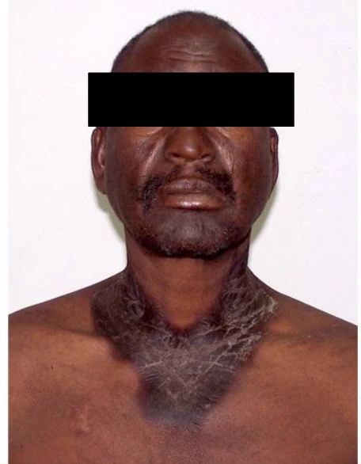
Losing tryptophan does the same. In Hartnup disease the carrier that absorbs tryptophan and the other neutral amino acids from the gut, and reabsorbs them in the kidney, is defective Ch 1. Too little niacin is made, and the pellagra-like rash and neurologic signs improve when niacin is given.
1. The body can make part of its niacin (vitamin B3) from which amino acid?
2. What does the cell build from niacin?
3. Which three findings make up pellagra, the disease of niacin deficiency?
4. In Hartnup disease the carrier for neutral amino acids in the gut and kidney is defective. Why do these patients get a pellagra-like rash?
Nitric oxide, from arginine
Nitric oxide (NO) is a gas and one of the body's smallest signal molecules. Nitric oxide synthase (NOS) makes it from a nitrogen of arginine's side chain and an oxygen atom of O2. What is left of the arginine is citrulline. Like the ring hydroxylases, NOS needs BH4.
Arginine + O2 + NADPH → NO + citrulline + NADP+
The best-known job of NO is to relax blood vessels.
- The endothelial cells that line a vessel contain a NOS that is always present (the constitutive form, cNOS). It is switched on when Ca2+ rises in the cell. Faster blood flow raises Ca2+, and so do vasodilators that bind a receptor on the cell.
- NO is small and uncharged, so it diffuses straight through membranes into the smooth muscle cells around the vessel.
- There it switches on guanylyl cyclase, which makes cyclic GMP (cGMP) from GTP.
- cGMP makes the muscle relax. The vessel widens and the blood pressure falls.
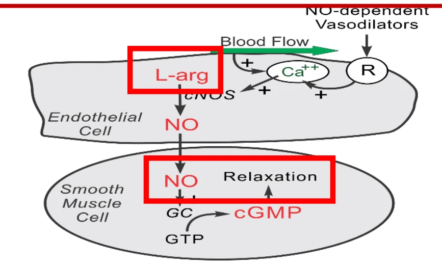
This is why NO was first known as the endothelium-derived relaxing factor. It lasts only a few seconds, so it acts only next to where it is made.
1. Nitric oxide synthase makes nitric oxide from arginine. What is the other product?
2. Which cofactor does nitric oxide synthase share with the phenylalanine, tyrosine and tryptophan hydroxylases?
3. What switches on the nitric oxide synthase of endothelial cells?
4. Nitric oxide is made in the endothelial cell but acts inside the neighbouring smooth muscle cell. How does it get there?
5. How does nitric oxide relax the smooth muscle of a blood vessel?
Glutathione, the cell's antioxidant
Glutathione is a peptide of three amino acids: glutamate, cysteine and glycine. Its working part is the –SH group of the cysteine, so it is written G–SH. Its job is to destroy hydrogen peroxide (H2O2) and other reactive oxygen compounds, which form as by-products of using oxygen and damage membranes, proteins and DNA. It works in a cycle of two enzymes.
- Glutathione peroxidase, which contains selenium, lets two G–SH give their hydrogens to H2O2, which becomes water. The two glutathiones are left joined through their sulfur atoms: G–S–S–G, oxidized glutathione, which cannot do the job again.
- Glutathione reductase, which contains FAD, splits G–S–S–G back into two G–SH with hydrogens from NADPH.
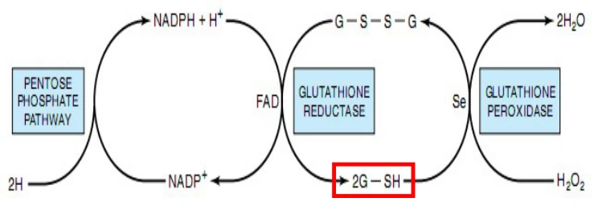
The NADPH comes from the pentose phosphate pathway, so the cell's defence against oxidants is only as good as its supply of NADPH.
1. Glutathione is a small peptide of which three amino acids?
2. Which enzyme uses glutathione to destroy hydrogen peroxide (H2O2), and which mineral does it contain?
3. After two glutathione molecules have destroyed one molecule of hydrogen peroxide, what state are they in?
4. What supplies the hydrogens that turn used (oxidized) glutathione back into its working form?
Creatine and creatinine
A working muscle can use ATP faster than it makes it. To cover the gap it stores ready-to-use phosphate on a small carrier, creatine. Creatine is made from three amino acids, in two organs.
- Kidney. An amidinotransferase moves the amidino group (the nitrogen-rich end of the side chain) of arginine onto glycine. This gives guanidinoacetate and leaves ornithine.
- Liver. A methyltransferase adds a methyl group from SAM, which is made from methionine. This gives creatine, which travels in the blood to muscle.
In muscle, creatine kinase moves a phosphate from ATP onto creatine, and the reaction runs both ways:
Creatine + ATP ⇌ creatine phosphate + ADP
At rest ATP is plentiful, so the store of creatine phosphate fills. When the muscle contracts hard the reaction reverses: creatine phosphate hands its phosphate to ADP and remakes ATP at once. This keeps ATP steady for the first few minutes of intense contraction.
Creatinine. Every day a small, constant fraction of the creatine and creatine phosphate closes into a ring, creatinine, with no enzyme involved. Creatine loses a molecule of water as it closes (creatinine is the anhydride of creatine), and creatine phosphate loses its phosphate. Creatinine has no use and is excreted in the urine.
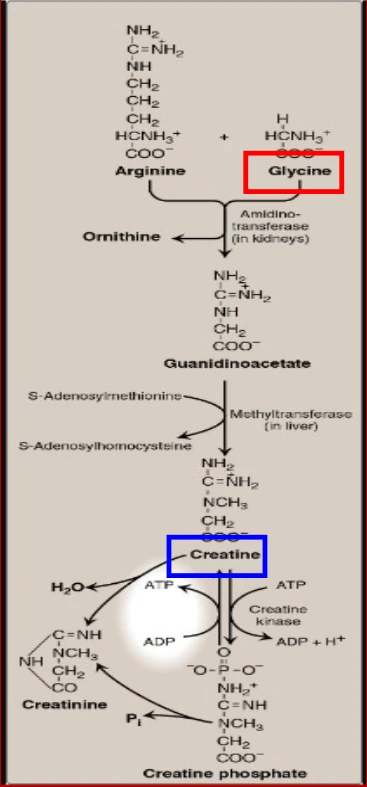
- Creatinine output reflects muscle mass. The amount made each day is proportional to the body's creatine phosphate, nearly all of which is in muscle. When muscle is lost, as in paralysis or muscular dystrophy, the creatinine in the urine falls.
- Blood creatinine reflects kidney function. Creatinine is made at a constant rate and removed by filtration in the kidney. When the glomerular filtration rate (GFR) falls it is removed more slowly, so its blood level rises. This makes creatinine a marker of GFR and a sensitive sign of kidney failure.
1. Creatine is built from which three amino acids?
2. Creatine is made in two steps in two organs. Which statement is correct?
3. What is creatine phosphate for?
4. How is creatinine formed from creatine and creatine phosphate?
5. A man loses much of his muscle after a spinal cord injury. His kidneys are healthy. What happens to the amount of creatinine he excretes each day?
6. Why does a rising blood creatinine point to a falling glomerular filtration rate (GFR)?
Glycine's other jobs: heme, collagen, purines and bile salts
Glycine is the smallest amino acid (its side chain is one hydrogen atom), and it is built into four more products.
Heme. The ring of heme is built from glycine and succinyl CoA. The first step joins them into δ-aminolevulinic acid (ALA), releasing CoA and CO2. The enzyme, ALA synthase, needs PLP and is the rate-limiting step. Its form in all tissues (ALAS1) is inhibited by heme, the end product. Its form in developing red blood cells (ALAS2) is switched on by iron inside the cell, so the ring is made when there is iron to put into it.
Collagen. Every third amino acid of a collagen chain is glycine: Gly–X–Y, over and over. Three chains wind into a tight triple helix, and every third position faces its crowded centre, where only glycine's hydrogen fits.
Purines. A whole glycine molecule is built into the purine ring, as carbon 4, carbon 5 and nitrogen 7 Ch 7.
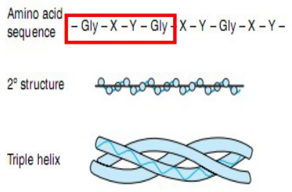
Bile salts. Before it secretes bile acids, the liver attaches glycine (or taurine) to them: cholic acid becomes glycocholic acid or taurocholic acid. This makes them more soluble in water and better detergents for fat.
1. The first step of heme synthesis joins glycine to which molecule?
2. The first enzyme of heme synthesis has a form found in all tissues (ALA synthase 1). What turns this form down?
3. Why is every third amino acid of a collagen chain glycine?
4. Before bile acids are secreted, the liver attaches which molecules to them?
Which amino acid makes which product
The products sorted by the amino acid they start from. Where a product needs more than one amino acid, the partners are named.
| Amino acid | What is made from it |
|---|---|
| Tyrosine | Dopamine, norepinephrine and epinephrine (the methyl group of epinephrine comes from methionine, as SAM). Melanin. The thyroid hormones T3 and T4. |
| Tryptophan | Serotonin, melatonin and niacin |
| Histidine | Histamine |
| Glutamate | GABA. Glutathione, together with cysteine and glycine. |
| Arginine | Nitric oxide. Creatine, together with glycine and methionine. |
| Glycine | Heme (with succinyl CoA), collagen, purines (with glutamine and aspartate), creatine, glutathione and bile salts |
| Cysteine | Glutathione: it supplies the working –SH group |
| Methionine | As SAM, the methyl group of epinephrine and of creatine |
| Aspartate and glutamine | Pyrimidines Ch 8. With glycine, purines Ch 7. |
1. Which amino acid is used to build creatine, glutathione, heme and the purine ring?
2. Which list contains only products made from tyrosine?
3. Arginine is the starting material for which two products?
4. Methionine, in the form of S-adenosylmethionine, supplies a methyl group to which two products?
Inborn errors of amino acid metabolism
An inborn error of amino acid metabolism is one missing enzyme on the route that breaks down or converts one amino acid. Every disease here can be worked out from the same three questions: what piles up before the block, what runs short after it, and where the pile overflows to.
What one missing enzyme does
Think of a pathway as a production line: one enzyme turns A into B, and the next turns B into C. When a faulty gene leaves one enzyme missing or weak, the same three things always happen.
- What comes before the block piles up. A builds up in the cells, then in the blood, then in the urine. If A is harmful in large amounts, this causes most of the damage.
- What comes after the block runs short. B is no longer made, and neither is anything made from B. If the body used to make B for itself, B must now come from food: a nonessential substance has become essential.
- The pile overflows into side routes. Minor reactions now carry a lot of A and make unusual products, which leave in the urine and often give the disease its smell, its colour or its name.
Treatment follows from the same list. Eat less of the amino acid that cannot be handled, and supply the product that is missing. If the faulty enzyme holds its vitamin-derived cofactor only weakly, a large dose of the vitamin can restore some activity: these are the vitamin-responsive forms. Sometimes a drug blocks an earlier step, so that a poisonous intermediate is never made.
A missing cofactor can copy a missing enzyme. If the cofactor cannot be made or recycled, the same step fails, and so does every other enzyme that uses that cofactor.
Nearly all of these disorders are autosomal recessive: the child received one faulty copy of the gene from each healthy carrier parent. Each one is rare.
1. An enzyme that turns substance X into substance Y is missing. What happens to the levels of X and Y?
2. In some inborn errors a large dose of one vitamin restores part of the enzyme activity. What is the usual reason?
3. Why does a defect in making or recycling a cofactor usually cause a wider disease than a defect in one enzyme?
4. How are nearly all inborn errors of amino acid metabolism inherited?
5. Which inborn error of amino acid metabolism is met most often in practice?
Phenylketonuria: phenylalanine cannot become tyrosine
Phenylalanine (Phe) is an essential amino acid. Only a small part of what we eat is needed to build protein. The rest has to be disposed of, and the first step of its disposal is to turn it into tyrosine (Tyr). The liver enzyme phenylalanine hydroxylase (PAH) does this by adding one hydroxyl group (OH) to the ring of phenylalanine. It needs O2 and the cofactor tetrahydrobiopterin (BH4). The reaction uses the BH4 up: it comes out as dihydrobiopterin (BH2) and must be recycled back to BH4 before it can work again Ch 5.
PAH is the slowest, rate-limiting step of phenylalanine breakdown. And this one step does two jobs: it is the only exit for surplus phenylalanine, and it is the body's own source of tyrosine.
Classical phenylketonuria (PKU) is a deficiency of the PAH enzyme itself: it is missing or has very little activity left. PKU is the most common inborn error of amino acid metabolism met in practice, about 1 in 15,000 live births. Now ask the three questions.
What piles up: phenylalanine. Normal blood phenylalanine is about 0.05 mM (50 µmol/L) and never more than 0.12 mM. With classical PKU it is above 1 mM, usually 1 to 2.5 mM. That is 20 to 50 times normal.
What runs short: tyrosine. It can no longer be made from phenylalanine, so all of it must come from food: tyrosine has become an essential amino acid. The things made from tyrosine run short with it, namely the skin pigment melanin and the catecholamines (dopamine, norepinephrine and epinephrine).
Where the pile overflows: the phenylketones. A side route that is normally a trickle becomes the main route. An aminotransferase moves the amino group of phenylalanine onto pyruvate, using pyridoxal phosphate (PLP), the active form of vitamin B6 Ch 2. Pyruvate becomes alanine, and what is left of phenylalanine is phenylpyruvate. Phenylpyruvate is a ketone that carries a phenyl ring, a "phenylketone", and it leaves in the urine: phenyl-keton-uria. Some phenylpyruvate is turned into phenylacetate (by losing CO2) and some into phenyllactate. A little phenylalanine also loses its own CO2 and becomes phenylethylamine.
1. Classical phenylketonuria (PKU) causes delayed development, intellectual disability and neurological problems. Which enzyme is deficient? lecture question
2. Besides O2, what does phenylalanine hydroxylase need to turn phenylalanine into tyrosine?
3. Which amino acid becomes essential in a person with phenylketonuria?
4. In phenylketonuria, how is phenylpyruvate made from the surplus phenylalanine?
5. Where does the name phenylketonuria come from?
6. Normal blood phenylalanine is about 0.05 mM. What level is typical of classical phenylketonuria?
Why each finding of untreated PKU happens
A baby with PKU is normal at birth. Before birth, the mother's liver removed the baby's surplus phenylalanine through the placenta. After birth every feed adds phenylalanine and none can leave, so the level climbs over the first weeks and the damage shows over the following months.
The brain
Amino acids cannot simply diffuse from the blood into the brain. They are carried in by transporters. Phenylalanine shares one transporter with the other large neutral amino acids: tyrosine, tryptophan and the three branched-chain amino acids (valine, leucine, isoleucine). The transporter binds phenylalanine very tightly. When blood phenylalanine is 20 to 50 times normal, it fills nearly every transporter and the others cannot get in. The brain is flooded with phenylalanine and starved of the rest. Three things follow.
- Proteins and myelin cannot be built properly, in the very months when the brain is growing fastest.
- Neurotransmitters fall. Tyrosine is short twice over (it is not being made, and it cannot get in), so the catecholamines made from it are depleted. Tryptophan, the starting material for serotonin, is kept out too.
- Phenylalanine and its products are themselves toxic to the brain. Phenylpyruvate, phenylacetate and phenyllactate build up there and, among other effects, inhibit the making of the neurotransmitter acetylcholine.
The result is slow development, then loss of skills the baby had already gained, then seizures and permanent intellectual disability.
Skin, hair and smell
Melanin is made from tyrosine. With too little tyrosine, too little melanin is made, so the child has fair skin and light hair, lighter than the rest of the family. This is hypopigmentation.
Phenylacetate, phenylpyruvate and phenyllactate leave in the urine and the sweat. They give the urine and the body a musty, "mousy" smell.
1. A 9-month-old has seizures, has lost developmental milestones, and has a musty smell of the body and urine. Which metabolite builds up and explains the smell? discussion question
2. Why does a child with untreated classical phenylketonuria have fair skin and light hair? discussion question
3. In untreated phenylketonuria, why does the brain run short of tyrosine, tryptophan and the branched-chain amino acids? discussion question
4. Why is a baby with phenylketonuria normal at birth?
5. In untreated phenylketonuria tyrosine is short. Which neurotransmitters are depleted as a direct result?
6. Phenylalanine and its products build up in the brain in phenylketonuria. The making of which neurotransmitter do they inhibit?
When the cofactor is missing instead: the BH4 type
Hyperphenylalaninemia means a high blood phenylalanine from any cause. There are two groups. Classical PKU is a defect of the PAH enzyme. In non-classical (secondary) PKU the PAH enzyme is normal, but it has no cofactor to work with. BH4 can be missing in two ways:
- Synthesis: one of the enzymes that make BH4 is missing, so none is produced.
- Recycling: the enzyme dihydropteridine reductase (also called dihydrobiopterin reductase), which turns used BH2 back into BH4, is missing. BH4 is made, used once, and then stays stuck as BH2.
The BH4 type is the more serious disease, because BH4 serves three hydroxylases, not one Ch 5. PAH turns phenylalanine into tyrosine. Tyrosine hydroxylase turns tyrosine into DOPA (dihydroxyphenylalanine), the first step toward dopamine, norepinephrine and epinephrine. Tryptophan hydroxylase turns tryptophan into 5-hydroxytryptophan, the first step toward serotonin. Without BH4 all three stop together.
So phenylalanine rises just as it does when PAH is missing. But in addition the brain cannot make catecholamines or serotonin, even when it has plenty of tyrosine and tryptophan. This is why a low-phenylalanine diet alone does not work. The diet brings phenylalanine down, but the neurotransmitters still cannot be made, and the neurological problems continue.
The treatment therefore has three parts. Restrict phenylalanine. Replace the cofactor with sapropterin, a manufactured BH4. And give L-DOPA and 5-hydroxytryptophan: these are the products of the two blocked neurotransmitter steps, so they enter each pathway just below its block, and the cell can finish them into dopamine and serotonin.
Blood phenylalanine is high in both types, so they are told apart by testing the cofactor system. Dihydropteridine reductase activity is measured in red blood cells: this tests recycling. BH4 and BH2 are measured in the urine: this shows whether the cofactor is being made. If both tests are normal, the cofactor system is intact and the fault must be in PAH itself.
1. Non-classical (secondary) phenylketonuria is caused by a defect in what?
2. Why does a low-phenylalanine diet alone fail to protect the brain when tetrahydrobiopterin (BH4) is missing?
3. A child with a defect in tetrahydrobiopterin (BH4) is on a low-phenylalanine diet and takes BH4. What else is given?
4. A child with high blood phenylalanine has very low dihydropteridine reductase activity in the red blood cells. What does this show?
Finding PKU in the first days of life
A newborn with PKU shows nothing on examination, and the brain damage can only be prevented if treatment starts in the first days of life. So the disease has to be looked for in every baby. Newborn screening for PKU is mandatory.
A few drops of blood are taken from the baby's heel, after a day or two of milk feeds, because right at birth the level can still be normal. The laboratory uses tandem mass spectrometry, a method that measures about 50 different metabolic intermediates in that one small sample, so many inborn errors are screened at once.
The pattern that suggests PKU is a high phenylalanine together with a low or low-normal tyrosine. Both halves come from the same block, because PAH is what turns phenylalanine into tyrosine.
The diagnosis is confirmed by measuring the blood phenylalanine exactly. It is not confirmed by measuring the enzyme, because PAH is made only in the liver. Blood cells contain none, so a blood sample cannot show whether PAH works. The cofactor tests then separate classical PKU from the BH4 type.
1. Which laboratory method is used on a newborn's blood spot to screen for phenylketonuria and many other inborn errors at once? discussion question
2. Which newborn screening result suggests phenylketonuria? discussion question
3. Why is phenylketonuria not confirmed by measuring phenylalanine hydroxylase activity in a blood sample? discussion question
4. By what age must the low-phenylalanine diet begin to prevent brain damage in phenylketonuria?
Treating PKU, and why the diet is for life
The treatment is the block logic put into practice: take in less of what piles up, and supply what is missing.
- A diet low in phenylalanine. All natural protein contains phenylalanine, so the ordinary protein foods are avoided: all meat, milk, cheese, nuts, beans, soybeans and chocolate. Most of the day's protein comes instead from a medical formula that has no phenylalanine: a mixture of the other amino acids, or glycomacropeptide (a protein from cheese whey that contains almost no phenylalanine) with amino acids added.
- Low, but not zero. Phenylalanine is essential, and the child needs some to build protein and grow. A measured small amount of natural protein is kept. An infant with PKU takes about 25% of feeds as breast milk and about 75% as phenylalanine-free formula. Blood phenylalanine is measured regularly and the diet adjusted to hold it near normal.
- No aspartame. This artificial sweetener is built from aspartate and phenylalanine, and digestion releases the phenylalanine.
- Added tyrosine, tryptophan and branched-chain amino acids. Tyrosine is now essential. And all of these large neutral amino acids compete with phenylalanine for the transporter into the brain, so giving more of them helps them get in.
- Added long-chain polyunsaturated fatty acids (fish oil) and α-linolenic acid. The diet removes the foods that normally supply these essential fatty acids. Adding them prevents essential fatty acid deficiency, and motor skills improve.
Two drugs can be added to the diet. Sapropterin is manufactured BH4. Extra cofactor makes whatever PAH the patient still has work harder, so it helps when some PAH activity is left. Pegvaliase is an injected enzyme, phenylalanine ammonia lyase, that breaks phenylalanine down in the blood, the job the patient's own PAH cannot do. It is approved for adults.
Timing. The diet must begin by 7 to 10 days of age, because brain damage that has already happened is permanent. A child treated from birth develops normally. A child found late keeps the disability already acquired, and the diet only prevents more. The diet is kept up for life: a high phenylalanine goes on harming the brain at any age, and thinking deteriorates in adults who stop.
A woman with PKU who is not keeping to her diet has a high blood phenylalanine. If she becomes pregnant, that phenylalanine crosses the placenta and damages the developing baby, even though the baby does not have PKU. The baby is born with a small head (microcephaly), intellectual disability and congenital heart defects. The damage is done in the first weeks of pregnancy, when the organs form. So control of her blood phenylalanine must start before conception and continue through the whole pregnancy.
1. Which plan is recommended for a child with classical phenylketonuria? discussion question
2. Why is phenylalanine restricted but never removed completely from the diet in phenylketonuria?
3. Why must a person with phenylketonuria avoid the sweetener aspartame?
4. Which drug is paired with the right action in phenylketonuria?
5. Why are fish oil and α-linolenic acid added to the diet in phenylketonuria?
6. To prevent maternal PKU (phenylketonuria) syndrome, when must a woman with PKU bring her blood phenylalanine under control?
A worked case: an 8-month-old with a first seizure
A first seizure in an infant has many possible causes: infection of the brain (meningitis, encephalitis), fever, head injury, a structural problem (a malformation, a stroke, a tumor), poisoning, or a metabolic cause such as low blood glucose, an abnormal Na+ or Ca2+, or an inborn error of metabolism. The list is narrowed in order.
The story. An 8-month-old girl has a seizure. She was born in a remote town in Mexico. From 3 to 4 months of age she developed a glazed look, babbled less and slowly lost the milestones she had reached, and at 8 months she cannot sit up on her own. She has fair skin and hair and musty-smelling urine.
The tests. Blood count, electrolytes, blood glucose, urine organic acids, spinal fluid and the brain-wave recording (EEG) are all normal. Serum phenylalanine is 1,300 µmol/L. Dihydropteridine reductase activity in her red blood cells is normal, and so are BH4 and BH2 in her urine.
Narrow the list. No fever and a normal spinal fluid rule out infection, nothing suggests an injury or a poison, and normal glucose and electrolytes remove the common metabolic causes. A baby who was well and then slowly lost skills over months has a slowly accumulating toxin, which points to an inborn error of metabolism.
Name it. Fair colouring with a musty smell is the picture of PKU, and the phenylalanine proves it: 1,300 µmol/L is 1.3 mM, 26 times the normal 0.05 mM and above the 1 mM mark of classical PKU. Normal reductase activity means BH4 is being recycled, and normal BH4 and BH2 in the urine mean it is being made. So the defect is in PAH itself: classical PKU.
Why now, and what next. She was never screened as a newborn, so her phenylalanine has been climbing for 8 months. She starts a low-phenylalanine diet and stays on it for life, with added tyrosine and the other large neutral amino acids. This stops further harm. It cannot undo the harm already done, which is the whole argument for screening at birth.
1. An 8-month-old has seizures, lost milestones, fair skin and musty urine. Serum phenylalanine is 1,300 µmol/L. Red-cell dihydropteridine reductase and urine BH4 and BH2 are normal. What is the diagnosis? discussion question
2. An infant with untreated phenylketonuria was born in a remote town outside the United States. Why does the birthplace matter? discussion question
3. An infant with a first seizure has no fever, normal spinal fluid, normal glucose and electrolytes, and a slow loss of milestones over several months. Which group of causes fits best? discussion question
4. A serum phenylalanine of 1,300 µmol/L is how many times the normal level of 0.05 mM?
5. An infant with phenylketonuria is first put on a low-phenylalanine diet at 8 months of age. What should the parents expect?
Tyrosine breakdown and the three tyrosinemias
Surplus tyrosine is broken down in the liver in five steps. The end products are fumarate, which can be made into glucose, and acetoacetate, a ketone body.
- Tyrosine aminotransferase moves the amino group of tyrosine onto α-ketoglutarate (which becomes glutamate). This leaves p-hydroxyphenylpyruvate.
- p-Hydroxyphenylpyruvate oxidase uses O2 and releases CO2, making homogentisate.
- Homogentisate oxidase uses O2 to open the ring, making maleylacetoacetate.
- Maleylacetoacetate isomerase rearranges it into fumarylacetoacetate.
- Fumarylacetoacetate hydrolase splits it with water into fumarate and acetoacetate.
A tyrosinemia is a block in this pathway that raises tyrosine in the blood. There are three, and where the block sits decides how dangerous it is.
Type I: the last step, and the dangerous one
In tyrosinemia type I, fumarylacetoacetate hydrolase (step 5) is missing. The two intermediates just above the block, fumarylacetoacetate and maleylacetoacetate, pile up. The liver turns them into a side product, succinylacetone, and succinylacetone is the poison. It is toxic to the liver, where this pathway runs. It inhibits the citric acid (TCA) cycle and it inhibits heme synthesis. It also damages the kidney tubules, so substances that the tubules should reabsorb are lost in the urine.
The treatment has three parts.
- A diet low in phenylalanine and tyrosine, so that less enters the pathway. Phenylalanine is restricted too because it becomes tyrosine.
- Nitisinone. This drug inhibits p-hydroxyphenylpyruvate oxidase, step 2. With the pathway closed near its top, almost nothing flows down to step 5, so fumarylacetoacetate and succinylacetone are never formed. The drug swaps a dangerous block for a mild one. Tyrosine now rises behind the new block, which is why the diet is still needed.
- Liver transplant in advanced cases. It replaces the damaged organ, and the new liver has the enzyme.
Types II and III: blocks near the top
In type II, tyrosine aminotransferase (step 1) is missing. Tyrosine cannot enter the pathway at all, so its level becomes very high. Tyrosine dissolves poorly and forms crystals in the cornea and the skin. The child has photophobia (light hurts the eyes) and painful skin lesions on the palms and soles. Because it affects the eye and the skin, it is also called oculocutaneous tyrosinemia.
In type III, p-hydroxyphenylpyruvate oxidase (step 2) is missing. This is the same enzyme that nitisinone inhibits. The disease is mild: its mark is intermittent ataxia, episodes of poor muscle coordination.
The liver is spared in types II and III. Both blocks lie above fumarylacetoacetate, so no succinylacetone forms.
1. Tyrosinemia type I damages the liver and the kidneys. Which tyrosine metabolite is the liver toxin? lecture question
2. Tyrosinemia type I is a deficiency of which enzyme?
3. Nitisinone treats tyrosinemia type I by inhibiting which enzyme?
4. Why is a diet low in phenylalanine and tyrosine still needed while a patient takes nitisinone?
5. A child has pain in the eyes in bright light and painful lesions on the palms and soles. Which disorder is this?
6. Why is the liver spared in tyrosinemia types II and III?
Alkaptonuria: urine that turns black in air
In alkaptonuria, homogentisate oxidase (step 3 of tyrosine breakdown) is missing. Homogentisate, also called homogentisic acid, cannot have its ring opened. It piles up and leaves in the urine: homogentisic aciduria.
Fresh urine looks normal. Left standing in air and light, the homogentisate in it reacts with oxygen on its own (auto-oxidation), and the oxidized molecules then join into long chains (polymerization). The polymer is a brownish-black pigment. Darkening of the urine on standing is the most striking sign of the disease. In an infant the first clue is dark staining of the diapers.
The same pigment slowly forms inside the body and settles in cartilage and other connective tissue. This deposit is called ochronosis. It takes decades to matter, so most patients have no symptoms until about age 40. Then dark spots show in the whites of the eyes, the cartilage of the ears darkens, and the pigmented cartilage of the joints breaks down. The large joints and the spine become painful and stiff. The arthritis can be severely crippling, but the disease is not life-threatening.
A diet low in phenylalanine and tyrosine sends less down the pathway, so less homogentisate is made and less pigment is deposited.
1. A 40-year-old man has years of pain and stiffness in both shoulders and both knees, brown spots on the whites of his eyes and darkening of his ear cartilage. The breakdown of which amino acid is defective? discussion question
2. Alkaptonuria is a deficiency of which enzyme?
3. Why does the urine in alkaptonuria look normal when fresh and turn black after standing?
4. What is ochronosis?
5. What is the usual course of alkaptonuria?
Albinism: plenty of tyrosine, but no melanin
Melanin, the pigment of skin, hair and eyes, is made from tyrosine inside the pigment cells, the melanocytes. One enzyme, tyrosinase, does the work. It turns tyrosine into DOPA and DOPA into dopaquinone, and it acts again later as dopaquinone is built into the melanin polymer. Tyrosinase contains copper (Cu2+) and uses O2. It does not need BH4.
When tyrosinase is deficient, melanin is partly or completely absent from the skin, the hair and the eyes. This is oculocutaneous albinism. Each finding follows from the missing pigment.
- White hair and very pale skin: no pigment is deposited.
- Vision defects and photophobia: pigment in the eye normally absorbs stray light. Without it, light floods in and bright light is painful.
- A high risk of skin cancer: melanin is the skin's shield against the ultraviolet part of sunlight.
Two different enzymes make DOPA from tyrosine. They sit in different cells and feed different pathways.
| Tyrosinase | Tyrosine hydroxylase | |
|---|---|---|
| Where | Melanocytes | Nerve cells and the adrenal medulla |
| Needs | Copper | BH4 |
| The DOPA goes on to | Melanin | Dopamine, norepinephrine, epinephrine |
| Fails in | Albinism | BH4-type PKU |
This also separates the two causes of pale skin and hair. In PKU the enzyme tyrosinase is normal but its starting material, tyrosine, is short. In albinism tyrosine is plentiful but the enzyme is missing, so giving tyrosine changes nothing.
1. Tyrosinase, the enzyme that makes melanin in melanocytes, contains which metal?
2. A child has white hair, very pale skin and pain in the eyes in bright light. Blood phenylalanine and tyrosine are normal. Which enzyme is deficient?
3. Phenylketonuria and albinism both give pale skin and hair. What is the difference?
4. Why do people with albinism have a high risk of skin cancer?
Branched-chain amino acids and maple syrup urine disease
Valine, leucine and isoleucine are the branched-chain amino acids (BCAAs), named for their branched carbon side chains. All three are essential, and all three start their breakdown with the same two steps.
- Transamination. One enzyme, the branched-chain aminotransferase, removes the amino group from each of them. What is left of each amino acid is its α-keto acid.
- Oxidative decarboxylation. One enzyme complex, the branched-chain α-keto acid dehydrogenase (BCKD), acts on all three keto acids. It removes the carboxyl group as CO2, attaches what remains to CoA, and passes electrons to NAD+. The products are acyl-CoA compounds, which continue down separate routes.
BCKD is built like pyruvate dehydrogenase and α-ketoglutarate dehydrogenase: three enzymes (E1, E2 and E3) and the same five cofactors, four of them made from B vitamins: thiamine pyrophosphate (TPP) from vitamin B1, FAD from vitamin B2, NAD+ from vitamin B3, CoA from vitamin B5, and lipoic acid.
Maple syrup urine disease (MSUD) is a deficiency of BCKD. Step 1 still works and step 2 does not, so the three keto acids pile up, and the three amino acids pile up behind them. Both spill into the urine and give it the smell of burnt maple sugar. The keto acids are acids, so the blood becomes acidic: ketoacidosis. The high levels are toxic to the brain and cause intellectual disability. Untreated, the lifespan is short.
Treatment is to restrict leucine, isoleucine and valine in the diet. Because they are essential, they are limited and not removed. Some milder cases improve with large doses of thiamine. Thiamine is the source of TPP, the cofactor of the E1 enzyme. In these patients the faulty complex binds TPP weakly, and flooding it with cofactor restores some BCKD activity.
Insulin switches on the making of BCKD. In type 2 diabetes the tissues respond poorly to insulin (insulin resistance), so less BCKD is made, the BCAAs are broken down more slowly, and their plasma levels rise.
1. Some milder forms of maple syrup urine disease improve with large doses of thiamine (vitamin B1). Restoring the activity of which enzyme explains this? lecture question
2. Which step of branched-chain amino acid breakdown fails in maple syrup urine disease?
3. Which amino acids are restricted in the diet in maple syrup urine disease?
4. Which set of cofactors does the branched-chain α-keto acid dehydrogenase complex need?
5. Why do plasma branched-chain amino acids rise in type 2 diabetes?
Methylmalonic acidemia and propionic acidemia
Four amino acids (valine, isoleucine, methionine and threonine), the fatty acids with an odd number of carbons, and the side chain of cholesterol all break down to the same three-carbon compound, propionyl CoA. Two steps then carry it into the citric acid cycle Ch 4. First, propionyl CoA carboxylase, which needs biotin, adds a carbon to make methylmalonyl CoA. Second, methylmalonyl CoA mutase rearranges methylmalonyl CoA into succinyl CoA. A mutase moves a group from one carbon to its neighbour inside the same molecule, so it belongs to the enzyme group called isomerases. This mutase needs adenosylcobalamin, one of the two working forms of vitamin B12.
In methylmalonic acidemia the second step fails. In the isolated form (type I) there are two ways for that to happen:
- The enzyme is defective. The mutase has no activity (written mut0) or reduced activity (mut−).
- The cofactor is missing. The mutase is normal, but the cell cannot make adenosylcobalamin from vitamin B12. The two steps that make it are named cblA and cblB ("cbl" stands for cobalamin).
Both are autosomal recessive, and both give the same illness. A newborn becomes sick in the first days of life, as soon as protein feeding begins. Each finding has its mechanism.
| Finding | Mechanism |
|---|---|
| Methylmalonic acid ↑ in blood and urine | Methylmalonyl CoA cannot move on, and is released as the free acid |
| Propionic acid and related acids ↑ | Propionyl CoA backs up behind methylmalonyl CoA and overflows into side products |
| Metabolic acidosis with a large anion gap | These organic acids pour into the blood. Routine tests do not measure their negative ions, so they appear as a large "gap" of unmeasured negative charge |
| Low blood glucose | These carbons normally reach succinyl CoA and can be made into glucose. That supply is cut off |
| Ketosis (with the acids: ketoacidosis) | A sick baby with low glucose burns fat, which makes ketone bodies |
| Ammonia ↑ (secondary hyperammonemia) | The backed-up propionyl CoA inhibits the enzyme that makes N-acetylglutamate (NAG). Without NAG, carbamoyl phosphate synthetase I (CPS I) stays switched off, so the urea cycle cannot start Ch 3 |
| Vomiting, lethargy, floppy muscles (hypotonia), altered mental state, enlarged liver | The effects of acidosis and high ammonia on the brain and the liver |
Propionic acidemia is the block one step earlier: propionyl CoA carboxylase, the biotin enzyme, is missing. Propionyl CoA and its side products pile up and the illness looks the same. The difference is in the laboratory. Methylmalonic acid is not raised, because methylmalonyl CoA is never made.
Both are treated by limiting protein, so that less of the four precursor amino acids enters the pathway. A patient whose defect is in making the cofactor may respond to large doses of vitamin B12.
1. A newborn has lethargy, vomiting and floppy muscles, with a metabolic acidosis, a large anion gap, ketosis and low glucose. Methylmalonic acid is very high in plasma and urine. Which kind of enzyme catalyses the defective step? discussion question
2. Why does ammonia rise in methylmalonic acidemia?
3. A newborn has acidosis, ketosis and high ammonia. Propionic acid is high, but methylmalonic acid is not raised. Which enzyme is missing?
4. A child has isolated (type I) methylmalonic acidemia, but the mutase enzyme itself is normal. What is defective?
5. Why is blood glucose low in methylmalonic acidemia?
Homocystinuria: homocysteine with nowhere to go
Homocysteine is what is left of methionine after it has given away its methyl group. It normally leaves by one of two routes Ch 4. It can be turned back into methionine by methionine synthase, which needs vitamin B12 (as methylcobalamin) and a methyl group from folate (as methyl-tetrahydrofolate). Or it can go on to cysteine: cystathionine β-synthase joins it to serine to make cystathionine, which is then split to give cysteine. Both of these steps need vitamin B6 (as PLP).
Homocysteine rises whenever an exit closes. A shortage of vitamin B6, vitamin B12 or folate raises it mildly. A missing enzyme raises it enormously. The classic disease is deficiency of cystathionine β-synthase. Blood homocysteine becomes so high that it spills into the urine, where two molecules are found joined together as homocystine: homocystinuria.
Apply the three questions. Homocysteine piles up. The remaining exit is still open, so the surplus is pushed back into methionine, and methionine rises too. Cystathionine and cysteine run short, and cysteine becomes an essential amino acid. The high methionine is what separates this enzyme defect from a lack of vitamin B12 or folate. In those, homocysteine cannot be turned back into methionine, so homocysteine is high while methionine is normal or low.
Why vessels, bones, lens and brain suffer
Blood vessels. Homocysteine irritates the vessel wall. It injures the endothelium (the inner lining), causes oxidative damage, and disturbs nitric oxide, the signal that keeps vessels relaxed and stops platelets sticking. An injured lining lets atherosclerosis develop and lets clots form. So high homocysteine is linked to coronary artery disease, heart attack, stroke and deep vein thrombosis. When cystathionine β-synthase is missing, this happens in childhood, and clots are the main cause of early death. Even a mildly raised homocysteine in an adult is a risk factor for coronary artery disease.
Bone and the lens of the eye. Collagen fibres get their strength from cross-links that tie one fibre to the next. The enzyme that makes the cross-links is lysyl oxidase, and homocysteine inhibits it. Collagen with too few cross-links is weak. In bone, the collagen framework is weak and bone mineral density falls: osteoporosis. In the eye, the fine fibres that hold the lens in place give way and the lens dislocates.
Brain. Untreated patients develop intellectual disability.
Treatment
Some patients respond to large doses of vitamin B6. Their faulty cystathionine β-synthase holds PLP weakly, and extra B6 restores part of its activity. This is the vitamin-responsive form. For all patients the diet is low in methionine, the source of homocysteine, and supplies cysteine, the missing product. Vitamin B12 and folate are added to drive the other exit. Supplements of B6, B12 and folate lower plasma homocysteine in anyone whose level is raised.
1. An 8-year-old boy has a heart attack. Serum methionine and homocysteine are both raised. Which enzyme is most likely deficient? discussion question
2. High plasma homocysteine lowers bone mineral density and is a risk factor for osteoporosis. Which process does it disrupt? lecture question
3. In classic homocystinuria (cystathionine β-synthase deficiency), which amino acid becomes essential?
4. Some patients with classic homocystinuria improve on large doses of one vitamin, because their faulty enzyme holds its cofactor weakly. Which vitamin?
5. How does a high homocysteine lead to atherosclerosis and blood clots?
6. Which supplements lower a raised plasma homocysteine?
Faulty handling of vitamin B12: methylmalonic acid and homocysteine rise together
Vitamin B12 (cobalamin) does only two jobs in the body, and each job needs its own form of the vitamin Ch 4. Adenosylcobalamin serves methylmalonyl CoA mutase. Methylcobalamin serves methionine synthase. The B12 that enters a cell is neither form yet. The cell has to process it, in steps named cblF, cblC, cblD, cblA and cblB.
Where the defect sits decides which enzymes lose their cofactor.
- A defect in the right-hand branch (cblA or cblB) removes only adenosylcobalamin. Only the mutase stops. Methylmalonic acid rises and homocysteine stays normal. This is isolated methylmalonic acidemia, type I.
- A defect in the shared trunk (cblC, cblD or cblF) removes both forms. The mutase stops and methionine synthase stops. Methylmalonic acid and homocysteine both rise. This is methylmalonic acidemia type II: methylmalonic acidemia with hyperhomocysteinemia.
A simple lack of vitamin B12 in the body gives the same pair of results as a trunk defect, for the same reason: neither form can be made. A lack of folate is different. Of the two reactions, folate takes part only in the methionine synthase one, so homocysteine rises and methylmalonic acid stays normal.
When cobalamin is missing, folate suffers as well. Methyl-tetrahydrofolate can only unload its methyl group onto cobalamin. With no cobalamin to accept it, folate stays trapped in the methyl form, and too little free tetrahydrofolate is left for the cell's other one-carbon reactions.
| Cause | Methylmalonic acid | Homocysteine | Methionine |
|---|---|---|---|
| Mutase defect, or cblA or cblB defect (type I) | ↑ | Normal | Normal |
| cblC, cblD or cblF defect (type II) | ↑ | ↑ | Low or normal |
| Lack of vitamin B12 | ↑ | ↑ | Low or normal |
| Lack of folate | Normal | ↑ | Low or normal |
| Cystathionine β-synthase deficiency | Normal | ↑ | ↑ |
1. A child has methylmalonic acidemia and a high homocysteine together. Where is the defect?
2. Which blood result points to a lack of vitamin B12 and not a lack of folate?
3. Methionine synthase turns homocysteine back into methionine. Which form of vitamin B12 does it use?
4. What happens to homocysteine in a cblA or cblB defect of vitamin B12 processing?
5. Why does methyl-tetrahydrofolate build up when vitamin B12 is lacking?
All the disorders side by side
Every row answers the same questions in the same order: which step is missing, what piles up and what runs short, what the patient shows, and what is done about it.
| Disorder | Missing step | Piles up; runs short | What the patient shows | Treatment |
|---|---|---|---|---|
| Classical PKU | Phenylalanine hydroxylase | Phenylalanine and the phenylketones ↑; tyrosine ↓ | Intellectual disability, seizures, fair skin and hair, musty smell | Low-phenylalanine diet for life, added tyrosine; sapropterin; pegvaliase |
| BH4-type PKU | Making BH4, or dihydropteridine reductase | Phenylalanine ↑; tyrosine, catecholamines, serotonin ↓ | As classical PKU, but not corrected by diet alone | Diet, plus BH4, L-DOPA and 5-hydroxytryptophan |
| Tyrosinemia type I | Fumarylacetoacetate hydrolase | Fumarylacetoacetate, succinylacetone ↑ | Liver damage, kidney tubule dysfunction | Diet low in phenylalanine and tyrosine; nitisinone; liver transplant |
| Tyrosinemia type II | Tyrosine aminotransferase | Tyrosine ↑ | Photophobia, lesions on palms and soles | Diet low in phenylalanine and tyrosine |
| Tyrosinemia type III | p-Hydroxyphenylpyruvate oxidase | Tyrosine ↑ | Intermittent ataxia | Diet low in phenylalanine and tyrosine |
| Alkaptonuria | Homogentisate oxidase | Homogentisate ↑ | Urine darkens in air; from about age 40, dark cartilage and arthritis | Diet low in phenylalanine and tyrosine |
| Albinism | Tyrosinase (copper) | Melanin ↓; tyrosine normal | White hair, pale skin, photophobia, vision defects, skin cancer | Protection from sunlight |
| Maple syrup urine disease | Branched-chain α-keto acid dehydrogenase | Valine, leucine, isoleucine and their keto acids ↑ | Urine smells of burnt maple sugar, ketoacidosis, intellectual disability | Restrict the three amino acids; thiamine in some |
| Propionic acidemia | Propionyl CoA carboxylase (biotin) | Propionic acid ↑; methylmalonic acid not raised | Newborn with acidosis, ketosis, high ammonia | Limit protein |
| Methylmalonic acidemia type I | Methylmalonyl CoA mutase, or making adenosylcobalamin (cblA, cblB) | Methylmalonic acid ↑; homocysteine normal | Newborn with acidosis and a large anion gap, ketosis, low glucose, high ammonia | Limit protein; vitamin B12 in cofactor defects |
| Methylmalonic acidemia type II | Making both forms of B12 (cblC, cblD, cblF) | Methylmalonic acid ↑ and homocysteine ↑ | The newborn illness of type I, with high homocysteine as well | Vitamin B12 |
| Classic homocystinuria | Cystathionine β-synthase (B6) | Homocysteine and methionine ↑; cysteine ↓ | Clots and early atherosclerosis, dislocated lens, osteoporosis, intellectual disability | Vitamin B6; low methionine, added cysteine; B12 and folate |
Smell and colour. Three of these announce themselves in the urine. A musty, mousy smell is PKU (phenylacetate). A smell of burnt maple sugar is maple syrup urine disease (the branched-chain keto acids). Urine that turns black on standing is alkaptonuria (homogentisate).
Forms that respond to a cofactor. Four of the faulty enzymes can sometimes be rescued by flooding them with their own cofactor: PAH with BH4 (sapropterin), BCKD with thiamine, cystathionine β-synthase with vitamin B6, and the mutase with vitamin B12.
1. Which eye finding belongs to classic homocystinuria?
2. Which urine finding is paired with the substance that causes it?
3. Which of these disorders makes a newborn acutely ill in the first days of life?
4. In which disorder does nothing toxic pile up, so that every finding comes from a missing product?
5. For which disorder is the diet made low in both phenylalanine and tyrosine?
Making purines: new synthesis and salvage
Purines are the two-ring bases of DNA, RNA and ATP. A cell either builds the purine ring atom by atom on a sugar, which costs a lot of energy, or re-uses a base that already exists, which is cheap. Most tissues live on re-use, and when re-use fails, the unused bases are broken down to uric acid.
Base, nucleoside, nucleotide: three words, three sizes
A base is a flat ring that contains nitrogen (a heterocyclic aromatic ring). A pyrimidine is a single six-atom ring. A purine is that same ring with a five-atom imidazole ring fused to its side, so the shorter word names the bigger base. The purines are adenine and guanine. The pyrimidines are cytosine, thymine (DNA only) and uracil (RNA only).
A nucleoside is a base joined to carbon 1′ of a five-carbon sugar: ribose in RNA, deoxyribose (ribose without the oxygen on carbon 2′) in DNA. The primes mark the carbons of the sugar, 1′ to 5′, to keep them apart from the numbered atoms of the base.
A nucleotide is a nucleoside with one, two or three phosphates on carbon 5′. AMP, ADP and ATP are adenosine mono-, di- and triphosphate. A small "d" in front means the sugar is deoxyribose: dGTP, deoxyguanosine triphosphate, is one of the four building blocks of DNA.
Purine nucleosides end in "-osine" and pyrimidine nucleosides end in "-idine".
| Base | Family | Nucleoside (base + sugar) | Nucleotide with one phosphate |
|---|---|---|---|
| Adenine | Purine | Adenosine | AMP (adenosine monophosphate) |
| Guanine | Purine | Guanosine | GMP (guanosine monophosphate) |
| Hypoxanthine | Purine | Inosine | IMP (inosine monophosphate) |
| Xanthine | Purine | Xanthosine | XMP (xanthosine monophosphate) |
| Cytosine | Pyrimidine | Cytidine | CMP (cytidine monophosphate) |
| Uracil | Pyrimidine | Uridine | UMP (uridine monophosphate) |
| Thymine | Pyrimidine | Thymidine | dTMP (deoxythymidine monophosphate) |
Hypoxanthine and xanthine are not letters of DNA or RNA. Their nucleotides, IMP and XMP, are the intermediates from which AMP and GMP are made, and as free bases they are the last two stops before uric acid Ch 9.
1. How does a purine base differ from a pyrimidine base?
2. Which of these is a nucleoside?
3. How does dGTP differ from GTP (guanosine triphosphate)?
4. Inosine monophosphate (IMP) is a purine nucleotide. Which base does it contain?
What nucleotides are used for
Nucleotides do seven kinds of work.
| Job | Examples | What they do |
|---|---|---|
| Carry energy | ATP | The energy currency of the cell |
| Form part of coenzymes | NAD+, NADP+, FAD, CoA | Each of these helpers of enzymes contains an adenine nucleotide |
| Pass signals inside the cell | cAMP, cGMP, G proteins | Cyclic AMP (cAMP) and cyclic GMP (cGMP) relay a hormone's message inside the cell. G proteins switch on when they bind GTP (guanosine triphosphate). |
| Carry activated groups | UDP-sugars, CDP-head groups, SAM, PAPS | UDP-glucose (uridine diphosphate glucose) gives glucose to glycogen. CDP (cytidine diphosphate) carries the head groups of phospholipids. S-adenosylmethionine (SAM) gives methyl groups, as in making epinephrine. PAPS (3′-phosphoadenosine-5′-phosphosulfate) gives sulfate. |
| Act as neurotransmitters | ATP, adenosine | Released by nerve cells as signals |
| Regulate enzymes (allosteric effectors) | ATP, ADP, AMP | They bind away from the active site and speed or slow the enzyme, so pathways follow the energy state of the cell |
| Carry information | DNA, RNA | The units (monomers) of the two chains |
A cell that cannot make nucleotides cannot copy its DNA or divide. This is why drugs that block nucleotide synthesis work against cancer cells, against the immune cells that reject a transplant, and against microbes.
1. Which nucleotide-containing carrier donates methyl groups?
2. UDP-glucose (uridine diphosphate glucose) is the activated carrier used to build which molecule?
3. Which pair of nucleotides passes a hormone's message from the cell surface to the inside of the cell?
4. ATP, ADP and AMP bind to enzymes away from the active site and speed them up or slow them down. What is this role called?
Two ways to get a purine nucleotide, and which tissues use which
De novo synthesis ("from new") builds the ring from small pieces: amino acids, one-carbon units carried by folate, CO2, and a sugar phosphate to build on. It takes many steps and a lot of ATP.
Salvage takes a ready-made purine base, set free when nucleic acids and nucleotides are broken down, and puts it back on a sugar phosphate in one step. It is cheap.
De novo purine synthesis is most active in the liver. Most other tissues do little or none of it and depend on salvage. They salvage bases from their own nucleic acid turnover and bases that the liver makes and releases into the blood. Pyrimidines are different: many tissues make their own Ch 8.
1. How does the salvage pathway make a purine nucleotide?
2. Where is de novo purine synthesis most active?
3. Most tissues make few purines themselves. Besides the breakdown of their own nucleic acids, where do the bases they salvage come from?
PRPP: the activated sugar that every route needs
A base cannot be attached to plain ribose. The sugar must first be activated as PRPP (5-phosphoribosyl-1-pyrophosphate): ribose with a phosphate on carbon 5 and a pyrophosphate (two linked phosphates) on carbon 1.
The starting sugar, ribose 5-phosphate, comes from the pentose phosphate pathway, also called the hexose monophosphate (HMP) shunt. This is where carbohydrate metabolism feeds nucleotide metabolism. PRPP synthetase then moves a pyrophosphate from ATP onto carbon 1, which leaves AMP. The enzyme needs Mg2+.
Ribose 5-phosphate + ATP → PRPP + AMP
The pyrophosphate "activates" the sugar because it leaves easily. When a nitrogen attacks carbon 1, the pyrophosphate drops off and the nitrogen stays on the sugar. Free pyrophosphate is written PPi. The cell splits it at once, which makes the step irreversible. Every reaction that joins a base, or the first atom of a base, to ribose 5-phosphate works this way.
PRPP is needed for de novo synthesis and for salvage, of purines and of pyrimidines, so making it does not yet commit the sugar to becoming a purine.
1. The ribose 5-phosphate used to make PRPP (the activated ribose) comes from which pathway?
2. PRPP synthetase makes PRPP (5-phosphoribosyl-1-pyrophosphate) from ribose 5-phosphate. What does it transfer, and from where?
3. What makes PRPP (5-phosphoribosyl-1-pyrophosphate) an activated sugar?
4. Why is making PRPP (the activated ribose) not the committed step of purine synthesis?
Building the purine ring on PRPP
A purine is never made as a free base and then attached. The ring is built directly on PRPP, a piece at a time. Pyrimidines do the opposite: the ring first, PRPP afterwards Ch 8.
The committed step
The first enzyme, glutamine:PRPP amidotransferase, puts the amide nitrogen of glutamine (the nitrogen at the end of its side chain) in place of the pyrophosphate on carbon 1. The products are 5-phosphoribosylamine (ribose 5-phosphate with an NH2 on carbon 1), glutamate and PPi.
PRPP + glutamine + H2O → 5-phosphoribosylamine + glutamate + PPi
This is the committed step and the rate-limiting step. Committed: PRPP could still have gone to salvage or to pyrimidines, but 5-phosphoribosylamine can only become a purine. Rate-limiting: it is the slowest step, so it sets the speed of the whole pathway. For both reasons it is the step the cell controls most closely.
From 5-phosphoribosylamine to IMP
Nine more steps add the remaining atoms. The nitrogen from the committed step becomes the ring atom that joins the base to the sugar. The ring's nine atoms, five carbons and four nitrogens, come from five donors.
| Donor | Atoms it gives to the ring |
|---|---|
| Glycine | 3 (two carbons and one nitrogen): the most of any donor, because the whole molecule is built in |
| Glutamine | 2 nitrogens, one of them in the committed step |
| N10-formyl-tetrahydrofolate | 2 carbons |
| Aspartate | 1 nitrogen |
| CO2 | 1 carbon |
The two single carbons arrive on N10-formyl-THF: tetrahydrofolate (THF), the active form of folate, carrying a one-carbon formyl group on its nitrogen 10 Ch 4. So purine synthesis depends on folate, and a drug that runs the cell out of THF, such as methotrexate, stops the ring from being finished Ch 8.
Several steps spend ATP, which is why this route is expensive. The product is IMP (inosine monophosphate), the first complete purine nucleotide. Its base is hypoxanthine, and it is the parent of both AMP and GMP.
1. Which molecule gives the most atoms to the purine ring? lecture question
2. Which enzyme catalyzes the committed, rate-limiting step of de novo purine synthesis?
3. In the committed step of purine synthesis, which nitrogen takes the place of the pyrophosphate on carbon 1 of PRPP (the activated ribose)?
4. Which nucleotide is the end product of ring building and the parent of both adenine and guanine nucleotides?
From IMP to AMP and GMP: each branch is paid for by the other
AMP and GMP each differ from IMP by one amino group. Adenine is hypoxanthine with an amino group in place of its oxygen. Guanine carries its amino group on a carbon that is bare in hypoxanthine, so that branch must first add an oxygen there and then swap it for the amino group. Each branch takes two steps and pays with one high-energy nucleotide.
| Branch to AMP | Branch to GMP | |
|---|---|---|
| Step 1 | Adenylosuccinate synthetase joins aspartate to IMP, which gives adenylosuccinate | IMP dehydrogenase oxidizes IMP to XMP (xanthosine monophosphate, whose base is xanthine). NAD+ becomes NADH. |
| Step 2 | Aspartate's carbon skeleton is cut off as fumarate. Its nitrogen stays as the amino group of AMP. | GMP synthetase replaces the new oxygen with an amino group |
| Amino group from | Aspartate | Glutamine |
| Energy from | GTP | ATP (split to AMP and PPi) |
The crossed payment keeps the two purines in balance. The AMP branch needs GTP, so it runs fast only when guanine nucleotides are plentiful. The GMP branch needs ATP, so it runs fast only when adenine nucleotides are plentiful. Whichever purine is in surplus pushes IMP toward the other one.
Kinases then add the second and third phosphates: AMP becomes ADP and ATP, and GMP becomes GDP (guanosine diphosphate) and GTP. For DNA, the ribose of the diphosphates is later converted to deoxyribose Ch 8.
1. Which nucleotide supplies the energy to convert inosine monophosphate (IMP) into adenosine monophosphate (AMP)?
2. On the branch from inosine monophosphate (IMP) to guanosine monophosphate (GMP), where does the new amino group come from?
3. What does IMP dehydrogenase do to inosine monophosphate (IMP)?
4. A cell has plenty of ATP but little GTP (guanosine triphosphate). Which way is inosine monophosphate pushed, and why?
How the pathway is kept in check
Building purines is expensive, so the end products switch off the enzymes that make them (feedback inhibition). There are four control points.
| Enzyme | Its step | Slowed by |
|---|---|---|
| PRPP synthetase | Ribose 5-phosphate to PRPP | Purine nucleotides |
| Glutamine:PRPP amidotransferase | PRPP to 5-phosphoribosylamine (the committed step) | AMP, GMP and IMP |
| Adenylosuccinate synthetase | IMP to adenylosuccinate (the first step toward AMP) | AMP |
| IMP dehydrogenase | IMP to XMP (the first step toward GMP) | GMP |
Only the amidotransferase also has an activator: PRPP.
The amidotransferase is the main control point. AMP, GMP and IMP make two molecules of the enzyme pair up into an inactive dimer. PRPP keeps it as active single molecules (monomers). The cell normally holds so little PRPP that the enzyme works far below its top speed, so any rise in PRPP speeds the step up. The rule: more PRPP means more purine synthesis, and more AMP, GMP and IMP means less.
Each branch has its own brake. AMP and GMP each inhibit the first enzyme of their own branch, so a surplus of one steers IMP toward the other. When both are plentiful, they shut the whole pathway off at the amidotransferase.
PRPP synthetase is slowed by purine nucleotides too. If it is overactive, PRPP overflows, the amidotransferase runs fast, and the surplus purines are broken down to uric acid Ch 9.
Two drugs imitate the feedback. 6-Mercaptopurine, an anticancer drug Ch 8, and allopurinol, which lowers uric acid Ch 9, both look like hypoxanthine. The salvage enzyme HGPRT (hypoxanthine-guanine phosphoribosyltransferase) attaches each of them to ribose 5-phosphate, and the false nucleotides inhibit the amidotransferase as AMP, GMP and IMP do.
1. A mutation makes PRPP synthetase overactive, so the cell is flooded with PRPP (the activated ribose). What happens to de novo purine synthesis?
2. The purine monophosphates AMP, GMP and IMP inhibit the amidotransferase of the committed step. How do they do it?
3. Adenosine monophosphate (AMP) feedback-inhibits which enzyme at the start of its own branch?
4. A cell has plenty of both adenine and guanine nucleotides. Where is de novo purine synthesis shut off?
5. Inside the cell, 6-mercaptopurine and allopurinol are both turned into false nucleotides. Which enzyme of purine synthesis do both of these nucleotides inhibit?
Mycophenolic acid: starving lymphocytes of guanine nucleotides
Mycophenolic acid is a reversible inhibitor of IMP dehydrogenase. IMP cannot become XMP, so the cell cannot make GMP by the de novo route. Without GMP there is no GTP for RNA and no dGTP for DNA, and a cell without dGTP cannot copy its DNA or divide.
The drug hits lymphocytes hardest. The T and B lymphocytes that recognize a transplanted organ must multiply fast, and they get their guanine nucleotides almost entirely from de novo synthesis. Most other cells can salvage a ready-made guanine straight to GMP, which bypasses IMP dehydrogenase. So the dividing T and B cells stop multiplying while other tissues are largely spared. This is why the drug is used as an immunosuppressant to prevent rejection of a graft (a transplanted organ).
1. Mycophenolic acid prevents rejection of a transplanted organ by blocking which enzyme?
2. Mycophenolic acid blocks the first step from inosine monophosphate to guanosine monophosphate. Which DNA building block runs short?
3. Why does mycophenolic acid suppress T and B lymphocytes more than most other cells?
Salvage: putting a ready-made base back on the sugar
The breakdown of RNA, DNA and spare nucleotides sets free purine bases, and discarding them would waste the energy spent on building the ring. Salvage re-attaches a free base to ribose 5-phosphate in one step. The sugar phosphate comes from PRPP, and PPi is released. The reaction is called phosphoribosylation, and two phosphoribosyltransferases handle the three bases.
- HGPRT (hypoxanthine-guanine phosphoribosyltransferase): hypoxanthine + PRPP → IMP + PPi, and guanine + PRPP → GMP + PPi.
- APRT (adenine phosphoribosyltransferase): adenine + PRPP → AMP + PPi.
Salvage matters for three reasons.
- It saves energy. One PRPP rebuilds a nucleotide that would otherwise cost the whole de novo pathway.
- It supplies the tissues that make few purines themselves, the brain most of all.
- It holds de novo synthesis down. It uses up PRPP, the activator of the amidotransferase, and it makes IMP and GMP, two of its inhibitors.
Normally about 90% of the free hypoxanthine and guanine is salvaged, and only about 10% becomes uric acid.
Without APRT, adenine cannot be salvaged. It is oxidized to 2,8-dihydroxyadenine, which dissolves very poorly. It appears in the urine and forms kidney stones (renal lithiasis).
1. In purine salvage, what does PRPP (5-phosphoribosyl-1-pyrophosphate) give to the free base?
2. The salvage enzyme HGPRT (hypoxanthine-guanine phosphoribosyltransferase) turns hypoxanthine into which nucleotide?
3. Which organ depends most on purine salvage?
4. Normally, about how much of the hypoxanthine and guanine set free in the body is salvaged, and not turned into uric acid?
5. A lack of adenine phosphoribosyltransferase (APRT) causes kidney stones made of which compound?
Lesch–Nyhan syndrome: what happens without HGPRT
Lesch–Nyhan syndrome is an almost complete lack of HGPRT, less than 1.5% of normal activity, so hypoxanthine and guanine cannot be salvaged. Adenine still can be, because APRT is normal. The gene is on the X chromosome and the disease is X-linked recessive, so nearly all patients are boys. More than 200 mutations are known.
Why uric acid rises
Two effects add together.
- The unsalvaged bases are broken down. Hypoxanthine and guanine that are not re-used can only be oxidized to uric acid, the end product of purine breakdown Ch 9.
- De novo synthesis speeds up. HGPRT normally uses up PRPP and makes IMP and GMP. Without it, PRPP piles up and IMP and GMP fall, so the amidotransferase has more of its activator and less of its inhibitors. The cell builds more purines than it can use, and the surplus becomes uric acid as well.
What the patient shows
The high uric acid in the blood (hyperuricemia) causes gout and uric acid kidney stones. The nervous system is hit hardest, because the brain depends on purine salvage more than any other organ. The child has low muscle tone (hypotonia), poor control of movement with stiff limbs and involuntary movements (like spastic cerebral palsy), intellectual disability, and self-mutilation: he bites his lips and fingers even though his sense of pain is normal.
Allopurinol lowers the uric acid and prevents the gout and the stones Ch 9. It does not help the neurological problems, which do not come from uric acid.
The more HGPRT activity that is left, the milder the disease. With more than 8% of normal activity (Kelley–Seegmiller syndrome), uric acid still rises by the same two mechanisms, but there is no self-injury.
| Lesch–Nyhan syndrome | Kelley–Seegmiller syndrome | APRT deficiency | |
|---|---|---|---|
| Enzyme | HGPRT, under 1.5% of normal activity | HGPRT, over 8% of normal activity | APRT |
| Not salvaged | Hypoxanthine and guanine | Hypoxanthine and guanine (in part) | Adenine |
| Builds up | Uric acid | Uric acid | 2,8-Dihydroxyadenine |
| Kidney | Uric acid stones | Uric acid stones and kidney damage | 2,8-Dihydroxyadenine stones |
| Nervous system | Severe, with self-injury | Mild, no self-injury | Not affected |
1. Which reaction is most likely defective in a patient with Lesch–Nyhan syndrome? lecture question
2. How is Lesch–Nyhan syndrome inherited?
3. Why does de novo purine synthesis speed up in Lesch–Nyhan syndrome?
4. A toddler with low muscle tone bites his lips and fingertips until they bleed, although he feels pain normally. Which blood result is expected?
5. What separates Lesch–Nyhan syndrome from Kelley–Seegmiller syndrome?
Making pyrimidines and the building blocks of DNA
Pyrimidines are the single-ring bases: cytosine, uracil and thymine. The cell builds the ring as a free molecule and only then attaches it to the activated ribose, the opposite order from purines. The finished nucleotides must then be turned into the deoxy forms that DNA uses, and those last steps are where many anticancer, antibacterial and antiviral drugs act.
The ring is built first and put on the ribose afterwards
A purine is built atom by atom on top of PRPP, the activated ribose 5-phosphate Ch 7. A pyrimidine is made the other way round. The six-membered ring is completed as a free molecule, and only then joined to the ribose 5-phosphate that PRPP donates. New purines are made mostly in the liver, new pyrimidines in many tissues.
Three molecules supply the six atoms of the ring.
| Donor | What it gives | Position in the ring |
|---|---|---|
| Glutamine | 1 nitrogen: its amide nitrogen, the one on the side chain | N3 |
| CO2 (it enters as bicarbonate, HCO3−) | 1 carbon | C2 |
| Aspartate | 3 carbons and 1 nitrogen | N1, C4, C5 and C6 |
So aspartate gives the most atoms, four of the six. The nitrogen of glutamine and the CO2 enter together, already joined as carbamoyl phosphate, so the ring is carbamoyl phosphate plus aspartate. Glycine and N10-formyl-tetrahydrofolate (THF), which the purine ring needs, give nothing to the pyrimidine ring. Folate is needed only later, to turn uracil into thymine.
1. Which molecule gives the most atoms to the pyrimidine ring? lecture question
2. In new pyrimidine synthesis, when is the base joined to ribose 5-phosphate?
3. CO2 and the nitrogen from glutamine enter the pyrimidine ring together, as which molecule?
4. A cell cannot make N10-formyl-tetrahydrofolate. Building which ring is directly blocked?
5. Where in the body are new pyrimidines made?
Six steps from glutamine to UMP
The pathway ends at uridine monophosphate (UMP), the uracil nucleotide from which every other pyrimidine nucleotide is made. Five of the six steps are in the cytosol.
- Carbamoyl phosphate synthetase II (CPS II) joins the amide nitrogen of glutamine to CO2 and a phosphate, using 2 ATP. The product is carbamoyl phosphate, and the glutamine is left as glutamate. This step sets the pace of the pathway.
- Aspartate transcarbamoylase (ATCase) moves the carbamoyl group onto aspartate. The product, carbamoyl aspartate, holds all the ring atoms in one open chain.
- Dihydroorotase closes the chain into a ring by removing water. The product is dihydroorotate.
- Dihydroorotate dehydrogenase oxidizes it to orotate (orotic acid), a complete pyrimidine base. This enzyme is in the inner mitochondrial membrane. It is the only enzyme of the pathway that is not cytosolic.
- Orotate phosphoribosyltransferase moves ribose 5-phosphate from PRPP onto orotate and releases pyrophosphate. Base and sugar are now joined as orotidine monophosphate (OMP), the first nucleotide.
- OMP decarboxylase removes a carboxyl group as CO2, which leaves UMP.
The six activities sit on three proteins. Steps 1 to 3 are one protein chain in the cytosol called CAD, named for Carbamoyl phosphate synthetase II, Aspartate transcarbamoylase and Dihydroorotase. Step 4 has its own enzyme. Steps 5 and 6 are again one chain, UMP synthase, so a single inherited defect can remove both of the last steps.
1. Which is the correct order of intermediates on the way to uridine monophosphate? (OMP = orotidine monophosphate)
2. The CAD protein carries out which part of pyrimidine synthesis?
3. Which enzyme of new pyrimidine synthesis is not in the cytosol?
4. At which step does PRPP, the activated ribose 5-phosphate, enter pyrimidine synthesis?
5. UMP synthase is one protein with two enzyme activities. Which two? (UMP = uridine monophosphate, OMP = orotidine monophosphate)
CPS I and CPS II: the same product, made in two places for two purposes
Carbamoyl phosphate also starts the urea cycle Ch 3, but the two pathways do not share a supply. Each has its own enzyme, carbamoyl phosphate synthetase I (CPS I) or CPS II, in its own compartment and under its own signal. Both enzymes use CO2 and 2 ATP.
| CPS I | CPS II | |
|---|---|---|
| Pathway | Urea cycle | Pyrimidine synthesis |
| Where in the cell | Mitochondria | Cytosol |
| Source of the nitrogen | Free ammonia, which is delivered to liver mitochondria to be made into urea | The amide group of glutamine, because the cytosol has almost no free ammonia Ch 2 |
| Switched on by | N-acetylglutamate (required). It signals that there is nitrogen to dispose of. | ATP and PRPP |
| Slowed by | Nothing (no feedback inhibitor) | UTP, the end product of the pathway |
The mitochondrial membrane keeps the two supplies of carbamoyl phosphate apart, so the pathways normally do not disturb each other. They mix in one disease, OTC deficiency.
1. How does carbamoyl phosphate synthetase II (CPS II) differ from CPS I?
2. Which enzyme cannot work without N-acetylglutamate?
3. Why does carbamoyl phosphate synthetase II take its nitrogen from glutamine and not from free ammonia?
4. A liver cell loses carbamoyl phosphate synthetase II but keeps carbamoyl phosphate synthetase I. What happens?
From UMP to UTP and CTP
Two kinases each add one phosphate, taken from ATP. Uridylate kinase turns UMP into uridine diphosphate (UDP). Nucleoside diphosphate kinase turns UDP into uridine triphosphate (UTP). It has broad specificity: the same enzyme adds the third phosphate to every nucleoside diphosphate.
Cytosine has no pathway of its own. CTP synthetase makes cytidine triphosphate (CTP) from UTP by replacing the oxygen on carbon 4 of the ring with an amino group. The nitrogen comes from the amide group of glutamine, which is left as glutamate, and one ATP is used. So cytosine nucleotides first appear at the triphosphate level. UTP and CTP are the pyrimidine building blocks of RNA.
1. Which enzyme adds the third phosphate to UDP (uridine diphosphate), and to every other nucleoside diphosphate?
2. CTP (cytidine triphosphate) is made directly from which nucleotide?
3. In the reaction that turns uridine triphosphate into cytidine triphosphate, what supplies the new amino group?
How the pathway is controlled
The cell makes pyrimidines only as fast as it uses them. Three enzymes are each slowed by their own product (feedback inhibition).
| Enzyme | Slowed by | Speeded up by |
|---|---|---|
| CPS II (step 1) | UTP | ATP and PRPP |
| UMP synthase (steps 5 and 6) | UMP | None |
| CTP synthetase | CTP | None |
CPS II is the main control point. It is the first step and the slowest, so its speed is the speed of the pathway. UTP, the end product, binds to it at an allosteric site (a site away from the active site) and slows it. The two activators report that the other parts of a nucleotide are ready. PRPP is the ribose donor for step 5. ATP is a purine, and DNA and RNA need purines and pyrimidines in equal amounts, so plenty of purine calls for pyrimidines to match. CTP slows CTP synthetase so that not all of the UTP becomes CTP.
In bacteria the regulated step is aspartate transcarbamoylase instead, and CTP inhibits it. In human cells that enzyme is not regulated, but it is still the committed step: its product, carbamoyl aspartate, can only become a pyrimidine, whereas carbamoyl phosphate is also a molecule of the urea cycle.
Purine and pyrimidine synthesis side by side
| Purines | Pyrimidines | |
|---|---|---|
| Order of building | The bond between base and sugar (the N-glycosidic bond) is made first, on PRPP. The ring is then assembled and closed on the sugar. | The ring is assembled and closed first. The bond to the sugar is made afterwards. |
| Committed step | PRPP is turned into 5-phosphoribosylamine (glutamine:PRPP amidotransferase) | Carbamoyl aspartate is formed (aspartate transcarbamoylase) |
| Where in the cell | Cytosol | Cytosol, with one step in the mitochondrion |
| Control | Feedback inhibition by IMP, AMP and GMP at several steps | Feedback inhibition of CPS II by UTP |
| First nucleotide made | IMP, which becomes AMP and GMP | OMP, which becomes UMP |
Both pathways take their ribose 5-phosphate from the same PRPP, and PRPP speeds up both. This helps keep purines and pyrimidines in step.
1. Pyrimidine synthesis is regulated by the allosteric binding of UTP (uridine triphosphate) to an enzyme that does what? lecture question
2. Which two molecules switch on carbamoyl phosphate synthetase II?
3. In human cells, CTP (cytidine triphosphate) slows which enzyme?
4. Which reaction is the committed step of pyrimidine synthesis?
5. In which pathway is the bond between the base and the sugar made at the very start?
Salvage: reusing pyrimidine bases
Free pyrimidine bases released when RNA and DNA are broken down can be reused, which saves building a new ring. It takes two reactions.
- Pyrimidine nucleoside phosphorylase attaches a sugar from ribose 1-phosphate to the base and releases the phosphate. The product is a nucleoside (base plus sugar, no phosphate). The enzyme is non-specific: uracil becomes uridine and cytosine becomes cytidine. Thymine, a DNA base, takes its sugar from deoxyribose 1-phosphate and becomes thymidine.
- A kinase adds a phosphate from ATP, which makes the nucleotide. Uridine becomes UMP.
Purine salvage is different. One enzyme (HGPRT or APRT) puts the base straight onto the ribose 5-phosphate of PRPP and makes the nucleotide in one step Ch 7. Pyrimidine salvage uses no PRPP and passes through the nucleoside.
Because cells phosphorylate a pyrimidine nucleoside that is given to them, a nucleoside taken as a medicine becomes a working nucleotide. That is how uridine treats orotic aciduria and how nucleoside drugs become active.
1. In pyrimidine salvage, which enzyme turns a free base into a nucleoside?
2. When uracil is salvaged to uridine, where does the sugar come from?
3. After the phosphorylase has made a pyrimidine nucleoside, what turns it into a nucleotide?
4. How does the salvage of a purine base differ from the salvage of a pyrimidine base?
Orotic aciduria: UMP synthase deficiency, and how to tell it from OTC deficiency
Hereditary orotic aciduria is an inherited lack of UMP synthase (one or both of its activities), so orotate cannot be turned into UMP.
What builds up. Orotate rises and is lost in the urine as orotic acid. The block also feeds itself. Less UMP means less UTP, so CPS II loses its brake and sends still more carbamoyl phosphate down the pathway, and all of it stops at orotate.
What runs short. UMP, and so every pyrimidine nucleotide. Without pyrimidines a cell cannot copy its DNA or divide, and the tissues that divide fastest suffer first. In the bone marrow the red cell precursors keep growing but cannot divide. This gives a megaloblastic anemia: large precursors, and few, pale (hypochromic) red cells. Vitamin B12 and folate do not correct it. White cells are low for the same reason (leukopenia), and the child grows slowly.
Treatment: uridine by mouth. A salvage kinase turns uridine straight into UMP, beyond the block. The cells have pyrimidines again, and the UTP made from the uridine puts the brake back on CPS II, so less orotate is made.
Orotic acid from a urea cycle defect
Orotic acid also appears in the urine when ornithine transcarbamoylase (OTC) is missing. OTC is the mitochondrial enzyme of the urea cycle that joins carbamoyl phosphate to ornithine Ch 3. Without it, the carbamoyl phosphate made by CPS I piles up and leaks into the cytosol, where aspartate transcarbamoylase uses it. It has entered the pyrimidine pathway after CPS II, past the only step that UTP can slow, so orotate is made faster than UMP synthase can use it.
Both diseases put orotic acid in the urine. The blood ammonia and the blood count tell them apart.
| Hereditary orotic aciduria | OTC deficiency | |
|---|---|---|
| Missing enzyme | UMP synthase (pyrimidine synthesis) | Ornithine transcarbamoylase (urea cycle) |
| Blood ammonia | Normal | ↑ (the urea cycle is blocked) |
| Megaloblastic anemia and leukopenia | Present (no pyrimidines are made) | Absent (pyrimidines are still made) |
| Treatment | Uridine | Lowering the ammonia Ch 3 |
1. Hereditary orotic aciduria is a deficiency of which enzyme?
2. In hereditary orotic aciduria, why is even more orotate made than in a normal cell?
3. Why does uridine treat hereditary orotic aciduria?
4. Orotic acid is found in a child's urine. Which finding points to ornithine transcarbamoylase deficiency and not to hereditary orotic aciduria?
5. In ornithine transcarbamoylase deficiency, why can UTP (uridine triphosphate) not stop the overproduction of orotate?
Ribonucleotide reductase: making the deoxy building blocks
DNA is built from nucleotides that contain 2′-deoxyribose, which is ribose without the hydroxyl group (OH) on carbon 2′. The cell does not build these from the beginning. It takes finished ribose nucleotides and removes that one oxygen.
One enzyme, ribonucleotide reductase, does this for all four bases, and it works on diphosphates. ADP, guanosine diphosphate (GDP), cytidine diphosphate (CDP) and UDP become dADP, dGDP, dCDP and dUDP (the small d means deoxy). The OH on carbon 2′ is replaced by a hydrogen, and the oxygen leaves as water.
This is a reduction, so hydrogens must be supplied. The enzyme gives them from two of its own sulfhydryl groups (SH), which are left joined as a disulfide bond. Thioredoxin, a small protein with two SH groups, resets the enzyme and is itself left as a disulfide. Thioredoxin reductase then resets thioredoxin with hydrogens from NADPH. So NADPH is the real source of the hydrogens, and thioredoxin is the go-between.
Control. Deoxy-ATP (dATP), one of the end products, binds to a regulatory site and switches the whole enzyme off, for all four substrates. It is the main negative regulator of deoxyribonucleotide production. This is why adenosine deaminase deficiency, in which dATP piles up in lymphocytes, stops them from making DNA and dividing Ch 10.
Hydroxyurea inhibits ribonucleotide reductase, so dividing cells cannot make DNA. It is used against several cancers, such as chronic myelogenous leukemia and squamous cell carcinomas.
Nucleoside diphosphate kinase then adds the third phosphate: dADP, dGDP and dCDP become dATP, dGTP and dCTP, three of the four building blocks of DNA. The fourth, the thymine nucleotide, is made from dUDP by a longer route.
1. What does ribonucleotide reductase change in a nucleotide?
2. Ribonucleotide reductase works on nucleotides at which phosphate level?
3. Reduced thioredoxin gives its hydrogens to ribonucleotide reductase. What then restores the thioredoxin? (NADPH and NADH are carriers of hydrogens)
4. dATP (deoxy-ATP) builds up to a very high level in lymphocytes. What is the direct result?
5. Hydroxyurea works against cancer by inhibiting which enzyme?
Making thymine: thymidylate synthase and the folate loop
Thymine is uracil with a methyl group (CH3) on carbon 5. No thymine nucleotide is made with ribose. The cell adds the methyl group to deoxyuridine monophosphate (dUMP), which gives deoxythymidine monophosphate (dTMP). dUMP comes from dUDP by loss of a phosphate, and from deoxycytidine monophosphate (dCMP) by removal of its amino group as NH3.
Thymidylate synthase takes the carbon from a folate coenzyme, N5,N10-methylene-THF, which is THF carrying a one-carbon group on its nitrogens 5 and 10 Ch 4. This reaction is unlike every other folate reaction. The carbon arrives as a methylene group (CH2) and must end as a methyl group (CH3), and the two extra hydrogens are taken from the folate's own ring. So the folate comes out not as THF but oxidized, as dihydrofolate (DHF).
DHF cannot carry one-carbon groups. Dihydrofolate reductase (DHFR) reduces it back to THF with NADPH, and THF is then loaded again with a carbon from serine. So the folate goes round a loop: methylene-THF, then DHF, then THF, then methylene-THF again.
The loop turns once for every thymine put into DNA, and a cell holds only a little folate, so the same molecules go round again and again. Block any one reaction and all the folate is soon stuck in one form, dTMP runs out, and DNA synthesis stops. Kinases turn dTMP into dTTP, the fourth building block of DNA.
The three special conversions of pyrimidine nucleotides happen at three different phosphate levels.
| Conversion | Enzyme | Phosphate level |
|---|---|---|
| Uracil to cytosine (UTP to CTP) | CTP synthetase | Triphosphate |
| Ribose to deoxyribose (all four bases) | Ribonucleotide reductase | Diphosphate |
| Uracil to thymine (dUMP to dTMP) | Thymidylate synthase | Monophosphate |
1. The thymine nucleotide dTMP (deoxythymidine monophosphate) is made directly from which nucleotide?
2. Which folate coenzyme gives the one-carbon group that turns uracil into thymine?
3. Why does the folate leave the thymidylate synthase reaction as dihydrofolate and not as tetrahydrofolate?
4. Which enzyme turns dihydrofolate back into tetrahydrofolate, and what supplies the hydrogens? (NADPH is a carrier of hydrogens)
5. Which pairing of a conversion with the phosphate level at which it happens is correct?
Antifolates: sulfonamides, trimethoprim, pyrimethamine and methotrexate
A cell without THF is stopped twice. It cannot make dTMP, which needs methylene-THF. And it cannot build the purine ring, because two of the ring's carbons come from N10-formyl-THF Ch 7. So it cannot make DNA or divide. Drugs that cut off the supply of THF are antifolates. They act on two enzymes.
The enzyme that makes folate: only microbes have it
Bacteria make their own folate. Dihydropteroate synthetase (also called folate synthase) joins para-aminobenzoic acid (PABA) to the rest of the molecule. Humans have no such enzyme: we take folate ready-made, as vitamin B9, from food and from the bacteria of the gut.
Sulfonamides have almost the same shape as PABA and compete with it for the enzyme, so the bacterium cannot make folate. Human cells are spared because the target does not exist in them.
Dihydrofolate reductase: every organism has it, each in its own version
Folate is not yet the working coenzyme. DHFR reduces it twice, first to DHF and then to THF, using one NADPH each time. Bacteria, protozoa (single-celled parasites such as amoebae) and human cells all have a DHFR, but the enzymes differ in shape, and each drug fits one of them far more tightly than the others.
| Drug | Enzyme it blocks | Whose enzyme | Used as |
|---|---|---|---|
| Sulfonamides | Dihydropteroate synthetase (folate synthase) | Bacteria (prokaryotes) | Antibiotic |
| Trimethoprim | Dihydrofolate reductase | Bacteria (prokaryotes) | Antibiotic |
| Pyrimethamine | Dihydrofolate reductase | Protozoa | Drug against protozoal infections |
| Methotrexate | Dihydrofolate reductase | Human cells (eukaryotes) | Anticancer drug (acute leukemia); also psoriasis and rheumatoid arthritis |
The three antimicrobial drugs are bacteriostatic: a microbe without nucleotides stops multiplying, but it is not killed outright.
Methotrexate (also called amethopterin) is folate with two small changes: an amino group in place of the OH on carbon 4, and a methyl group on nitrogen 10. It competes with folate for human DHFR and binds far more tightly. Since one enzyme does both reductions, both are blocked. The folate stays as DHF, and the making of dTMP and of purines stops. Fast-dividing cells, such as leukemia cells, are hit hardest.
1. An infection is caused by a protozoan such as an amoeba. Which antifolate is aimed at the dihydrofolate reductase of protozoa? lecture question
2. Why do sulfonamides not harm human cells?
3. Sulfonamides compete with which normal substrate of the bacterial enzyme? (PABA = para-aminobenzoic acid)
4. Dihydrofolate reductase carries out two reductions in a row. Which does methotrexate block?
5. Why does methotrexate stop purine synthesis as well as the making of the thymine nucleotide?
5-Fluorouracil: a suicide inhibitor of thymidylate synthase
5-Fluorouracil is uracil with a fluorine on carbon 5, the very carbon that thymidylate synthase methylates. It is inactive until the cell's salvage enzymes turn it into nucleotides.
The main active form is fluoro-dUMP (FdUMP). Thymidylate synthase accepts it as dUMP and starts its normal reaction. An SH group of the enzyme bonds to carbon 6 of the ring, and carbon 5 bonds to the one-carbon group of methylene-THF. Normally the enzyme then pulls the hydrogen off carbon 5, which frees the folate, the enzyme and dTMP. With FdUMP that carbon carries a fluorine, and a fluorine cannot be pulled off. The reaction stops halfway, with enzyme, drug and folate locked in a stable covalent complex. That enzyme molecule is lost for good.
This is what suicide inhibitor means: the enzyme's own reaction creates the bond that destroys it. Methotrexate, by contrast, only occupies the active site of DHFR.
Without thymidylate synthase there is no dTMP and no new DNA. A second active form, fluoro-UTP, is built into RNA and disturbs the processing of RNA. 5-Fluorouracil is used against cancers of the colon and other solid tumors. It removes only dTMP, whereas methotrexate, by removing THF, stops dTMP and purines together.
1. 5-Fluorouracil, once the cell has turned it into fluoro-dUMP (a false deoxyuridine monophosphate), blocks which enzyme?
2. Thymidylate synthase starts its normal reaction on the false nucleotide made from 5-fluorouracil. Why can it not finish?
3. Why is the active form of 5-fluorouracil called a suicide inhibitor?
4. 5-Fluorouracil is also turned into fluoro-UTP (a false uridine triphosphate). What does this second product do?
5. Which drug stops the making of the thymine nucleotide without cutting off the folate needed for the purine ring?
Look-alikes of bases and nucleosides: 6-mercaptopurine, cytosine arabinoside, acyclovir and AZT
5-Fluorouracil belongs to a family of drugs called antimetabolites: normal bases or nucleosides with one group changed. All are inactive as given. The cell's own salvage enzymes turn them into nucleotides, and the false nucleotide then blocks an enzyme, or is built into DNA and stops the chain. The cells that suffer are those making DNA fastest: cancer cells, or cells in which a virus is copying itself.
| Drug | What it imitates | How it is activated | What the active form does | Used for |
|---|---|---|---|---|
| 6-Mercaptopurine | A purine base (it has an SH group on carbon 6) | HGPRT, the purine salvage enzyme Ch 7, makes it a nucleoside monophosphate | Blocks the conversion of IMP to AMP and to GMP | Acute lymphocytic leukemia |
| Cytosine arabinoside (araC) | Cytidine, with the sugar arabinose in place of ribose | Kinases add phosphates (araCTP) | Inhibits DNA polymerases | Leukemias and non-Hodgkin lymphoma |
| Acyclovir (acycloguanosine) | Guanosine, with an open chain in place of the sugar ring | Kinases add phosphates | Is built into the growing DNA chain and ends it | Herpes virus infections |
| AZT (zidovudine) | Thymidine, with an azido group (N3) in place of the 3′-OH | Kinases add phosphates | Inhibits the reverse transcriptase of the human immunodeficiency virus (HIV) | HIV infection |
Acyclovir and AZT are chain terminators. A DNA chain grows by joining each new nucleotide to the OH on carbon 3′ of the sugar before it (the 3′-OH). Acyclovir has no sugar ring and so no 3′-OH. In AZT, which is 3′-azido-3′-deoxythymidine, an azido group takes its place. Once either one is added, nothing more can be attached.
Both act mainly on the virus. The first phosphate is put on acyclovir by a kinase that the herpes virus brings into the cell (the viral thymidine kinase), so the active drug forms mainly in infected cells. AZT is aimed at reverse transcriptase, the enzyme with which HIV copies its RNA into DNA.
1. Which enzyme activates 6-mercaptopurine? (HGPRT = hypoxanthine-guanine phosphoribosyltransferase, APRT = adenine phosphoribosyltransferase)
2. Cytosine arabinoside, after it has received three phosphates, blocks what?
3. Why do acyclovir and AZT (zidovudine) end a growing DNA chain?
4. Why does the active form of acyclovir appear mainly in cells infected with herpes virus?
5. AZT (zidovudine) treats infection with HIV (human immunodeficiency virus) by inhibiting which enzyme?
Purine breakdown, uric acid and gout
The human body cannot open the purine ring. A purine nucleotide that is no longer needed loses its phosphate and its sugar, the base is oxidized, and it leaves the body as uric acid. Uric acid dissolves poorly, and the normal blood level is already close to the limit. Above the limit, crystals form in joints and in the kidney. That is gout.
Where the purines that must be removed come from
About two thirds of the purines the body has to remove come from its own cells: the DNA and RNA of cells that die, and worn-out nucleotides such as ATP. About one third comes from food, most of all from foods packed with cell nuclei, such as organ meats.
The DNA and RNA in food are taken apart in order: first into nucleotides (base + sugar + phosphate), then nucleosides (base + sugar), then free bases.
- Stomach. The low pH unfolds (denatures) the DNA and RNA. Nothing is cut yet.
- Small intestine. Pancreatic nucleases cut the chains into short pieces (oligonucleotides), and pancreatic phosphodiesterases cut these into single nucleotides.
- Nucleotidases remove the phosphate (Pi, inorganic phosphate), which leaves nucleosides.
- Inside the intestinal cell (enterocyte), nucleosidases split each nucleoside into its free base and ribose 1-phosphate (deoxyribose 1-phosphate if it came from DNA).
The pyrimidine bases and the sugar phosphate pass into the blood. The purine bases are hardly used to build the body's own DNA and RNA. Most are converted to uric acid inside the intestinal cell, and the uric acid travels in the blood to the urine. So a meal rich in purines raises the blood uric acid directly. The body's own purine nucleotides are broken down mainly in the liver, by the same enzymes.
1. What does stomach acid do to the DNA and RNA in food?
2. Which enzymes cut the DNA and RNA of food into short pieces (oligonucleotides) in the small intestine?
3. What happens to most of the purine bases that are released from food inside the intestinal cell?
4. About what share of the purines that the body must dispose of comes from the diet?
From nucleotide to uric acid, one step at a time
Breakdown strips a purine nucleotide from the outside in, in three jobs.
- Phosphate off. 5′-Nucleotidase turns the nucleotide into a nucleoside.
- Sugar off. Purine nucleoside phosphorylase (PNP) breaks the bond between base and ribose with inorganic phosphate, not with water. This is called phosphorolysis. The ribose leaves as ribose 1-phosphate and the base is free.
- Base oxidized. Xanthine oxidase adds oxygen until the base is uric acid.
Adenine and guanine also carry an amino group (–NH2), which uric acid does not have. It is removed as ammonia (deamination), at a different point for each base.
Adenine loses its amino group while the sugar is still attached. There are two orders. AMP deaminase turns AMP (adenosine monophosphate) into IMP (inosine monophosphate), and the phosphate comes off next. Or the phosphate comes off first, and adenosine deaminase (ADA) turns adenosine into inosine. Both end at inosine. PNP then frees the base hypoxanthine, which is adenine with an oxygen in place of the amino group.
Guanine loses its amino group last. GMP (guanosine monophosphate) becomes guanosine, PNP frees guanine, and only then does guanase (guanine deaminase) turn it into xanthine. XMP (xanthosine monophosphate) has no amino group. It goes through xanthosine straight to xanthine.
Both routes meet at xanthine. Xanthine oxidase turns hypoxanthine into xanthine, and xanthine into uric acid. Each step adds one oxygen to the ring: hypoxanthine has one, xanthine two, uric acid three. ADA and PNP are the enzymes behind two immune deficiencies Ch 10. Xanthine oxidase is the one behind gout and its treatment.
Most free bases never reach uric acid. About 90% of the free hypoxanthine and guanine is salvaged: hypoxanthine-guanine phosphoribosyltransferase (HGPRT) joins them to PRPP (5-phosphoribosyl-1-pyrophosphate, the activated ribose) and remakes IMP and GMP Ch 7. Only about 10% goes on to uric acid. So anything that weakens salvage raises uric acid.
1. Which enzyme removes the ribose from inosine and releases hypoxanthine?
2. Purine nucleoside phosphorylase breaks the bond between the base and the sugar. In what form does the sugar leave?
3. How does guanine become xanthine?
4. AMP (adenosine monophosphate) is being broken down. As which free base does its purine ring reach xanthine oxidase?
5. Two different enzymes can remove the amino group on the way from AMP (adenosine monophosphate) to inosine. Which two?
Xanthine oxidase: the enzyme that makes uric acid
Xanthine oxidase does the last two steps, and both are the same kind of reaction. The base, water and O2 go in. The base comes out with one more oxygen on its ring, together with hydrogen peroxide (H2O2).
Cofactors. The enzyme needs the metal molybdenum. It also contains two FAD (flavin adenine dinucleotide) and two iron–sulfur (Fe–S) centres, which pass the electrons from the base on to O2.
Place. It is found mainly in the liver and the intestine, so these make almost all of the uric acid. Other tissues have very little of it. The bases formed there are not readily degraded, and they stay available for salvage.
Drug target. Every purine must pass through this enzyme to become uric acid. So blocking it with allopurinol or febuxostat lowers uric acid whatever the cause below.
1. Which of these reactions is catalyzed by xanthine oxidase? lecture question
2. Which metal does xanthine oxidase need in order to work?
3. Besides the oxidized base, what is released each time xanthine oxidase acts?
4. Why are the free purine bases formed in muscle or brain mostly salvaged and not turned into uric acid?
Why uric acid causes trouble in humans
Humans have no uricase. In most mammals uricase (urate oxidase) opens the ring of uric acid and makes allantoin, which dissolves easily. Humans and the other primates have lost this enzyme. Our end product is uric acid, with the ring still closed, and it dissolves poorly.
Urate is uric acid without one H+. Uric acid is a weak acid. At the pH of blood (7.4) almost all of it is the negative ion urate, and with the Na+ of the fluid outside cells it forms monosodium urate (MSU). In an acid fluid, such as urine at pH 5 to 6, urate picks up an H+ and becomes uncharged uric acid, which dissolves even less. So the crystals in joints are monosodium urate, the stones in the urinary tract are uric acid, and acid urine favours stones.
The normal level is close to the limit. The fluid outside cells keeps about 6.8 mg/dL of urate dissolved (0.40 mmol/L). Normal serum uric acid is 4.5 to 8.0 mg/dL in men and 2.5 to 6.2 mg/dL in women, so a healthy man may already be at the limit. Hyperuricemia is a level above normal. Above the limit the fluid is supersaturated, and sharp, needle-shaped MSU crystals can settle in joints, soft tissues and the kidney.
Cold makes it worse. Urate dissolves less well at a lower temperature. Crystals form first in the coolest parts of the body: the toes, feet, fingers, elbows and the rim of the ear.
A high level is not yet gout. Many people with hyperuricemia never form crystals. But gout does not happen without hyperuricemia first.
1. Most mammals do not get gout. Which enzyme do they have that humans lack?
2. In blood at pH 7.4, in what form is almost all uric acid found?
3. Above about what concentration is the fluid outside cells supersaturated with urate?
4. Why do urate crystals form first in the big toe, the fingers and the rim of the ear?
5. Urine with a pH of 5.0 favours uric acid stones. Why?
6. A man has a serum uric acid of 9 mg/dL and has never had a symptom. Which statement is correct?
How the kidney handles urate: URAT1
The kidney is the main exit for uric acid. Urate is filtered at the glomerulus, and the proximal tubule then reabsorbs most of it: it moves the urate from the tubule fluid, through the cell, into the blood. Only the rest is excreted. Two transporters do this.
- URAT1 (urate transporter 1) is in the apical membrane, which faces the tubule fluid. It is an exchanger: one urate enters the cell from the tubule fluid, and one organic anion (a negatively charged organic molecule, such as lactate) leaves the cell into the fluid.
- GLUT9 (glucose transporter 9, which carries urate in spite of its name) is in the basolateral membrane, which faces the blood. Through it the urate leaves the cell into the blood.
URAT1 can bring a urate in only if it has an organic anion to send out. So the more lactate there is in the tubule cell, the more urate is reabsorbed, and the less is excreted. Ketone bodies (acetoacetate and β-hydroxybutyrate) are organic anions too and act in the same way. Acid blood (acidemia) also stimulates URAT1. A drug that blocks URAT1, such as probenecid, does the reverse below.
1. What happens to most of the urate that is filtered at the glomerulus?
2. Where is URAT1 (urate transporter 1), and which way does it move urate?
3. A patient's blood lactate is raised. How does the lactate raise his serum urate? discussion question
4. Urate has entered a proximal tubule cell from the tubule fluid. What lets it leave the cell into the blood?
High uric acid, the usual reason: the kidney excretes too little
Think of the body's urate as water in a sink. The tap is production, from food and from the body's own purines. The drain is the kidney. In more than 90% of people with hyperuricemia the drain is the problem: the kidney excretes too little urate. In many of them no separate disease is found, and their tubules simply reabsorb a larger share. The known causes:
| Cause | Why less urate is excreted |
|---|---|
| Poor kidney function | The glomerular filtration rate (GFR), the volume of plasma filtered each minute, is low, so less urate is filtered. |
| High lactate: lactic acidosis, alcohol, von Gierke disease | URAT1 exchanges the extra lactate for urate. |
| High ketone bodies: fasting, uncontrolled diabetes | They are exchanged for urate in the same way. |
| Thiazide diuretics | The body's fluid volume shrinks, so the proximal tubule reabsorbs more of everything, urate included. |
| Excess body weight | It lowers urate excretion. Weight loss raises it again. |
Why alcohol raises lactate. When the liver oxidizes ethanol, NAD+ (the cell's electron carrier) is turned into NADH. The extra NADH makes lactate dehydrogenase turn pyruvate into lactate, and the lactate drives urate reabsorption in the kidney. Beer harms twice, because it is also rich in purines.
1. What is the most common reason for a high serum uric acid?
2. A man's blood lactate is high after he drank a large amount of beer. What explains it? discussion question
3. During a long fast, serum uric acid rises. Why?
4. A woman starts a thiazide diuretic and her serum uric acid rises. Why?
High uric acid, the less common reason: too much is made
More purines are built than needed
The supply of PRPP sets the speed of new purine synthesis Ch 7. More PRPP means more purine nucleotides than the cell can use, and the surplus is degraded to uric acid.
| Condition | Why more purine is made |
|---|---|
| Overactive PRPP synthetase (X-linked) | The enzyme makes PRPP too fast, or no longer obeys the purine nucleotides that should switch it off. |
| HGPRT deficiency (Lesch–Nyhan syndrome when almost complete; X-linked) | Hypoxanthine and guanine cannot be salvaged, so all of them go to uric acid, and the unused PRPP drives new synthesis Ch 7. |
| von Gierke disease (no glucose 6-phosphatase) | Glucose 6-phosphate overflows into the pentose phosphate pathway, which makes more ribose 5-phosphate and so more PRPP. The lactic acidosis of this disease also cuts urate excretion. |
In Lesch–Nyhan syndrome the first sign is often orange "sand" in the diaper at about 6 months of age: uric acid crystals. Allopurinol or febuxostat lowers the uric acid, but neither helps the neurological problems or the self-injury.
More nucleic acid or ATP is broken down
High cell turnover. Myeloproliferative disorders (the bone marrow makes far too many blood cells), leukemia and other cancers. Chemotherapy is the extreme case: it kills a mass of tumor cells within days, and all their purines are released at once.
Fructose. In hereditary fructose intolerance (no aldolase B) fructose 1-phosphate cannot be split, so the cell's phosphate stays locked in it and ATP cannot be rebuilt. AMP rises and is degraded to uric acid. Lactic acidosis also reduces urate excretion. A large load of fructose (sweetened drinks) does a milder version of this in healthy people.
More purine is eaten
Red meat, organ meats (liver, kidney, sweetbreads, tripe, tongue), seafood and beer are the foods richest in purines.
1. Which of these conditions may result in hyperuricemia (a high uric acid level in the blood)? lecture question
2. In von Gierke disease (lack of glucose 6-phosphatase), why are more purines built?
3. von Gierke disease raises uric acid in a second way, besides building more purines. What is it?
4. Why does a large load of fructose raise uric acid?
5. Uric acid rises sharply a few days after chemotherapy for leukemia. Why?
6. A boy with Lesch–Nyhan syndrome (almost no activity of the purine salvage enzyme) is given allopurinol. What does the drug fail to improve?
Gout: what the crystals do to a joint
Gout is hyperuricemia, monosodium urate (MSU) crystals in and around joints, and repeated attacks of acute arthritis (inflammation of a joint). The pain comes from the body's reaction to the crystals, in five steps.
- Macrophages in the joint swallow the crystals. This switches on their gene for pro-IL-1β, the inactive precursor of the alarm signal interleukin-1β (IL-1β).
- The macrophage releases active IL-1β.
- IL-1β reaches the lining of the joint and the neutrophils in the tissue around it.
- The neutrophils migrate into the joint.
- They release inflammatory substances that call in more neutrophils, so the inflammation feeds itself. This is the flare.
The joint is suddenly red, hot, swollen and too tender to touch. IL-1β also causes fever and a raised white cell count in the blood, so an attack can look like an infection.
Where. Gout prefers the cool distal joints, above all the first metatarsophalangeal (MTP) joint at the base of the big toe. An attack there is called podagra. Ankles, knees and fingers can be affected too. Attacks often follow a large meal of meat with alcohol.
Tophi. After years of hyperuricemia, MSU crystals collect in soft tissue as lumps called tophi (one is a tophus). They are soft, yellowish-white, and sandy and gritty inside. They lie over the big toe joint, the finger joints, the elbow and the earlobe. Tophi mean chronic gout.
Kidney. Uric acid crystallizes in acid urine and forms uric acid stones.
1. Which cells swallow the urate crystals in a joint and release interleukin-1β?
2. A man with urate crystals in his knee and big toe has severe pain and swelling there. What produces the pain and swelling? discussion question
3. What is a sudden attack of gout in the joint at the base of the big toe called?
4. A man with years of high uric acid has soft, yellowish-white lumps over his big toe joint, a finger joint and his elbow. What are they? discussion question
Proving it is gout: the joint fluid
A hot, swollen joint may be infected, and an infected joint is destroyed quickly if it is missed. So fluid is drawn from the joint (synovial fluid) and tested in three ways: a white cell count, a Gram stain and culture for bacteria, and polarized light microscopy for crystals. Crystals are birefringent: they bend polarized light and show up in colour. The two crystal diseases give opposite colours.
| Gout | Pseudogout | |
|---|---|---|
| Crystal | Monosodium urate | Calcium pyrophosphate |
| Shape | Long, sharp needles | Shorter, rhomboid (a slanted box) |
| Birefringence | Negative: yellow when the needle lies along the axis of the microscope's filter | Positive: blue when the crystal lies along that axis |
Needle-shaped, negatively birefringent crystals in joint fluid, or in material from a tophus, confirm gout. A high serum uric acid only supports the diagnosis, because many people with a high level have no gout.
The other causes of an inflamed joint fall into four more groups: trauma (strain, sprain, tear), degenerative (osteoarthritis), autoimmune (rheumatoid arthritis) and infection (septic arthritis). Gout and pseudogout are the metabolic group. Only they put crystals in the joint, and only infection gives bacteria on the Gram stain or in the culture.
The white cell count of the fluid shows inflammation. Normal fluid has fewer than 200 white cells per µL (microlitre). Gout gives many thousands, mostly neutrophils. The count cannot exclude infection on its own. A negative Gram stain and culture do that.
Tophus or xanthoma? A xanthoma is a lump of cholesterol, not urate, seen with a very high blood cholesterol. Tendon xanthomas lie over the knuckles, elbows and Achilles tendon and move with the tendon, and they often come with xanthelasmas (yellow cholesterol plaques on the eyelids). Tophi are looked for on the earlobes, feet and elbows.
1. How do the crystals of gout look under polarized light?
2. What are the crystals of pseudogout made of?
3. Fluid from a swollen knee has 20,000 white cells per µL, mostly neutrophils. Gram stain and culture are negative. Needle-shaped, negatively birefringent crystals are seen. What does this show? discussion question
4. Which test on joint fluid rules out septic arthritis?
5. Which finding confirms the diagnosis of gout?
6. How is a tendon xanthoma told apart from a gouty tophus? discussion question
Treating the attack: turn off the inflammation
Treatment has two aims, and the drugs for one do nothing for the other. During an attack: stop the inflammation. Between attacks: lower the urate, so that new crystals stop forming and the old ones dissolve.
Three kinds of anti-inflammatory drug treat the attack. None of them changes the uric acid level.
| Drug | How it works | Limits |
|---|---|---|
| Nonsteroidal anti-inflammatory drugs (NSAIDs): naproxen, indomethacin | They block cyclooxygenase, the enzyme that makes prostaglandins, which drive pain and swelling. | Not with a stomach ulcer: prostaglandins protect the stomach lining. Not when the estimated GFR is below 60 mL/min/1.73 m2: prostaglandins keep the arteriole that feeds the glomerulus open. |
| Colchicine, low dose | It binds tubulin and stops microtubules from forming, so neutrophils cannot migrate into the joint. Fewer crystals are swallowed and fewer inflammatory cytokines are released. | It works only early, within 24 to 36 hours of the first symptoms. The kidney clears it, so the dose is lowered when the estimated GFR is below 45. |
| Corticosteroids: prednisone, prednisolone | They switch off inflammation genes in many cell types. | Used when the other two cannot be. The dose is tapered (lowered step by step) after the attack. |
A urate-lowering drug is not started during an attack. A sudden change in the urate level disturbs the crystals in the joints and can prolong the attack or cause new ones. A person who is not already taking one waits at least two weeks after the attack has settled.
An obese 45-year-old man has his first attack, in the big toe, after a weekend of heavy drinking. The joint fluid shows needle-shaped, negatively birefringent crystals. He is being treated for stomach ulcers. He needs an anti-inflammatory drug now, and an NSAID would make the ulcers worse, so the choice is colchicine. Allopurinol, febuxostat and probenecid lower uric acid and do nothing for the attack.
1. An obese 45-year-old man has his first attack of gout in the big toe after binge drinking. He is being treated for stomach ulcers. Which drug is the most appropriate immediate treatment? lecture question
2. How does colchicine calm an attack of gout?
3. When does colchicine work best in an attack of gout?
4. What do colchicine, nonsteroidal anti-inflammatory drugs and steroids do to the serum uric acid?
5. A patient in the middle of a gout attack has never taken a urate-lowering drug. When should allopurinol be started?
Lowering uric acid by making less: allopurinol and febuxostat
Both drugs inhibit xanthine oxidase, so purine breakdown stops early: uric acid falls, and hypoxanthine and xanthine rise. This is a good exchange. Hypoxanthine and xanthine are more soluble than uric acid, so they are excreted without forming crystals. And hypoxanthine can still be salvaged, which uses up PRPP and so slows the building of new purines Ch 7.
Allopurinol is a purine analog, almost a copy of hypoxanthine, and a competitive inhibitor: it competes with the substrate for the active site. The enzyme oxidizes it to oxypurinol, which stays bound so tightly that the enzyme can no longer work. Competitive inhibition has a signature. Vmax (the top speed) is unchanged, because enough substrate crowds the inhibitor out. Km (the substrate needed for half of the top speed) goes up.
Allopurinol and its products resemble pyrimidines as well as purines, so they can affect other enzymes of both pathways. One example: HGPRT turns allopurinol into a nucleotide that inhibits the first enzyme of new purine synthesis Ch 7. Allopurinol is inexpensive.
Febuxostat is not a purine. It is a non-competitive inhibitor, and it inhibits only xanthine oxidase. It causes fewer adverse reactions, and more patients reach the target level on it: 71%, against 39% on allopurinol.
The target is a serum uric acid below 6 mg/dL. That is under the solubility limit, so no new crystals form and the old ones slowly dissolve.
1. How does allopurinol inhibit xanthine oxidase?
2. What does xanthine oxidase turn allopurinol into?
3. Xanthine oxidase is measured with and without allopurinol. How does the drug change Vmax (the top speed) and Km (the substrate needed for half of the top speed)?
4. A patient takes allopurinol. Hypoxanthine and xanthine now rise in place of uric acid. Why do they not form crystals?
5. Why can allopurinol affect enzymes of pyrimidine metabolism, while febuxostat cannot?
6. Febuxostat and allopurinol are compared in patients with gout. Which statement is correct?
Lowering uric acid in other ways: uricosurics, uricase and daily habits
Excreting more: uricosuric drugs. Probenecid is the main one. Sulfinpyrazone, benzbromarone and the blood pressure drug losartan act in the same way. They block URAT1, so urate stays in the tubule fluid and is excreted. They suit the patient who excretes too little. They need a working kidney, so they may be unusable when kidney function is poor, and they raise the urate in the urine, which favours stones.
Destroying uric acid: uricase. Pegloticase is uricase, the enzyme humans lack, given into a vein (IV). It turns uric acid into soluble allantoin, with H2O2 as a by-product. Chains of polyethylene glycol (PEG) are attached to it. They make it less immunogenic (fewer antibodies form against it) and give it a longer half-life.
Daily habits.
| Advice | Why |
|---|---|
| Less purine-rich food: organ meats (kidney, liver, sweetbreads), red meat, seafood | Fewer purines to degrade |
| Less alcohol, above all beer; none during an attack | Beer contains purines, and alcohol raises lactate |
| Lose weight | The kidney excretes more urate |
| Drink plenty of water | Dilute urine makes stones less likely |
| Avoid foods and drinks high in fructose | Fructose uses up ATP, and the AMP left is degraded to uric acid |
| Exercise at least 30 minutes on most days | It helps with weight |
Matching the drug to the cause. Too much made: a xanthine oxidase inhibitor. Too little excreted, with good kidneys: a uricosuric. A xanthine oxidase inhibitor works in either case, and it is the choice when kidney function is poor or stones have formed.
1. How does probenecid lower the serum uric acid?
2. A patient's kidneys work well. He makes a normal amount of uric acid but excretes too little. Which kind of drug acts directly on his defect?
3. What does uricase, given as the drug pegloticase, turn uric acid into?
4. Pegloticase carries chains of polyethylene glycol. What are they for?
5. How does losing weight lower the serum uric acid?
6. Why is a patient who forms uric acid stones told to drink plenty of water?
A worked case: gout after a feast
A 50-year-old man has pain and swelling of the right knee and the left big toe, one day after a family feast of tripe stew, tongue, fried pork belly and home-brewed beer. He loves red meat and drinks 3 to 4 beers every weekend. The same toe has hurt, less badly, each time he overate red meat. A year ago he passed two small kidney stones. His mother has diabetes, and his father and brother are treated for high blood pressure and high cholesterol.
Examination. Temperature 38.5 °C, blood pressure 126/80 mm Hg, height 1.80 m, weight 86 kg. The knee and the left first MTP joint are swollen, warm, tender and painful to move. Soft yellowish-white lumps lie over that MTP joint, a finger joint and the elbow.
Blood. Uric acid 12.0 mg/dL. Lactate 20 mg/dL (normal 6.3 to 18.9). Creatinine 2.0 mg/dL (normal 0.7 to 1.3). Blood urea nitrogen (BUN) 25 mg/dL (normal 8 to 20). White blood cells (WBC) 12,000 per µL (normal 4,000 to 11,000). Glucose, lipids and calcium normal.
Urine. pH 5.0, nothing else abnormal. Joint fluid. 20,000 white cells per µL, mostly neutrophils. Gram stain and culture negative. Needle-shaped crystals with strong negative birefringence.
Why is the uric acid so high? Tap and drain together. Organ meats, red meat and beer delivered a large load of purines, and his kidneys excrete urate poorly, for the next two reasons.
Creatinine and BUN. Both are wastes removed by filtration, so both rise when filtration falls. The GFR estimated from his creatinine (eGFR) is 36 mL/min/1.73 m2, where 60 or more is normal ("per 1.73 m2" adjusts for the body surface of an average adult). Less urate is filtered, so more stays in the blood.
Lactate. The alcohol raised NADH in his liver, and NADH pushed pyruvate to lactate. URAT1 exchanged the extra lactate for urate, so still more urate was reabsorbed.
Joint fluid. It shows three things. Inflammation: 20,000 white cells per µL, where normal is under 200. No infection: the stain and culture are negative, which rules out septic arthritis. And monosodium urate crystals, which confirm gout.
Pain and fever. Macrophages took up the crystals and released IL-1β, which brought in the neutrophils. IL-1β also explains the fever and the raised blood white cell count, although nothing is infected.
The lumps are tophi: years of supersaturated body fluids have left crystals in the coolest places. They are not xanthomas, because his cholesterol is normal.
Diagnosis: acute gouty arthritis in a man with chronic gout. Years of hyperuricemia left tophi and uric acid stones (his urine pH of 5.0 favours them). The feast pushed urate and lactate higher still, new crystals formed, and the attack began.
His weight is one more risk factor, and it can be put into a number.
The body mass index (BMI) is the body weight divided by the square of the height.
BMI = weight in kgheight in m × height in m
Below 18.5 = underweight · 18.5 to 24.9 = normal · 25 to 29.9 = overweight · 30 or more = obese
He is 1.80 m tall and weighs 86 kg. What is his BMI?
1.80 × 1.80 = 3.24, and 86 ÷ 3.24 = 26.5: overweight. Excess weight lowers urate excretion, so losing weight is part of his treatment.
1. A man's serum uric acid is 12.0 mg/dL the day after a feast of tripe, tongue, red meat and beer. How did the food raise it? discussion question
2. A man with gout has a creatinine of 2.0 mg/dL, a blood urea nitrogen of 25 mg/dL and an estimated glomerular filtration rate of 36 mL/min/1.73 m2. How does this affect his uric acid? discussion question
3. In an attack of gout the temperature is 38.5 °C and the blood white cell count is 12,000 per µL, but the cultures are negative. What explains the fever?
4. A 50-year-old man has a hot, swollen knee and big toe the day after a feast, with fever. Uric acid is 12 mg/dL. Joint fluid shows neutrophils, needle-shaped negatively birefringent crystals and a negative culture. He has old lumps over the toe, a finger and the elbow. What is the diagnosis? discussion question
5. A woman is 1.60 m tall and weighs 77 kg. What is her body mass index, and in which group does it put her?
The same patient: choosing his treatment
Now: stop the inflammation, as early as possible. His eGFR of 36 decides between the three drugs.
| Drug | For this patient |
|---|---|
| NSAID (naproxen, indomethacin) | No. Contraindicated (must not be used), because his eGFR is below 60. |
| Colchicine | Possible, because he came within a day of the first symptoms, but at a reduced dose, because his eGFR is below 45. |
| Oral glucocorticoid (prednisone or prednisolone) | Yes. The dose is tapered once the attack has resolved. |
Later: lower the urate. He takes no urate-lowering drug, so none is started until at least two weeks after the attack. Then allopurinol or febuxostat, aiming below 6 mg/dL. A uricosuric is a poor choice for him: his kidney function is reduced and he has formed stones. Pegloticase is a further option.
For life. Less red meat, organ meat, seafood and beer, plenty of water, no high-fructose drinks, weight loss, and exercise for at least 30 minutes on most days.
1. A man with an acute attack of gout has an estimated glomerular filtration rate of 36 mL/min/1.73 m2. Which drug for the attack must be avoided? discussion question
2. The same man is given colchicine for his attack. Why must the dose be reduced?
3. A man with gout has reduced kidney function and has passed kidney stones. His attack settled more than two weeks ago. Which drug is the best choice to lower his uric acid? discussion question
4. What serum uric acid is the aim of long-term urate-lowering treatment?
Purine breakdown and immunity; pyrimidine breakdown
Two enzymes of purine breakdown, adenosine deaminase and purine nucleoside phosphorylase, matter more to lymphocytes than to any other cell. When either one is missing, a deoxynucleotide piles up inside the lymphocytes and stops them from copying their DNA, and the child is left without an immune defence. Pyrimidines are different. Their ring is opened and the pieces dissolve in water, so their breakdown causes no disease like gout.
Adenosine deaminase deficiency: how one missing enzyme stops lymphocytes from dividing
What the enzyme normally does. Adenosine deaminase (ADA) removes the amino group from adenosine and makes inosine Ch 9. It does the same to deoxyadenosine, the nucleoside that is left when the adenine nucleotides of DNA are broken down. The product, deoxyinosine, then goes the usual way: on to uric acid, or back into the cell's nucleotides by salvage. ADA is found in many tissues, but lymphocytes have the highest activity.
What happens without it. The harm comes from a chain of five events.
- Adenosine and deoxyadenosine cannot be deaminated, so they accumulate.
- The cell's kinases (enzymes that add phosphate groups) add phosphates to the deoxyadenosine. It becomes dAMP, then dADP, then dATP (deoxyadenosine triphosphate). Once it carries phosphates it cannot leave the cell.
- dATP is the off switch of ribonucleotide reductase, the one enzyme that makes every deoxyribonucleotide, by removing an oxygen from the ribose of a ribonucleotide Ch 8. A small amount of dATP is the normal signal that the cell has enough building blocks for DNA. A flood of dATP shuts the enzyme off completely.
- With the reductase off, the cell cannot make the other three building blocks of DNA: dGTP, dCTP and dTTP. (The four together are called dNTPs, deoxynucleoside triphosphates.)
- Without them the cell cannot copy its DNA, so it cannot divide.
Why lymphocytes are the cells that suffer. Immunity depends on cell division: lymphocytes are made in huge numbers while they develop, and each one must multiply into thousands of copies when it meets its target. Lymphocytes are also the cells with the most ADA activity, so they are where deoxyadenosine and dATP rise highest. The developing lymphocytes stop maturing and die. T cells, B cells and natural killer (NK) cells are all lost.
1. An infant has repeated infections, very low T, B and NK cells and low immunoglobulin G. Which reaction is missing? lecture question
2. In adenosine deaminase deficiency, what keeps the excess deoxyadenosine inside the lymphocyte?
3. In adenosine deaminase deficiency, which enzyme does the accumulated dATP shut off?
4. When dATP shuts off ribonucleotide reductase, what can the cell no longer make?
5. Why are lymphocytes the cells hit hardest by adenosine deaminase deficiency?
Severe combined immunodeficiency: the ADA type and the X-linked type
Severe combined immunodeficiency (SCID) is a group of inherited diseases in which both arms of specific immunity fail. One arm is cell-mediated immunity, the work of T cells. The other is humoral immunity, the antibodies made by B cells. "Combined" means that both are lost. Several different genes can cause it. Two types matter here.
| X-linked SCID | ADA-SCID | |
|---|---|---|
| Share of all SCID | About 45%: the most common type | About 15% |
| Inheritance | X-linked recessive | Autosomal recessive. The ADA gene is on chromosome 20 (at 20q13.2). |
| What is missing | The common γ chain (γc), a part shared by the receptors for several interleukins, including the growth factor of T cells | Adenosine deaminase |
| T cells | Low | Low |
| NK cells | Low | Low |
| B cells | Present, even raised in number, but they do not work | Low |
The difference in the B cells follows from the mechanism. Interleukins are the signals that tell lymphocytes to mature and multiply, and γc is a part of the receptors that receive them. Without γc, T cells and NK cells never develop. B cells do form, but they cannot make useful antibodies without help from T cells, so they are present and useless. In ADA deficiency nothing is wrong with the signals. dATP poisons every kind of lymphocyte, so B cells are missing as well.
What the child shows. Infections begin in the first months of life: diarrhea that does not stop, candidiasis (a yeast infection of the mouth and skin), and pneumonia caused by Pneumocystis, an organism that makes only people without immunity ill. In the blood the lymphocytes are very low, and so are the antibodies, such as immunoglobulin G (IgG). The total white cell count is below 2,000 per µL, where 3,500 to 10,000 per µL is normal. Without treatment, a child with ADA deficiency usually dies of overwhelming infection before the age of 2.
David Vetter (1971–1984) was born with SCID and lived almost all his life inside a sterile plastic chamber, because any germ could kill him. He was given a bone marrow transplant from his sister. Her marrow carried Epstein–Barr virus, and he died of Burkitt lymphoma, a cancer of B cells that this virus causes when there are no T cells to hold it down.
Treating ADA deficiency
There are three ways to give the child a working enzyme.
| Treatment | What it is | Why it works |
|---|---|---|
| Enzyme replacement: PEG-ADA (pegademase bovine) | ADA purified from cattle, with chains of polyethylene glycol (PEG) attached. It is injected often, and it is the standard treatment. | Deoxyadenosine passes freely between cells and blood. ADA in the blood destroys it there, more flows out of the lymphocytes, and their dATP falls. The PEG keeps the enzyme in the blood for longer. |
| Bone marrow transplantation | Blood-forming stem cells from a healthy donor | The donor's cells have a normal ADA gene, and they produce healthy lymphocytes. |
| Gene therapy | A working copy of the ADA gene is put into the patient's own cells | The corrected cells make their own ADA. |
ADA deficiency was the first human disease treated with gene therapy. In 1990 a 4-year-old girl had her own T cells removed, given a normal ADA gene, and returned to her. The gene was carried in by a retroviral vector (a harmless virus that inserts the gene into the cell's DNA) as complementary DNA (cDNA), a DNA copy of the gene's messenger RNA. Gene therapy done on cells outside the body is called ex vivo.
1. Which lymphocyte pattern fits X-linked severe combined immunodeficiency (loss of the common γ chain)?
2. How is the adenosine deaminase type of severe combined immunodeficiency inherited?
3. In X-linked severe combined immunodeficiency, B cells are present. Why are antibodies still low?
4. How does adenosine deaminase injected into the blood (PEG-ADA) lower dATP inside lymphocytes?
5. Adenosine deaminase deficiency was the first disease treated by which method?
Purine nucleoside phosphorylase deficiency: mainly the T cells
Purine nucleoside phosphorylase (PNP) acts one step after ADA. It splits a nucleoside into its free base and ribose 1-phosphate, using inorganic phosphate to break the bond (phosphorolysis). Inosine gives hypoxanthine, and guanosine gives guanine Ch 9. It does the same to the deoxy forms, deoxyinosine and deoxyguanosine.
PNP deficiency is autosomal recessive, like ADA deficiency, but it is rarer and less severe. It affects mainly the T cells. B cells are present. The child has repeated infections and, in addition, delayed development of the nervous system.
Without PNP the nucleosides cannot be split, so purine nucleosides accumulate: inosine, guanosine and their deoxy forms. Why this harms T cells is not fully known. The leading explanation runs parallel to ADA deficiency. Deoxyguanosine is phosphorylated to dGTP, and the excess dGTP may inhibit ribonucleotide reductase in T cells, so that they cannot make DNA.
One laboratory finding follows directly from the block. Hypoxanthine and guanine are not formed, so xanthine oxidase has little to work on, and the uric acid in the blood is low.
| ADA deficiency | PNP deficiency | |
|---|---|---|
| Blocked step | Adenosine to inosine (and deoxyadenosine to deoxyinosine) | Nucleoside to free base (inosine to hypoxanthine, guanosine to guanine) |
| What builds up | Deoxyadenosine, then dATP | Purine nucleosides; deoxyguanosine, then dGTP |
| Cells lost | T, B and NK cells | T cells. B cells are present. |
| Severity | Severe (SCID) | Less severe |
1. Which reaction does purine nucleoside phosphorylase carry out?
2. Purine nucleoside phosphorylase deficiency mainly affects which cells?
3. Which nucleotide is thought to build up and harm T cells in purine nucleoside phosphorylase deficiency?
4. What happens to the uric acid in the blood in purine nucleoside phosphorylase deficiency?
5. A child has repeated infections, low T cells, normal B cells, delayed development and a low uric acid. Which enzyme is missing?
Pyrimidine breakdown: the ring is opened
The pyrimidine bases are cytosine, uracil and thymine. Their nucleotides start down the same road as the purines: the phosphates come off, then the sugar. After that the two families part. The purine ring stays closed and leaves as uric acid. The pyrimidine ring is opened and cut into small molecules that dissolve easily in water. Nitrogen leaves as NH3 and carbon as CO2 along the way.
- Nucleotide to nucleoside. A nucleotidase removes the phosphates. The uracil nucleotides give uridine (or deoxyuridine), the cytosine nucleotides give cytidine (or deoxycytidine), and the thymine nucleotides, which exist only in the deoxy form, give deoxythymidine.
- Cytidine becomes uridine. An aminohydrolase removes the amino group of cytidine. So cytosine has no route of its own. From here on it follows the uracil route.
- Nucleoside to free base. A phosphorylase splits off the sugar with inorganic phosphate, as PNP does for the purines. Uridine gives uracil, and deoxythymidine gives thymine. The sugar leaves as ribose 1-phosphate or deoxyribose 1-phosphate.
- The ring is opened. Uracil becomes β-alanine. Thymine becomes β-aminoisobutyrate, which is β-alanine with one extra methyl group, the same methyl group that makes thymine different from uracil.
- The pieces enter ordinary metabolism. β-Alanine is converted to malonyl CoA. β-Aminoisobutyrate is converted to methylmalonyl CoA and then to succinyl CoA.
| Base | Ring-opened product | End product | Called |
|---|---|---|---|
| Uracil and cytosine | β-Alanine | Malonyl CoA | Ketogenic |
| Thymine | β-Aminoisobutyrate | Methylmalonyl CoA, then succinyl CoA | Glucogenic |
The two words describe what the carbon can become Ch 4. Malonyl CoA gives acetyl CoA, which can be made into fat or ketone bodies but not into glucose, so the uracil and cytosine route is ketogenic. Succinyl CoA is a member of the citric acid cycle and can be made into glucose, so the thymine route is glucogenic.
Why there is no pyrimidine form of gout. Every end product is soluble, and each is either used as fuel or excreted. Nothing crystallizes, so pyrimidine breakdown is not linked to any disease of joints or kidneys.
1. Thymine is broken down to which products?
2. Cytosine has no breakdown route of its own. What happens to cytidine first?
3. Why is the breakdown of uracil called ketogenic?
4. Why does pyrimidine breakdown cause no disease like gout?
The disorders of nucleotide metabolism side by side
Five disorders belong to the making and breaking of nucleotides. Two are faults in making nucleotides: Lesch–Nyhan syndrome (purine salvage) and hereditary orotic aciduria (pyrimidine synthesis). Three are faults in breaking down purines: gout, ADA deficiency and PNP deficiency.
| Disease | Pathway | Enzyme at fault | What builds up | What the patient shows |
|---|---|---|---|---|
| Gout Ch 9 | Purine breakdown | No single enzyme: many causes | Uric acid | Painful, inflamed joints |
| ADA deficiency (SCID) | Purine breakdown | Adenosine deaminase | Deoxyadenosine and what is made from it (dATP) | Loss of the immune system: no T cells and no B cells |
| PNP deficiency | Purine breakdown | Purine nucleoside phosphorylase | Purine nucleosides | Partial loss of the immune system: no T cells, but B cells are present |
| Lesch–Nyhan syndrome Ch 7 | Purine salvage | HGPRT (hypoxanthine-guanine phosphoribosyltransferase) | Purines and uric acid | Intellectual disability and self-mutilation |
| Hereditary orotic aciduria Ch 8 | Pyrimidine synthesis | UMP synthase | Orotic acid | Slow growth, megaloblastic anemia, low white cell count |
Orotic aciduria is the only one of the five that concerns pyrimidines, and it is treated with uridine Ch 8.
1. Which of these disorders is a defect in making pyrimidines?
2. Which of these disorders is a defect of purine salvage?
3. Two immune deficiencies come from faults in purine breakdown. Which cells does each one remove?
Enzymes, cofactors, diseases and drugs in one place
The facts that are easiest to mix up, pulled out of the ten chapters and set side by side: the step that sets the pace of each pathway, what each vitamin and cofactor is needed for, the diseases, the drugs, and the single clues that point to one answer. Each row names the chapter where it is explained.
The step that sets the pace of each pathway
| Pathway | Pace-setting step | Switched on by | Slowed by | |
|---|---|---|---|---|
| Activating the pancreatic proteases | Enteropeptidase, on the brush border, makes the first trypsin. Trypsin then activates every other zymogen. | Arrival of pancreatic juice in the intestine | Ch 1 | |
| Releasing NH3 from glutamate | Glutamate dehydrogenase | ADP (the cell is short of energy) | GTP | Ch 2 |
| Urea cycle | Carbamoyl phosphate synthetase I (CPS I), in the mitochondrion | N-acetylglutamate (required). Arginine speeds up the making of N-acetylglutamate. | No feedback inhibitor | Ch 3 |
| Catecholamine synthesis | Tyrosine hydroxylase (needs BH4) | Ch 5 | ||
| Phenylalanine breakdown | Phenylalanine hydroxylase (needs BH4) | Ch 6 | ||
| Purine synthesis | Glutamine:PRPP amidotransferase (the committed step) | PRPP | AMP, GMP and IMP | Ch 7 |
| Pyrimidine synthesis | Carbamoyl phosphate synthetase II (CPS II), in the cytosol | ATP and PRPP | UTP | Ch 8 |
| Making deoxyribonucleotides | Ribonucleotide reductase | dATP, and the drug hydroxyurea | Ch 8 | |
| Making uric acid | Xanthine oxidase: hypoxanthine to xanthine, then xanthine to uric acid | Allopurinol, febuxostat | Ch 9 |
Vitamins and cofactors: which enzymes need which
| Cofactor | Enzymes that need it | |
|---|---|---|
| PLP (pyridoxal phosphate, from vitamin B6) | Every aminotransferase (ALT, AST and the rest). Every amino acid decarboxylase (DOPA to dopamine, 5-hydroxytryptophan to serotonin, histidine to histamine, glutamate to GABA). Cystathionine β-synthase and the step after it, on the way from homocysteine to cysteine. Serine hydroxymethyltransferase (serine and glycine). | Ch 2 Ch 4 Ch 5 |
| BH4 (tetrahydrobiopterin) | The three ring hydroxylases: phenylalanine hydroxylase, tyrosine hydroxylase and tryptophan hydroxylase. It is recycled by dihydropteridine reductase. | Ch 5 Ch 6 |
| Tetrahydrofolate (from folate) | As N10-formyl-THF: two carbons of the purine ring. As N5,N10-methylene-THF: dUMP to dTMP (thymidylate synthase), and serine to glycine. As N5-methyl-THF: homocysteine to methionine. Free THF takes the one-carbon group of FIGLU in histidine breakdown. | Ch 4 Ch 7 Ch 8 |
| Vitamin B12 (cobalamin) | Only two reactions. As methylcobalamin: methionine synthase (homocysteine to methionine). As adenosylcobalamin: methylmalonyl CoA mutase (methylmalonyl CoA to succinyl CoA). | Ch 4 Ch 6 |
| Biotin | Propionyl CoA carboxylase (propionyl CoA to methylmalonyl CoA) | Ch 4 |
| Thiamine pyrophosphate (from vitamin B1), with FAD, NAD+, CoA and lipoic acid | Branched-chain α-keto acid dehydrogenase | Ch 6 |
| SAM (S-adenosylmethionine, from methionine) | The methyl donor: norepinephrine to epinephrine, the last step of creatine synthesis, and catechol-O-methyltransferase (COMT) | Ch 4 Ch 5 |
| Vitamin C and copper | Dopamine β-hydroxylase (dopamine to norepinephrine) | Ch 5 |
| Copper | Tyrosinase (melanin). Lysyl oxidase, the collagen cross-linking enzyme that homocysteine inhibits. | Ch 5 Ch 6 |
| Zinc | Carboxypeptidases A and B | Ch 1 |
| Selenium | Glutathione peroxidase | Ch 5 |
| Molybdenum (with FAD and iron–sulfur centres) | Xanthine oxidase | Ch 9 |
| N-acetylglutamate | CPS I. Not a vitamin, but the enzyme does nothing without it. | Ch 3 |
The diseases of transport, the urea cycle and nucleotides
The inborn errors of amino acid breakdown (phenylketonuria, the tyrosinemias, alkaptonuria, albinism, maple syrup urine disease, the organic acidemias and homocystinuria) are compared in their own table Ch 6. The others are here.
| Disease | What is missing | What builds up or runs short | What the patient shows | Treatment | |
|---|---|---|---|---|---|
| Cystinuria | The carrier for cystine, ornithine, arginine and lysine in the proximal tubule | All four are lost in the urine | Cystine stones; six-sided crystals in the urine | A large fluid intake, alkaline urine | Ch 1 |
| Hartnup disease | The carrier for neutral amino acids in the intestine and the proximal tubule | Tryptophan ↓, so niacin ↓ | Pellagra-like rash, ataxia | Nicotinic acid (niacin) | Ch 1 |
| CPS I deficiency | Carbamoyl phosphate synthetase I | NH3 and glutamine ↑, BUN ↓. No orotic acid. | High ammonia in a newborn: vomiting, lethargy, fast breathing | Less protein, phenylbutyrate or benzoate, arginine or citrulline, dialysis | Ch 3 |
| OTC deficiency (X-linked, the most common urea cycle defect) | Ornithine transcarbamoylase | NH3 and glutamine ↑, BUN ↓. Carbamoyl phosphate overflows into orotic acid ↑. | As above | As above | Ch 3 |
| Citrullinemia | Argininosuccinate synthetase | Citrulline ↑ | High ammonia | As above | Ch 3 |
| Argininosuccinic aciduria | Argininosuccinate lyase | Argininosuccinate ↑ in blood and urine | High ammonia | As above | Ch 3 |
| Arginase deficiency | Arginase | Arginine ↑ | The mildest rise in ammonia | As above, but without arginine | Ch 3 |
| Lesch–Nyhan syndrome (X-linked) | HGPRT, the salvage enzyme for hypoxanthine and guanine | PRPP ↑, new purine synthesis ↑, uric acid ↑ | Gout and uric acid stones, intellectual disability, self-mutilation | Allopurinol lowers the uric acid only | Ch 7 |
| Overactive PRPP synthetase (X-linked) | Nothing is missing: the enzyme is too active | PRPP ↑, purines ↑, uric acid ↑ | Gout | Allopurinol or febuxostat | Ch 9 |
| Hereditary orotic aciduria | UMP synthase (pyrimidine synthesis) | Orotic acid ↑, pyrimidines ↓. Ammonia normal. | Slow growth, megaloblastic anemia | Uridine | Ch 8 |
| Adenosine deaminase deficiency | Adenosine deaminase | Deoxyadenosine, then dATP ↑, which shuts off ribonucleotide reductase | Severe combined immunodeficiency: T, B and NK cells all lost | PEG-ADA, bone marrow transplant, gene therapy | Ch 10 |
| Purine nucleoside phosphorylase deficiency | Purine nucleoside phosphorylase | Purine nucleosides and dGTP ↑. Uric acid ↓. | Mainly T cells lost; B cells present | Ch 10 |
Drugs and what each one blocks
| Drug | What it does | Used for | |
|---|---|---|---|
| Sodium phenylbutyrate | Becomes phenylacetate, which joins to glutamine and is excreted: 2 nitrogens leave without the urea cycle | High ammonia | Ch 3 |
| Sodium benzoate | Joins to glycine and is excreted as hippurate: 1 nitrogen leaves | High ammonia | Ch 3 |
| Neomycin by mouth | Kills gut bacteria, so less urease and less NH3 from the colon | High ammonia in liver disease | Ch 3 |
| MAO inhibitors | Block monoamine oxidase, so serotonin, norepinephrine and dopamine last longer | Depression | Ch 5 |
| Sapropterin | Manufactured BH4 | BH4-type PKU, and PKU with some enzyme activity left | Ch 6 |
| Nitisinone | Blocks p-hydroxyphenylpyruvate oxidase, an early step of tyrosine breakdown, so no succinylacetone forms | Tyrosinemia type I | Ch 6 |
| Mycophenolic acid | Blocks IMP dehydrogenase, so no GMP is made by new synthesis | Preventing transplant rejection | Ch 7 |
| 6-Mercaptopurine | HGPRT turns it into a false nucleotide, which blocks IMP to AMP and GMP and the amidotransferase | Leukemia | Ch 8 |
| Hydroxyurea | Blocks ribonucleotide reductase | Cancer | Ch 8 |
| 5-Fluorouracil | Suicide inhibitor of thymidylate synthase: no dTMP | Cancer | Ch 8 |
| Methotrexate | Blocks human dihydrofolate reductase: no THF, so no dTMP and no purine ring | Cancer, psoriasis, rheumatoid arthritis | Ch 8 |
| Trimethoprim | Blocks bacterial dihydrofolate reductase | Antibiotic | Ch 8 |
| Pyrimethamine | Blocks the dihydrofolate reductase of protozoa | Protozoal infections | Ch 8 |
| Sulfonamides | Block folate synthesis in bacteria (dihydropteroate synthetase). Humans do not make folate, so only bacteria are hit. | Antibiotic | Ch 8 |
| Cytosine arabinoside, acyclovir, AZT | Nucleoside look-alikes that are phosphorylated and then stop DNA synthesis: of cancer cells, of herpes virus, and by the reverse transcriptase of HIV | Leukemia; herpes; HIV | Ch 8 |
| Allopurinol, febuxostat | Block xanthine oxidase, so less uric acid is made | Lowering uric acid between attacks of gout | Ch 9 |
| Probenecid | Blocks URAT1, so less urate is reabsorbed and more is excreted | Lowering uric acid | Ch 9 |
| Pegloticase | Uricase: turns uric acid into soluble allantoin | Severe gout | Ch 9 |
| Colchicine | Binds tubulin, so neutrophils cannot migrate into the joint | The acute attack of gout, early | Ch 9 |
| NSAIDs (naproxen, indomethacin) | Block cyclooxygenase, so fewer prostaglandins. Not with a stomach ulcer or poor kidney function. | The acute attack of gout | Ch 9 |
| Corticosteroids (prednisone) | Switch off inflammation genes | The acute attack when the other two cannot be used | Ch 9 |
| PEG-ADA | Replaces adenosine deaminase in the blood | Adenosine deaminase deficiency | Ch 10 |
| Uridine | Supplies the pyrimidine that cannot be made | Hereditary orotic aciduria | Ch 8 |
One clue, one answer
| The clue | Points to |
|---|---|
| Musty, mousy smell; fair skin and hair | Phenylketonuria |
| Urine that smells of burnt maple sugar | Maple syrup urine disease |
| Urine that turns black on standing; dark cartilage and arthritis from about age 40 | Alkaptonuria |
| Succinylacetone; liver and kidney tubule damage | Tyrosinemia type I |
| Flat six-sided crystals in the urine | Cystinuria |
| Pellagra-like rash with amino acids in the urine | Hartnup disease |
| NH3 ↑, glutamine ↑, BUN ↓ | Urea is not being made: liver failure or a urea cycle defect |
| High ammonia with orotic acid in the urine | OTC deficiency |
| Orotic acid in the urine with megaloblastic anemia and a normal ammonia | Hereditary orotic aciduria |
| ALT rises within hours; bilirubin rises only later | Liver cells are injured first; the liver loses its ability to work later |
| Methylmalonic acid ↑, homocysteine normal | The mutase, or the making of adenosylcobalamin |
| Methylmalonic acid ↑ and homocysteine ↑ | Lack of vitamin B12, or a defect in the early processing of B12 |
| Homocysteine ↑, methylmalonic acid normal, methionine low or normal | Lack of folate |
| Homocysteine ↑ and methionine ↑; clots, dislocated lens | Cystathionine β-synthase deficiency (classic homocystinuria) |
| A boy with gout, stones and self-mutilation | Lesch–Nyhan syndrome |
| Needle-shaped crystals, negatively birefringent | Gout (monosodium urate) |
| Rhomboid crystals, positively birefringent | Pseudogout (calcium pyrophosphate) |
| An infant with no T, B or NK cells | Adenosine deaminase deficiency |
| Low T cells, B cells present, low uric acid | Purine nucleoside phosphorylase deficiency |